| 今度こそ、自分の人生を変える！: 私が輝く行動・習慣・考え方 34のノート | |
| 清水聖子 | |
| (2019) | |
こんにちは！ 清水聖子です。
おかげさまで、先日出版した電子書籍が大反響！！！
そして、皆さんの声をお聞きして、この勢いのまま続編を出版することにしましたーーー！
『今度こそ、自分の人生を変える！ 私が輝く行動・習慣・考え方３４のノート』 のはじまりです！
これも、いつも支えてくださっている皆さまのおかげです。
本当にありがとうございます！
と、言いながらも先に出版した書籍をまだ読んでないし、ましてや私のことなんて全然知らない......という方ももしかしたらいらっしゃるかもしれないので、最初に簡単にお話しさせていただきますね。
現在、私はビジネスのコミュニティを持っていて、日々８万人の読者さんに向けてビジネスに関するお話をしています。
またあるときは全国各地でセミナーを開催したり、またあるときはビジネスコンサルも行っています。
今住んでいるのは都内のタワーマンション......ですが、昔からこんな華やかな生活を送っていた訳では決してありません。
私は生まれたときから家庭が複雑過ぎて、特に中学時代は学校にも家にも自分の居場所がないものだから、荒れることでどうにかその日を食いつないでやり過ごすなんていう、もう誰の手にも負えない状態に。
（こちらはうちの次男と、犬のヴィトンと一緒に近所を散歩しているときの写真です！）
最初の父は経済的に困窮し過ぎていて、何も知らずに一緒に楽しく暮らしていたはずの私でしたが、大人の勝手な判断である日突然生き別れにさせられてしまいます。そこで実の母に出会うのですが、年子の兄弟が私以外に２人いて、３人の子どもを女手一つで育てようと思えば、母は昼も夜も働きづめ。経済的豊かさだなんて全く無縁のところで私は育ちました。
そんな私も若くして結婚して、子どもが生まれて、これで幸せになれる！ と思ったものの、そう簡単にはいきませんでした。その結婚生活ではまるで鳥かごの中に閉じ込められたかのように自由を失い、社会から完全に取り残されたように、そして夫から見向きもされなくなってしまったかのように感じてしまったのです。今思えば診断こそされなかったものの、私はこのときから完全にうつ病でした。
シングルマザーで、学歴はなく、うつ病の私が、何もしなくても仕事が与えられるほど世の中は甘くありません。どうにか働こうにもどうしようも無理になって、生活保護を受けながらなんとか自分と二人の息子たちの命を繋いでいくような状態にまで陥りました。
そんな私がなぜ、今はこうして家族と一緒に豊かな生活を送れるようになったのか？ というと、「徹底的に自分と向き合ったから」。
それを 『本当の自分に出会うために！ 成功哲学よりも大切な３８のノート』 としてまとめて、先日出版させていただきました。
この電子書籍が、驚くほどの勢いで多くの方にダウンロードしていただいて大反響に！ 書籍を読んだ方から多くのコメントやメッセージも届いています。ひとつひとつ、読ませていただいています。
あんなにどん底の人生で、どうしようもない人生を歩んでいた私。それが今ではこうしてたくさんの方から感謝の声をいただいているのだと思うと、たくさんの方に支えていただいていることを本当に本当にありがたいことだと思っています。
けれども一方で、このようなメッセージも読者の方からいただいていました。
「自分と向き合ってみて分かったことがたくさんあります。この本を読んで本当に良かったです！聖子さん、次は何をしたらいいのでしょうか？」
何をしたらいい？そうですね......
真っ先に私の頭の中に浮かんだのは、実は、
「やりたいこと、やれること、全部やってしまったらいいじゃん！」
ということ。
ひとつひとつの項目を読んで、しっかりと自分のことを見つめてみたら、きっとやりたいことがたくさん見つかったはず！
でも、ね。
私自身のことを振り返ってみると、私の周りには本当にありがたいことに大切なことを教えてくれる人がたくさんいました。
そして、いろんな人のアドバイスを聞きながらやったことが「ちゃんとした順番」だったからこそ、こうして結果も出せて、豊かな生活を手に入れることができたんじゃないのかな？とも思ったんです。
じゃあ、ちゃんとした順番って？
こんな例え話をしたら、分かりやすいかもしれません。
目の前に何か植物があります。ちゃんと育てば綺麗なお花が咲くのに、水も栄養も行き届いていなかったためか今にも枯れそうです。さて、どうしたら元気にすることができるのでしょうか？どうしたら花を咲かせることができるのでしょうか？
こういう場合、必要な水や肥料を、「根っこ」にかけてあげることが大切ですよね！
根っこが元気になれば、葉っぱも元気になって、やがて元気な花を咲かせることもできますね。
どんなにたくさん、葉っぱや茎だけに水や肥料をあげても、残念ながら元気にならないのです。「どうして元気にならないんだ？」って思って、もっともっとたくさんの水や肥料をあげたとしても、それが根っこに行き届かないと、その植物は元気にはならないんです。
「どんなことをしたらいいのだろう？」と思った方には、「やりたいこと、全部やっていいよ！」と答えたい！という気持ちもあります。でもふと思ったんです、もしかしたらあなたがやろうとしていること、やってきたことは「葉っぱや茎にお水や肥料をあげる」のと同じようなことだったかもしれないなあって。
だったら、綺麗な花を咲かせることはできませんね。言い換えれば、どれだけやっても結果が出ない、ということになってしまいます。
今回の電子書籍は、まずは「自分の人生を変えたくて、本やセミナーを読んで知識を取り入れて、いろいろと行動もしているのに、なぜ、全然いい方に進まないんだろう......？」そんな悩みをずっと抱えてしまっているような方に読んで欲しいと思っています。
ただ、そうじゃない人は読まないでくださいね、ということでは決してありません。悩みがある方はもちろんのこと、どなたが読んだとしても、大きな気付きや学びがあるような内容を皆さんにお届けすることにしました。
また、この電子書籍は『本当の自分に出会うために！ 成功哲学よりも大切な３８のノート』の続編です。こちらの書籍を読んでいない方は、ぜひ合わせて読んでいただきたいと思います！
「こうすれば、お金が稼げますよ！」とか、「こうすれば、人生が良くなりますよ！」ということが書かれた本やセミナーで得た知識、それらはもしかしたら「葉っぱや茎」を大きく、太くするようなお話だったのかもしれません。その全てを否定する気はもちろんありませんし、有益なものもたくさんあると思います。ですが今のあなたに本当に必要だったのは「根っこ」を元気にするようなお話だったのかもしれませんね。
この本では、他の本には書かれていない、他の「成功者」と呼ばれている人が話すこともないこと、けれども「本当に大切だ」と思うことをお届けすることにしました。
私個人だけが「良かった」と思うような狭いレベルではなく、日々皆さんからいただくメッセージも参考にしながら、「これは絶対に皆さんの役に立つはず！」と思ったことを、分かりやすく、あなた自身も取り入れやすいようにしてお話しさせていただきます。
だから、あなたも読んでいて、「うわ、これ......まさに、私のことじゃん！」って思うようなこともきっとたくさんお話ししていると思います。そう思ったのならなおさら、そこに書いてあることを丁寧に理解して、どんどん取り入れていただけたらな、と思います！
ときに、あなたが今まで思いもしなかったような、思いも寄らない変化球が飛んで来るかもしれません！ ですがそういうときこそ、「なぜ、こんな話がここで書いてあるのだろう？」ということに注目して、納得しながら読み進めてください。私の方でも、一方的に話を押し進めたりはせずに、分かりやすくちゃんとあなたに伝わるように工夫しながらお話ししていきますからね！
さて、これからはじめるのは「あなたの人生を変えるための話」です。どんなお話が待っているのでしょうか？
『今度こそ、自分の人生を変える！ 私が輝く行動・習慣・考え方３４のノート』 。
続編だから、最初は、この本はおまけとして......くらいのつもりで書き綴っていたのですが、いざ書き始めるとあなたにお伝えしたいことがあれも、これもと出てきて、気付いたら徹夜の連続で執筆を進めることに(笑)
そして前作の『本当の自分に出会うためのノート』と同じくらい......いえ、それ以上にボリュームも質も、非常に濃い一冊となりました。
あなたもずっと飽きることなく、最後まで読み進められる内容でお届けしています。ぜひワクワクしながら、楽しみながら、本を読み進めて行ってくださいね。
清水聖子
１ あなたの人生の年表を書き出して下さい
「最初から、変化球が飛んできた！」きっとそう思った方も多いでしょう(笑)
なんとなく、うまくいっていない人。
もしくは、なんとなく、うまくいっていないように感じてしまっている人。
そういう方は、自分の過去やこれまでの人生に、「なんとなく」トラウマやコンプレックスを抱えてしまっているのではないでしょうか？
だったら、いっそこの際「なんとなく」ではなく、どういうことがあったのか年表に書き出すことで、きちんと振り返ってみることにしましょうね。
例として次のページに画像をあげておきますが、絶対にこの通りに書いてください、というものではありません。自分で分かって、自分で振り返ってみることができれば大丈夫です。
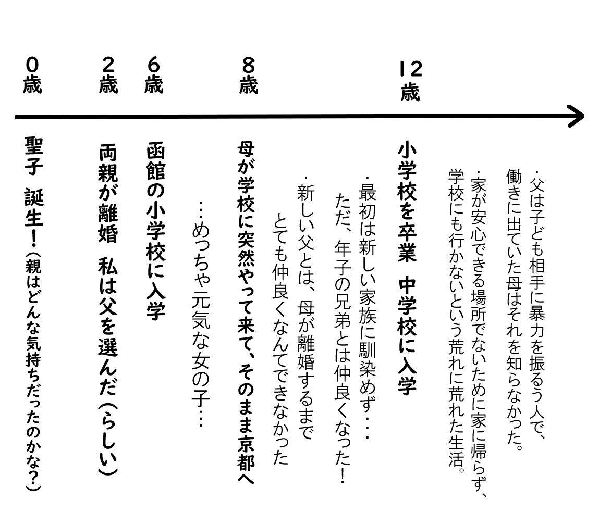
やり始めるまでは「ちょっと面倒だな」だなんて感じて億劫になりますが、やってみるだけの価値はありますから。何よりも「なんとなくトラウマやコンプレックスがある」という状態からずっと、何年も抜け出せていないのであれば......それは絶対に今、乗り越えておいた方がいいですよね？
もちろん年表には、明るいこと、ポジティブなこともいっぱい書き出してみても大丈夫！ 意外と、書いているうちに思い出して来るかもしれませんからね。
そして、書いているうちに気持ちの整理もできて来るかもしれません。実はこの「年表を書く」というのは、私が生活保護を受けながらパソコン教室に通っていたときに、授業でやったことのひとつでもあります。さあさあ、まずはやってみましょう！
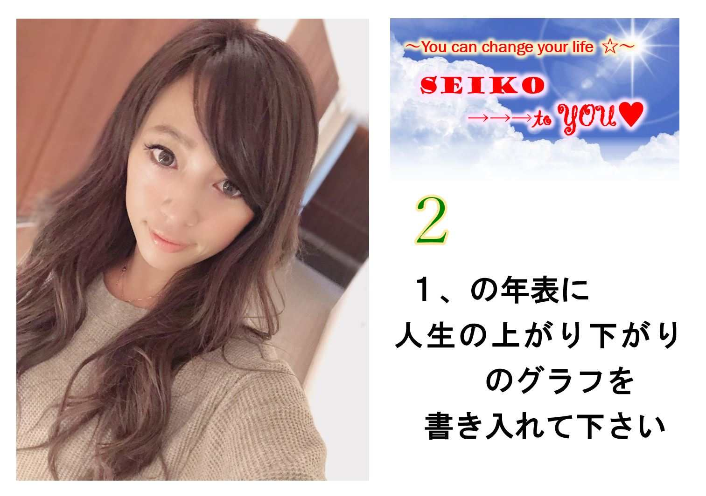
２ １、の年表に人生の上がり下がりのグラフを書き入れて下さい
人生の上がり下がり......ここでは、「気持ちの上がり下がり」を書き入れることにしましょう。
例えば私は小学校２年生まで父と暮らしていますが、世間一般的には父との生活は「最低ランク」だったかもしれません。ですが私は当時を振り返ると「幸せだった」と思うので、グラフでは上の方に線を引っ張ることにします。
そうすることで、自分に一体これまで何があって、そのとき何を感じたのかを、客観的に見つめることができます。
さて、あなたの人生は、どんなものでしたか？ そのとき何を感じましたか？
次の図は、これもまた一例です。あなたが分かるように書き入れたら大丈夫です。綺麗に書けていなくてもＯＫ。きちんとした表を作成することよりも、それであなたがどう感じたのか？ ということの方が大切ですからね。
人生の上がり下がりをグラフを書き入れることで、これまでのことを丁寧に思い出してみることにしましょう！
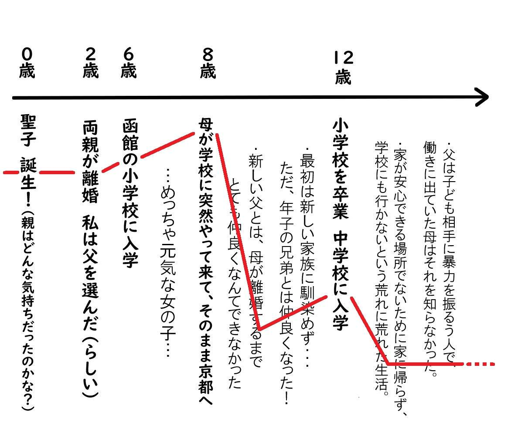
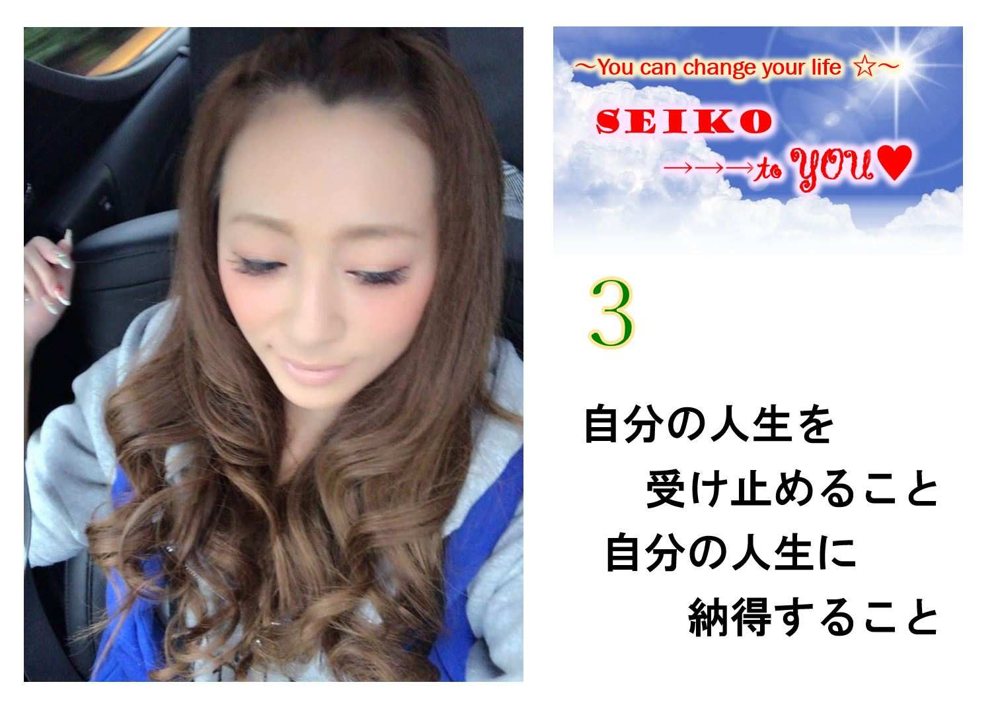
３ 自分の人生を受け止めること 自分の人生に納得すること
どうして最初に、こうして自分の人生について振り返ってみてもらったのでしょうか？ここでご説明させていただきますね。
それはですね、本当は全然納得していないのに、もう無理矢理にでも自分の人生をどうにかしよう、と思っている人がものすごく多いと思っているからなんです。
よく、「過去は変えられない、だから過去よりも、未来を見つめていきましょう！」だなんて言うじゃないですか。それは私も大賛成です！
でもね、未来を見つめるより何よりも、本当は自分の過去に、未だに納得できないんですって人......すごく多いと思います。そういう人って、どうしても目線が過去に向いてしまいますね。過去に出会った誰かへの恨みがまだ癒されない。親に対してのわだかまりがいつまで経っても消えない。自分の人生が、本当は嫌で、嫌で、嫌で......
そんな、「本当は、気持ちの奥の方では、全然過去に納得していない！」という状態の人が、「過去は変えられないから、未来を見つめて行こうよ！」と言われても、それってどうでしょうか？
どうしても許せない過去がある。それでも過去じゃなく未来を見なよと言われる。つい目の焦点を当ててしまうのは過去。ところが半ば強制的に、過去は気にするなと言われる。
......そうですね、それでは自分の中でその二つが反発してしまいますね。
そんな場合は、これ以上自分の気持ちをごまかして理屈でどうにかするよりも、自分でちゃんと納得するまで、自分の「過去」と向き合った方がいいですよね。
私もずっと、自分の人生から逃げ回っていました。
逃げて、逃げて、逃げて、逃げて......
その先に、「もう、これ以上逃げ回ったところで、どうにもならないじゃないか！」と気付いてしまうことになったんですけどね。
トレードの勉強をしたときも、「中学にもまともに行かなかった私が、勉強なんてやってる！」だなんて思ってちょっと笑えました。勉強しても分からない、じゃなくて、勉強の仕方すら分からない、というレベルでしたから。
けれどもそのときには「もうこれ以上逃げても、どうにもならない。だったらいくら辛くても、やるしかない」と、自分で自分のことに納得ができていたんです。だからあんなに自分では苦手だと思っていた「勉強」も、逃げずに取り組むことができました。
今でもあまり表には見せないようにはしているけれども、実はたくさん悔しい思いもするし、一人で泣いていることだってあります。でも、泣いて、泣いて、泣いて、泣いて......ずっと泣いてたら気付くんです。「あ、これ以上泣いてもどうにもならないや！」って(笑)
そしたら自分でちゃんと納得して、また自分のやることに集中してやっていけます。
本当は私は、何で自分がこんな人生なの？ って思って自分の人生をずっと恨んでいました。
けれども今では、こんな自分の人生をちゃんと受け入れることができています。
これが紛れもない、私自身の人生なんだって納得することができています。
納得すること、受け入れること。それができなければ、どうも私たちはスムーズに次のことに取り掛かることなんてできないようです。
そしてこれは「自分の人生」だけに限ったことではありません。
今、いろんな成功哲学の本やセミナーが溢れていますが、どうも「表面だけ」分かったような気になってしまうものもとても多い気がしています。
いわゆる、「机上の空論」で先生が話をして、それを高いお金を出して受講する人がいて、参加した人は本当は全然納得してないし、身についていないのだけれども、なんとなく自分が成長したような気にさせられてしまう。
これじゃあマズイですよね。知識だけは増えたような気がして、全然進歩することはできません。
ここで、「ちゃんと納得する」ということの大切さを認識しておいてください。
「腹落ちさせる」「腑に落ちるまでしっかり向き合う」くらいまでやることが大事なんです。
逆に言えば、ある新しく教わったことについて、どんなに向き合っても腑に落ちない......というのであれば、それはあなたにとって「何かが違う」ことなのかもしれません。もとからそれは「机上の空論」であって、それが分かっていながらあなたに無理に押し付けて来たような可能性だってありますから。また、今はあなたにとってそれは取り入れるべきタイミングではない、なんてケースもあります。そのときは「どうも腹落ちしない。だから辞めておこう」と一歩引いてみることも大切です。
ただ......「自分の人生」だけは、納得しないから、と言って逃げ出す訳にもいきませんね。
だったら、ちゃんと納得するまで向き合ってみることにしましょう。
納得しないのなら、一体どのタイミングでの、どんな出来事に納得していないのか？
それは本当に、今の今まで引きずってしまうような問題なのか？
恨みがあるのなら、誰に対しての恨みなのか？
どうして許すことができないのか？
「あの人のせいで、自分の人生はこんな悲惨なものになってしまったんだ......」なんて思っていたけれども、でもそれって本当に、自分じゃどうすることもできないことだったのか？
ずっと悩んでいたら、あるときふっと「あ、それも含めて自分の人生なんだ」と納得できる瞬間があると思います。「あの人の人生の方がいい、だなんて思っていたけれども、あの人に私はなれないんだ、私の人生は、あの人のものに取っ替えることなんてできないんだ......」なんて当たり前のことに気付くかもしれませんね。
ですが納得していないのに、むやみに新しいことをしようと走り出すのは良くないですよ！
それじゃあせっかくいいことを教わっていたとしても、心の奥底で「でも自分は、とんでもない親に育てられたせいでそんな能力もないから、きっと身につかないだろうし......」だなんて思って拒絶してしまうようなことが、ずっと続いていくのかもしれないですからね。
それってどう考えても、もったいないですよね......
そうじゃなくて、「あ、これも自分の人生なんだ」とふっと気付いて、納得できるまで、もうとことん自分の人生や過去について見つめてみることにしましょう。
この清水聖子でも、そう思えたのですから。
自分から逃げずにいれば、あなたにもそう思えて納得できる瞬間が、必ず来るはずですよ！
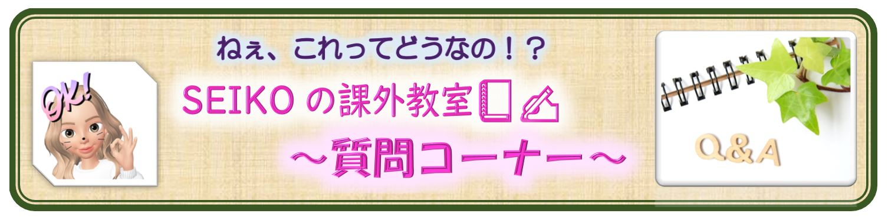
■□■━━━━━━━━━━━━━━━━
ねぇ、これってどうなの！？
ＳＥＩＫＯの課外教室 ～質問コーナー～
━━━━━━━━━━━━━━━━■□■
Ｑ
聖子さん、自分の人生を振り返って、上がり下がりのグラフも書き入れてみました。
自分でも分かってはいたけれども、グラフにあまり上下の幅がなくて、面白くない人生だったなあと思います。
聖子さんみたいな、波乱万丈な人生の人が羨ましいな、とも思います。聖子さん、こんな人生を僕はどう捉えたらいいのでしょうか？
＊＊＊＊＊
Ａ
そうですね、確かに私の人生は波乱万丈過ぎました(笑)
自分の人生、絶好調！ と感じることもなければ、もうこれ以上の底なんてないと思うほどのどん底、という時期もなかった、ということですよね。
同じような人生だとしても、「私の人生は穏やかに時間が過ぎて行って、毎日幸せを感じることができて、こんな人生で本当に良かった」と感じる人もきっといるでしょう。
でも、そうは感じていない、ということですよね。
ここで一歩立ち止まって考えて欲しいのが、「隣の芝生は青い」って言うみたいに、ただ「自分と違っていいな」と思ってるだけになってないか？ ということ。
特にネット業界は（ネット業界に限らないですけどね）、どん底の時期を経験して、だからこそ今の幸せな自分がある！ というのをオープンにしている人、多いですからね。
それ自体は全然、悪いことではないんです。私もだからこそ語れることが本当にいっぱいあります。
ただ、それを聞いて、「どん底の時期がなかった」人が変に負い目を感じるというか、劣等感に繋がってしまうのは、それはちょっと違うのかな、とも思いますね。
先にも言ったように、穏やかな人生に感謝しながら生きている人だって、たくさんいるんですから。結局は、それを自分がどう思うか？ ということだと思いますね！
自分とちゃんと向き合ってみて、「やっぱり波乱万丈な人生がいい！」と思えば、今からでも充分、波乱万丈な人生にできますよね。例えば、会社も辞めて、全財産を使って、いやこの際もう借金してでも、世界旅行に出てみる！ とか。
そんな無茶なことしてみたら、きっとその後は、それまで思いも寄らなかったようなアクシデントだらけの人生になりますね(笑)
でもそれ以上に、得るものが多い人生になるんじゃないでしょうか？
「いや、それじゃあリスクが......」なんて思うのであれば、それはあなたが心の中では、波乱万丈な人生なんて本当は望んでいないってことかもしれません。
全く別の理由で波乱万丈な人生に憧れていたのかもしれませんね。
波乱万丈な人生を語る人ってカッコイイな、自分がうまくいっていないのはきっと面白くない人生を送ってきたせいだ、もしどん底の時期があればきっと今頃大成功していそうなのに、などなど......
結局は、自分の人生が面白くないのを、心の中でどこか人のせいにしていた、自分の人生なのにそこに自分が生きていなかった！ なんてことに気付けるのかもしれませんね。
答えをまとめるのであれば、上がり下がりがない人生でも充分素晴らしいと思います！ ただ、それでも波乱万丈な人生に憧れるのであれば、今からでも自分でそんな波乱万丈な人生にしてみませんか？
ということですね！
ちなみに私の周りで成功している人のことを思い浮かべてみたのですが、確かに波乱万丈な人もいるけれども、「このままじゃ自分の人生面白くないな」って思って、敢えて自分から別世界に飛び込んで来た！ という人も結構いますね。
表で語られるのは、波乱万丈な人のストーリーばかりですけどね。
やっぱり結局は、自分がどう思って、どう行動するか？ ではないでしょうか？
Ｑ
私は大学受験に失敗して、もし合格していればその後の人生も幸せだったはずなのに、全部うまくいかなくなってしまいました。これじゃいけない！ と思っていろいろやってみるのですが、何をやっても「もしあのとき失敗していなければ......」という気持ちが拭えません。
私みたいに、過去に取り返しのつかない大きな失敗をしてしまった場合は、どうしたらいいでしょうか？
＊＊＊＊＊
Ａ
大学受験......私とは全く縁のなかった世界のお話ですね(汗)
だからあまり、偉そうな立場では語れませんが。
ここでも、そうですね......私の経験からお話しできることを中心にお答えできたらなと思います。
まずは、自分の人生の中で自分が納得していないのが、その「受験失敗」のときだった、と自分で分かっているのであれば......
もう、それはとことん、そのことについて悩んでみるのもいい！ とも思います。
もしかしたら周りの人は「そんなクヨクヨしないで」「失敗した過去より前を向く方が大切だよ」なんて声をかけてくれるかもしれませんね。それで気持ちが中途半端になってしまって、自分の中できちんと折り合いをつけられていないのかもしれません。
自分の中で折り合いがつけられず、前に進もうにも進めない、というのであれば、ここは周りのアドバイスはいったん置いておくことにしませんか？ そしてもう、自分で納得するまで自分と向き合った方が、かえってスッキリすると思いますよ！
もしあのとき失敗しなければ、今はどんなに素晴らしい日々を手に入れることができたのだろう？
なぜ受験当日、自分はあんなことをしてしまったのだろう？
自分が受験に失敗したせいで、あんな人やこんな人の期待を裏切ってしまった、それが申し訳ない......
もしあの日に戻れるのであれば、あの日の自分に何を伝えるのだろう？
他にもたくさんたくさん、悩んでください。
私の場合は、もう悩んだって何も変えられないということがはっきりと分かりました(笑)
でもこれって、理屈で言われても納得しないと思います。それこそ悩みに悩んで、これ以上ないほど悩んで、だからこそ腑に落ちるものですからね。
もしかしたら、私とは違う何かを見つけられるかもしれませんね。
それがあなたの中に眠っていた【本当の答え】なんだと思います。
それが見つかったら、自分でその答えを本当に大事にしてくださいね。
そして、もうひとつ。
おそらく、「合格していたはずの自分」が送っていた生活よりも、今の「失敗してしまった自分」の方が幸せじゃない......と思うから、辛いんですよね、きっと。
どう考えても無理だけれども、それでももし、本当に「合格していたはずの自分」が今、どんな生活を送っているのか覗いてみることができるのだとしたら？
そうそう、今ごろ、超ハッピーで幸せ絶好調で暮らしているのかもしれないって思えてきてしまうんですよね。
それに比べたら、現実の今の自分は、なんだかパッとしないよなぁ。そう思うと惨めになりますね......
でも？
そんな現実のあなたが、これからの人生を歩んだ先にいるはずの、「未来の自分」は？
ちょっと考えてみてください。今はまだ会えないけれども、「未来の自分」って、もしかしたら、「合格していたはずの自分」よりも、もっとずっと幸せなのかもしれないですよ？
よく分からないけど、そう「信じる」ことだったらできますよね！
きっと未来の私は、もっともっと幸せなんだ！ もうね、お金もめちゃくちゃいっぱい稼いでるし、人にもとっても恵まれているし、やりたいことがたくさんあって、それをやる時間もちゃーんとあって、なんかよく分かんないけど、とにかくね、未来の私はこれ以上ないくらいに、本当に本当に幸せなんだ！って。
信じるか、信じないかは、それは本当にあなた次第、ですけどね。
『本当の自分に出会うためのノート』でも書かせていただきましたが、私はあるとき夢を持ちました。
「マダムＳＥＩＫＯになる！」という夢です。
そのときの私は生活保護を受給しながらパソコン教室に通っていました。「マダム」になるなんて、そんなところから一番ほど遠いところにいたような私です。
でも、そう信じることにしました。【マダムＳＥＩＫＯ】になるんだ！ って。
何をもってマダムＳＥＩＫＯになったと言えるのか、どうしたら自分の夢が叶ったと言えるのかは自分でも分かりませんが、でもあのとき「私はマダムＳＥＩＫＯになる」と信じていなければ、今の私はきっといなかったでしょう。
だから、「未来を信じる」方が先だと思います。そうしないと現実がついて来ないと思います。
「受験に合格していれば、もっと幸せだったのに」と今、思うのであれば......
それはですね、よーく聞いて、受け止めてくださいね。
【受験に失敗した私は、もう幸せになれない】
とあなたがずっとずっと思っていた、過去の延長線上......
それが、
今、
だからかもしれませんね。
「受験に失敗した私は、もう幸せになれない」って思っていたから、そう思った通りの、今現在、になってしまっているということです。
だったら、
「それでも、未来の自分は、きっと今とは比べ物にならないくらい圧倒的に成功して、これ以上ないくらいに幸せなはず！」
そう信じることにしてみたら？
そう思い描いた未来が本当にあなたを待っているのかもしれませんよ！
そうそう、ただ心の中で描くだけじゃなくて、そんな素晴らしい未来にしていくための「行動」も忘れずに、ね。
成功するための道順なんて、決してひとつじゃないのですから。
「受験で合格していれば......」と思って視野が狭くなっていたら、ひとつしか見えなくなってしまうかもしれないですけどね。
これからの未来の方を、もっと幸せにすることだったらできるはず。そう信じてみることからはじめましょう。
ぜひ参考にしてくださいね！
ここで、これまでお伝えした項目を振り返ってみましょう。
１ あなたの人生の年表を書き出して下さい
２ １、の年表に人生の上がり下がりのグラフを書き入れて下さい
３ 自分の人生を受け止めること 自分の人生に納得すること
すごく難しいことはお話ししていませんね。でも、受け止めるのには少し時間がかかるかもしれません。
あなたは自分の人生を受け止め、納得することができましたか？
焦らなくても大丈夫。ちゃんと受け止められるようになった、と感じたら、次のページへ進んでいきましょう！
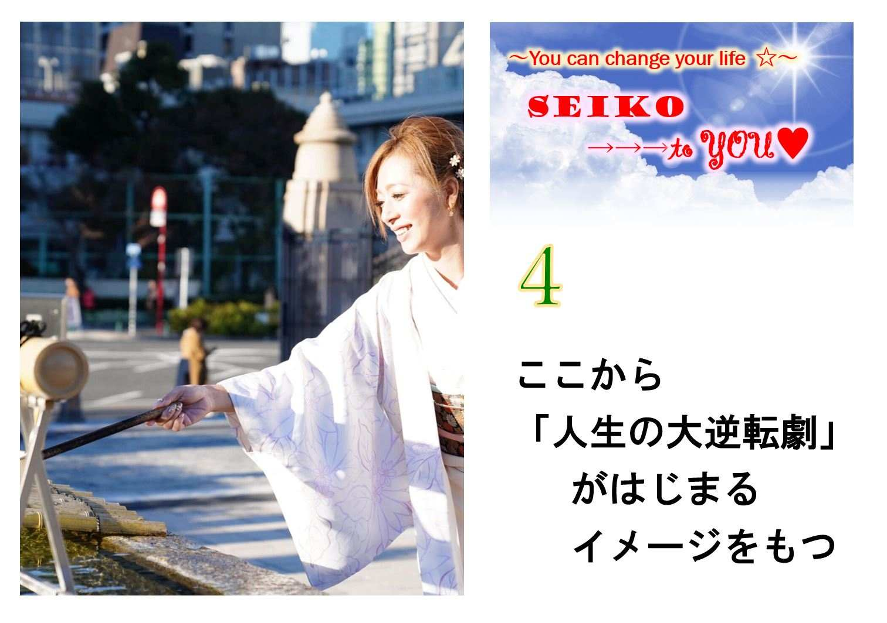
４ ここから「人生の大逆転劇」がはじまるイメージをもつ
そうそう！これが本当に大事です！
ここからあなたの、「人生の大逆転劇」がスタートするんですから、ね！
でもその前に、これまで見て来たように、自分の人生に納得することからスタートしてくださいね。
いえいえ、成功している人の中にもいますよ！ 何かと恵まれてなくて、幼い頃から不幸な思いをして、実は自分の人生に全然納得していないのだけれども、その悔しさや怒りの気持ちをバネにして、ネガティブなパワーを原動力にして成功しました！ という人。
でも、それができる人って一部だと思います。そしてもしあなたがそうできる人であったのなら、今はこの本を読まなくても成功していると思います。きっと、そうじゃないから、どうにかしたい！ っていう気持ちでいたところに、何かの縁があってこの本の、このページに辿り着いたのではないでしょうか？
私もそうだったのでよく分かるのですが、自分の人生に納得していなくて、周りのせいにしながら生きていたら、今度こそ成功しよう！ と決意して新しいことをしようとしても、こんなことが頭をよぎってしまうんですよね。
「でも、きっと私がやったところで、うまくいくはずなんてないし......」
「本当だったら、こんなことしなくても、今頃幸せに暮らしているはずなのにな......」
「あ、やっぱり私なんかが、こんなこと、するんじゃなかったんだ......」
「これはきっと、一部の恵まれた人だけが、成功するためのものだったんだろうな......」
ふと心の中で顔を出した「マイナスの感情」に、自分が引っ張られてしまって、それ以上前に進めなくなってしまうんです。
そうならない為にも、今この本を読んでいるあなたは、まずは自分の感情を「ニュートラル」の状態に持って行くことを大切にして欲しいと思うのです。
また、ネガティブなパワーを原動力にして成功した人もいる、とお話ししましたが、例えあなたがそうできる人であっても、私はおススメはしません。
それって、どこかで劣等感や満たされない気持ちを抱えたまま、闇雲に前に進んでいる、ということですから。そういう方って、一見すごく成功しているように見えるのですが、なんだか見ていて、ちょっと危なっかしいな......と思ってしまいます。
周りの人が自分のことが好きで集まっているのか、お金のために集まっているのか分からなくなってしまっている、というか......お金や成功の力で周りを認めさせようとしてしまうから、やっぱりそういうことになってしまいがち。確かに成功するって大事だけれども、その前に自分を大事にできていないんです。
そうしてどんどん成功していって、自分の気持ちは全然満たされていないのに、関わって来るお金の金額だけは一桁、また一桁、またさらに一桁、いやいやまだ一桁......と大きくなっていく。その分の重圧はかなりのものになるのに、自分の気持ちはそれでも満たされない。
そんな復活劇があったとしても、そんなの悲劇でしかありません。あなたも聞いたことがあるかもしれませんね。お金がたくさんあるために、精神が異常になってしまう人がいるって......
私はあなたに、そんな成功を手にして欲しい訳ではありません。あなたには幸せに、豊かさで心も満たされて成功して欲しいんですね。
さあ、自分の人生を、ちゃんと自分のものだって受け入れることはできましたか？
そう。これまでがどんな人生だったとしても、かけがえのない、あなただけの人生なのですから！
ちゃんと自分の人生に納得して、受け入れることができたらスタートラインです。そしてここからが、本当に楽しいところですね！
先ほどの年表で書き入れたグラフに、延長して上向きのラインを入れてみたら、より鮮明にイメージできるかもしれませんね！
あなたの人生の大逆転劇は、ここからはじまりますよ！
もしかしたら、全てが順調ではないかもしれません。でも、ここから確実にはじまるのです！
そのイメージを、ここでは描いてみることにしましょう！
あなたの人生の大逆転劇、はじまり、はじまりーーー！
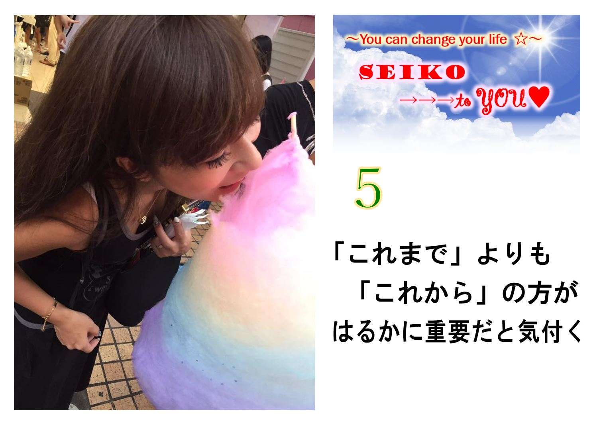
５ 「これまで」よりも「これから」の方がはるかに重要だと気付く
私も、もーーーーーーう、いろんなことがありましたよ！ これまで。
でも、そんなことよりも、私には「これから」の方が重要。
これからの人生で、やりたいことが腐るほどありますからね(笑)
けれども残念ながら、自分の過去の人生に捉われているうちは、未来がなかなかが見えてこないんですよね。
「だって、こうだから」ってもっともらしい言い訳をつくり上げては、自分が何もできない理由や将来が輝いていないんだっていう根拠にしてしまうんです。
だって、自分の目線が「過去の乗り越えられていない何か」の方に向かってしまって、ピントがそこにばっちり焦点が当たって、それがよーく見えているのですから、それじゃあ無理もありませんね。
本当は、目線が未来の方にしっかりと向かっていたら、過去のことなんてどうでもよくなっちゃうんですけどね。
でもですね、これって、ちゃんと自分の人生をニュートラルに受け止めることができないと、なかなかそうすることができません。
これまでの項目、１、２、３、４と進んできたら、あなたの目の前には、自分の人生について書いた人生の年表やグラフがあると思います。この年表、実は「これから」の方が大切ですからね！
だから、この「過去しか書かれていない年表」にしがみついていたら本当はダメなんです。何かある度にこの年表を持ち出して、「私がうまくいかないのは、この年表にある、ここの出来事が理由なんです」とか論じて主張するようなことしちゃダメですよ！
たぶん、それって、関係あるようで、よーくよーく見ると、根本のところではそんなに関係ないですから。
でもそう思えるためにも、「あ、これは私の過去なんだ」「あくまでも、これは私の過去であって、私のこれまでの人生であって、これで私の【これからの未来】が決まる訳じゃないんだ」っていったんちゃんと受け止めることが大事です。そうじゃないと、なんだかねじ曲がった年表の使い方、してしまいますからね。
もしかしたら、あなたのこれまでの人生は、大声で泣きたいくらいに辛いことがあったのかもしれませんね。そしたら、大声で、もう気が済むまで泣いていいと思います。
ただ、そんな過去よりも、「これから」の方がはるかに重要。泣き疲れたら、前向いて、未来の方を見つめて歩き出しましょ、ね！
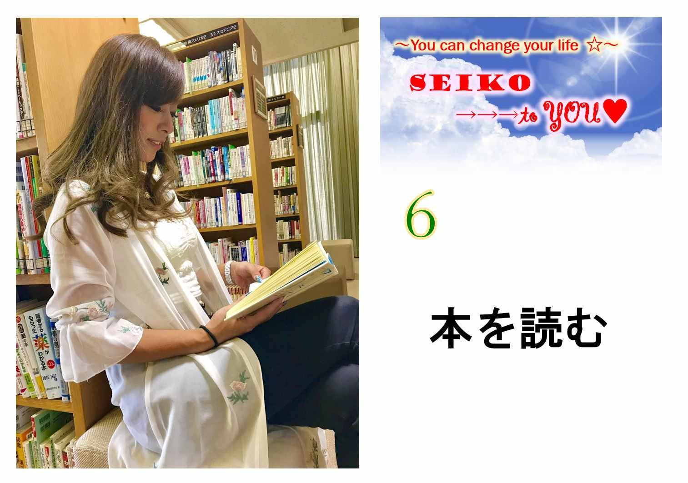
６ 本を読む
本を読むのは、何のため？
「知識をつけるため！」そうそう、それもあるかもしれませんね。もちろんその答えも間違っていません。大正解です！！！
私が例のパソコン教室に通っているときに、社長にこう言われました。
「お手本になるようなメンターを見つけなさい」
そして、「メンターになるような素晴らしい人が身近にいないなら、本でもいい」とも言われました。なので本屋さんに行ってメンターになりそうな本を探して、読むことにしたんです。
でも、本を読むのは苦手でした。勉強をして来なかったから漢字が読めない。若干後悔しましたが、過ぎたことを悔やんでも仕方ない......
と、いうことで、そのときはなるべく簡単に読めそうな本を見つけました。
それが千田琢哉さんの本だったんです。そして、それが私にとっては良かったんですね。
続きは７、でお伝えすることにしましょう！
あなたは日頃、本を読んでいますか？
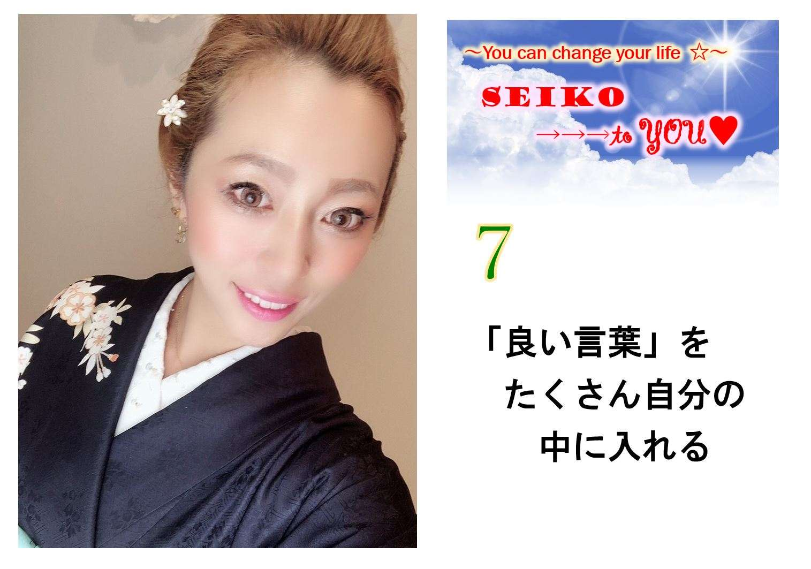
７ 「良い言葉」をたくさん自分の中に入れる
私は、自分が読みやすそうだと思ったので千田琢哉さんの本を読むことにしました。
本屋さんで見つけたから、というのがその理由だったのですが、これが本当に良かったと思っています。
千田琢哉さんの言葉は、スッと心に入って来ました。
そして共感できるものばかりだったんです。
千田琢哉さん、という既に成功している人の言葉を、私自身の中にどんどん入れていくことができたんですね。
良い言葉を日頃からつかいましょう、とはよく聞くことだと思います。でも、それが上辺だけのものになっている人も多いのではないでしょうか？
読みやすいから、千田琢哉さんの本なら読める。そして、本を読んでいる最中は気分が落ちることがありません。本を読んでいるうちに、不思議と前向きになっていく自分がいました。
知識をつけるためでなくて、「良い言葉」を自分の中に入れる、という本の読み方もあるんです。これは本じゃなくてもできることなのかもしれませんね。ここで重要なのは、良い言葉に触れる、つかう、良い考え方があると知る、だなんてレベルじゃなく、「自分の中に入れる」くらいまで、「腑に落ちる」くらいまで染み渡らせること！
あなたが日頃つかっている言葉。
あなたの中にある言葉。それは良い言葉ばかりですか？
ネガティブなことや悪い言葉ばかりになってしまって、ついつい、自分をいじめてはいませんか？ だったら、いったんその言葉は手放すことにしましょう！ 代わりに良い言葉をどんどん入れていくんです。良い考え方も自分のものにしてしまいましょう。
成功者がそうしているように、あなたも「良い言葉」を自分の中に行き届かせてみましょう！
それがあなたが生きていく上の「ベース」となりますから。
８ 「良い言葉」で思考する
なぜ、「良い言葉」をたくさん自分の中に入れていくことが大切なのか？ ということに、ここでさらに納得できるんじゃないかなと思います。
私たちは毎日毎日、途絶えることなくあらゆることを頭の中で考えますよね。
その、思考している際にも頭の中で「言葉」を使いますよね。
ついつい、頭の中でつかっている言葉が「悪い言葉」だとしたら？
例えば、あなたもトレードの勉強をはじめたとしましょう。
＝＝＝＝＝＝＝＝＝＝
「よし！ 今日からトレードの勉強をはじめるぞ！」
→→→（はぁ～......新しいことはじめるのって、疲れるよね）
「とは言っても、突然リアルトレードはできないから、まずは基礎的なことをおさえよう」
→→→（うわ......基礎的なことでも、これまで全然知らなかったようなことばかり。リアルトレードまで辿り着くなんて、こんなのムリじゃないの？ムリムリムリムリ！）
＝＝＝＝＝＝＝＝＝＝
そうそう、ついついうっかり( )、の中にあるような、せっかくのやる気の芽も自分で潰してしまうような「残念な言葉」を、いちいち差し挟んでしまうんです。
頭の中で普段つかっている言葉が、「良い言葉」にチェンジしたら、こんな感じになるでしょうね。
＝＝＝＝＝＝＝＝＝＝
「よし！ 今日からトレードの勉強をはじめるぞ！」
→→（よし！ 新しいことをはじめるって、すごく楽しみ、楽しみ！）
「とは言っても、突然リアルトレードはできないから、まずは基礎的なことをおさえよう」
→→（そうそう。焦らずいこう。そうすればきっと、ちゃんとリアルトレードができるところまで、辿り着けるのだから！ 確実にいけば、きっとできる！）
＝＝＝＝＝＝＝＝＝＝
これが、一日２４時間、毎日毎日、続いているのだとしたら？
そうなれば、もうトレードができる、できないって、能力の違いというよりも、日頃自分の頭の中で、または心の中でつかっている「言葉の違い」だと思えてきませんか？
そしてこれって、きっとトレードに限ったことではありませんよね。
成功するためには、「良い言葉」で思考することが本当に大事。
あ、ちょっと余談ですが、常に何があってもポジティブなことを信じて疑わない、ということとは少し違います。凄腕の経営者は、その辺はかなり冷静です。
もしかしたら、自分が思った通りにはいかないかもしれない。常にうまくいかないときのことを想定しているから、実際にうまくいっていないことを見つけて受け止めるのが早い。そこで変にダメージを受けることもないんです。それでもうまくいくにはどうしたらいいのか？ ということを、冷静に、前向きに、いつも頭の中で何通りか想定しているから、リカバリーが早いんです。
うまくいかないことは常に想定しているけど、１０やることの９はうまくいかないこと前提で物事を進めているけど、それでもちゃんと自分は成功するよ、目標は達成するよ、夢は叶えるよ、ということは最後まで信じて疑わないんですね。
成功までの道は、決して楽なことばかりではありません。だからこそ、表面上だけ取り繕うんじゃなくて、良い言葉を自分の中にしっかりと入れて、良い言葉で思考し続けることが大切です。
そして、ここでも一言添えておきますが......ちゃんと自分で納得して、腑に落ちるからこそ身につくもの。
全然納得してないのに、無理に理屈だけで、「良い言葉しか私は考えない！」と強制しようとしたら、拒否反応が出てしまうかもしれません。例えば、心がぐったりと疲れてしまってもう何もしたくない、と思えてしまったり。
だからこの本は、ただ読むことよりも、時間をかけてでも自分で納得する方が大切です。
何か思考しているときに、うっかり自分の心の中で差し挟んでしまう言葉は、良い言葉の方が絶対にいいですよね。
それでもネガティブな言葉しか出てこないのであれば、いったん２、や３、に戻ってみることが大事かもしれません！ そこでクリアできていない何かがあるのかもしれませんから。
ぜひ、ちゃんとひとずつ、納得しながら読み進めてくださいね！
繰り返しになりますが、成功するためには、「良い言葉」で思考することが大切ですよ！
９ 自分が生きるテーマとなる、大切な言葉を見つける
私の場合は、
ⅰ ａｍ ♡ ｈａｐｐｙ
です！
どんなに辛いことがあっても、周りに感謝の気持ちを持ち続けて、希望を捨てずに目の前のことに全身全霊で取り組めば、必ず道はひらけてくる、きっとそんな人にこそ、華が咲き誇る......そう信じているからです。
「この日本で、学歴も何もない人間が幸せになるなんて、ありえない」なんて言う人もいるかもしれません。それでも私は「ⅰ ａｍ ♡ ｈａｐｐｙ」なんです。
なぜって、それは私が決めたから。
この先私はずーっと、「ⅰ ａｍ ♡ ｈａｐｐｙ」 なんだって決めたんです。
こうして、何かテーマとなる言葉を見つけたら、自分の生き方の中にひとつ芯が通ったような感じがして、自分がブレなくなりますからね！
自分にピッタリの言葉を見つけましょう。と、なると、自分自身のことをもう一度見つめ直すことになりますね。自分にピッタリって、どういうことだろう？
私みたいに何か短い言葉でもいいし、誰かの名言でもいいし、ことわざや四字熟語でもＯＫ！ 新たに読んでみた本の中にその言葉が見つかるかもしれませんね。この言葉を軸にして、私はこれからの人生、どんどん前に進んでいくぞ！って思える何かピッタリな言葉を見つけるんです。
どんどん前に進もうと思ったら、今いる場所を離れて、変化していくことが必要になりますよね。ですが、やることなすことに芯が通っていなくて、自分の軸も何もなかったら？
変化しているつもりが全然前に進んでいなくて、ただ振り回されていただけだった、なんてことになってしまうかもしれませんから。
変わっていくためにも、前に進んでいくためにも、力強くてしなやかな「軸」が必要になります。
また、言葉にすることで、自分ではっきりと自覚することもできます！
一度決めたら、一日のうちに何度でもその言葉を思い出すんです。
あなたはこれから、どんな風に生きていきたいですか？
あなたが生きていく上で、大切なテーマを言葉で表すとしたら、どんな言葉になりますか？
ねぇ、これってどうなの！？
ＳＥＩＫＯの課外教室 ～質問コーナー～
━━━━━━━━━━━━━━━━■□■
Ｑ
これからの人生が良くなる！ これから人生の大逆転劇がはじまる！ そうイメージしたいのですが、私はもう、年齢的に、そんなにたくさん人生の時間は残されていません。もっと早く、いろんなことを知っておきたかった。
若い人じゃなくて、こんな年配者には人生の逆転劇なんて起こせそうにありません。聖子さん、こんな私にも、何かアドバイスをお願いします。
＊＊＊＊＊
Ａ
そ、そうですね......人生の先輩に、何かアドバイスを！ というのも、ちょっと気が引けてしまうのですが。むしろ私の方が学ぶことが多いのかもしれませんから。
でもここは、私が思ったことをお伝えすることにしますね。
ええっと、それは本当に、年齢的に、無理なことなんでしょうか？
年齢のせいにする、と言えば、「私にはまだ若すぎて、経験がないので無理です」なんて言う人もいますね。
２０歳でそう言う人は、３０歳になって同じことがあっても、今度は「今は仕事が忙しいので無理です」なんてことを言う気がします。
そして４０歳で同じことがあっても、今度は「家族のことで大変なので無理です」なんてことを言う気がします。
さらに５０歳で同じことがあっても、今度は「もう少しで定年退職だから、それまでは無理です」なんてことを言う気がします。
そうして、６０歳で同じことがあっても、「もう年齢的に、無理です」と言われちゃう気がしますね。
かと思えば......ですね、私があるコミュニティで話をしていたときのこと。同じ時期にメッセージをくださった人の内容が、ある人は「もう６０歳で、今さらこんな難しいこと言われても無理です」というものでした。そしてある人は、「もう７０歳になりますが、まだまだ自分には知らないこと、覚えていくことがたくさんあると思うと、楽しみですね！」というものでした。
あれ？６０歳の方が、年齢的に無理、と言っている。
けれども、７０歳の方が、年齢的に無理、だなんて言わずに、むしろこの歳になって楽しみ、と言ってくださっている！
そんなことを思い出してみると、ですね、「この歳では、人生の逆転劇は起こせない」というのであれば、それは何かできないことを、年齢のせいにしようとしているかもしれないなって思ってしまうんです。
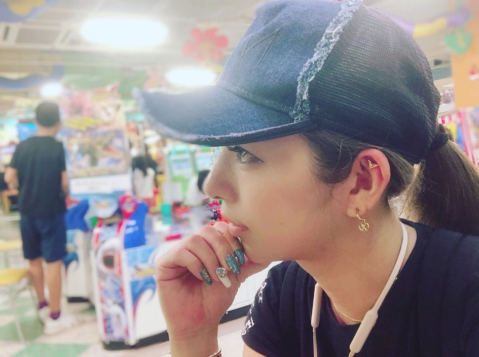
たぶん、どんなに若くても、できない、と思えば何もできません。
どんなに年齢を重ねても、前向きに取り組もうと思えば、取り組むことはできるんです。
「できない」と思ったら、もっともらしい理由をどうしても探してしまいますから。
おそらく、「できない」と思ったら、もっともらしい理由を探してしまう思考回路が、どこかで身についてしまってそれが当たり前になってしまっているのかもしれませんね。
いえ！ それを責めたいのではありません。むしろ、そういう人の方が、今の日本ではものすごく多いような気もしますから。
それじゃあこの本に書いてあること以外のことだとしても、何か有益なことや成功に繋がることを言われたとしても、もう瞬時に「できない」と思うのと、もっともらしい理由を探して発見するのが同時に行われてしまいます。きっとそれは、あっという間もないくらいに！
いったんその思考回路が無意識のうちに当たり前になってしまっていたら、この先もずっと、人生を変えようとしても、何かはじめようとする度に、
「やっぱりこれも、自分にはできない。どこかにこんな自分にできることはないものか......どうしたらいいんだろう？」と言ってうなだれてしまうしかなくなるかもしれない。
いえいえ、その、「自分にはできません」という前提から、変えることにしませんか？
「自分にもできる」ということにして、できる理由をたくさん探してみることにしませんか？「自分にも、きっとできるんだ！」って、そんな未来をちゃんと信じることの方が先ですからね！
ここで一度、何でも瞬時に「できない」と思ってしまうこと、そしてもっともらしい理由を探してしまう思考回路を、リセットすることにしてみては、いかがでしょうか？
Ｑ
これまでのお話を聞いて、本を読むことの大切さがよく分かりました。いい本を読んで、いい言葉や考え方を自分の中に取り入れることができ、そしていつも自分が頭の中でつかっている言葉も変えることができたら、成功するのは必然のようにも思えます。
聖子さんは千田琢哉さんの本を読まれた、ということですが、私も千田琢哉さんの本を読んだ方がいいでしょうか？ それとも、他におすすめの本はありますか？
＊＊＊＊＊
Ａ
そうですね！ 千田琢哉さんの本は、どんな人にもおすすめですよ！
本を読もうと思ってはいるけど、どの本を読むかは決まっていない、というのであれば、この機会に手にとってみてはいかがでしょうか？
あとは、私から何か言えることがあるとすれば......そうそう、私、とにかく素直だったんですね。
パソコン教室に通っていたときは、何かをどうにかしないといけないのは分かってたけど、どうすればいいかなんて分からなかったので、そこで講師をしていた社長や、千田琢哉さんが本で書いていることを、とにかく素直に受け止めました。良いも悪いもよく分からなかったけど、とにかくどうにかしなきゃって思ってたし、言ってることはちゃんと共感できる、納得できることばかりだったので、素直に受け止めて実行することにしたんです。
ここで変にいろんな知恵がなかったのも、かえって良かったのでしょう、今思うと。
こう振り返ってみると、どの本を読むにしても、そこに書いてあることを素直に受け止められるかどうか？ というのもすごく大切だと思います。
人間なので、合う、合わないというのもあるかもしれません。
私も周りの人への感謝は忘れずに生きていきたい！ と思っていますが、成功者、と言われる人だとしても、「ちょっとこの人、合わないな......」と思ってしまう人もいるんです、ここだけの話、ね。
私はできるだけ、関わる人にはフレンドリーに接したい ！と思っているのですが、こう、たまにあるんですよ、あからさまにそっけない態度を取られてしまったりすること、とか......ですね。さみしいじゃないですか、そういうのって。
念を押しておきますが、ここだけの話、ですよ(汗)
それと同じで、あなたも周りの人や口コミから、「この本いいよ！」とすすめられることもあるかもしれませんね。そしてその本を読んでも、あれ？ なんだか、この人の言葉、私は受け取れないな......と思うこともあるかもしれません。
そのときは単純に、あなたに合ってない、ということなのかもしれませんから。
それよりも、その本とは別の、「この人の、この言葉の方が私は素直に受け止められるな」と思える本を選んで読んだ方が、きっと身につくと思いますよ。
そしてそうそう！ 無理に難しい本を読んで、自分が賢くなったような気になってしまうのはやめておきましょうね！
そんなことしたって、知識は上辺だけのものになってしまう可能性、大ですよ！
それでも難しい本を、自分のものにしたい！ と思うのであれば、何度も何度も繰り返して読んで、自分の中に落とし込むくらいに読み込むことにしましょう。
最初にもお話ししましたね。根っこが元気にならないと、綺麗な花を咲かせることはできないんです。上辺だけの知識がいっぱい、というのは、葉っぱや茎に水や栄養をたくさんあげて、それでどうにかなる、と思っているような状態です。
「読んで分かったつもり」になるんじゃなくて、「自分の中に落とし込む」「納得する」「腑に落ちる」という段階までしないと、人生は変えられないと思います。単に知識をつけるのが目的の本や、あとは小説などを楽しんで読む、というのならまだいいかもしれません。
ただ、自分の考え方を変えるための読書や、「良い言葉」を吸収するための読書の場合、さらっと目を通しただけでは残念ながら、人生を変えることはできませんね。
本を読むのであれば、そこに書いてあることを素直に実践して、自分の中に吸収していくことが大切ですよ！
そして、次に進む前に、ここでももう一度、これまでの内容を振り返ってみることにしましょう！
４ ここから「人生の大逆転劇」がはじまるイメージをもつ
５ 「これまで」よりも「これから」の方がはるかに重要だと気付く
６ 本を読む
７ 「良い言葉」をたくさん自分の中に入れる
８ 「良い言葉」で思考する
９ 自分が生きるテーマとなる、大切な言葉を見つける
この本は、誰かと競うためのものではありません。あなたのペースで理解していけば大丈夫。その方が絶対、あなたの身につきます。さらっと読み流しせずに、理解しながら、納得しながら読み進めた方が、一見すると遠回りのように思えて、最終的にはビックリするくらい近道になりますからね！
なるほど！ って思えて腑に落ちたのなら、次に進んでいきましょう！
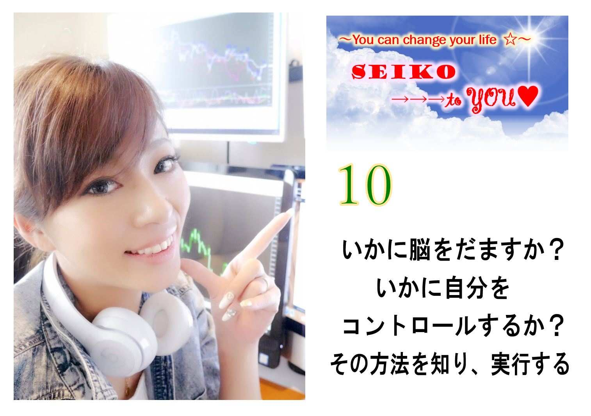
１０ いかに脳をだますか？ いかに自分をコントロールするか？その方法を知り、実行する
ここまでの内容を読んで、「成功者のつかっている言葉を自分の中に入れる」「自分の頭の中で考えている言葉も変える」だなんて、なんだか、自分が自分じゃなくなっちゃうみたい......もしかしたらそんなことを感じたかもしれませんね。
成功していない現状から、成功していくためには、現状の自分じゃダメだってことですからね。そう考えるとやっぱり、今の自分から変わっていく必要がある訳なんです。
ただ、自分じゃなくなって、違う人間みたいになっちゃうのは、なんだか嫌だ......そう思った方へ。いえいえ、思い出してくださいね！
『本当の自分に出会うために！ 成功哲学よりも大切な３８のノート』でお伝えした内容。
そして、あなた自身がこの『本当の自分に出会うノート』を読みながら書き出してみたこと。
さらには、先ほど９、のところで、あなた自身がこれから生きていく上のテーマとなる大切な言葉を見つけてもらいましたね。
そんな「自分の軸」や「コアの部分」、「心の底で願っているもの」。それは変えなくていいんです ！それがきっと、【紛れもないあなた自身】、なのですから。
そこは変えずに、成功するために変えられるところは変えていきましょう！
むしろ、あなたがやりたいことがあるのに、それが実現できていないということは、
【あなたが、あなたらしく生きられなくなってしまう何か】
だなんて非常に厄介なものを、知らず知らずのうちに身につけてしまっていた！ そう言えるかもしれないのですから。
そんな厄介なものは、この際、手放してしまうことにしませんか？
自分のコアな部分は変えずに、自分の夢を実現したり成功するために大切なことを、これから身につけていく。その方が、より自分らしく生きていけるはずですよね。
そして、そうそう！ ここでお伝えするのは、
「いかに脳をだますか？ いかに自分をコントロールするか？その方を知り、実行する」
「脳をだます」、だなんて！ はじめてこんな表現を聞いた人は、びっくりしたかも？
だます、と言っても大袈裟なことをしたり、例えば病院で麻酔をつかって痛みを止めるようなこと以上の、何か妙な薬をつかうだとか、脳に無茶なことをさせるだとか、そういうことじゃないので安心してくださいね。
ちょっとしたコツをつかうとか、少し工夫してみるとか、そういうレベルのことですから。それが「脳」をつかってやることなので、効果は絶大！ になるんですけどね！
例えばこれまでお話してきた「良い言葉」も、そう！
良い言葉をつかうと、脳が錯覚するらしいんです、例え最悪な状況だとしても。
「ⅰ ａｍ ♡ ｈａｐｐｙ」って言っていると、「あ、今幸せなんだ」って。
「私はマダムＳＥＩＫＯになるんだ！」って信じてみる、なんてこともそう。
そうすると、これが不思議なことに、今度は脳の方が「幸せなこと」や「マダムＳＥＩＫＯになるためのこと」を、どうやら選び出すようなんです。
逆にこのことを知っていなかったら？ ついつい、自分が恵まれていないところに目が行ってしまい、「あ、私って恵まれていないんだ」って思って、そんな思考をしたり、言葉にしてしまうことで脳も「あ、私って恵まれていないんだ」って思い込んでしまいますね。そしたら脳は、「恵まれていないんだ」っていうことをどんどん選び出してしまいます。
それって、周りの環境に自分が振り回されてしまっている状態です。でも、これではマズイ！
脳をだます方法を知っている方が、実は自分らしい人生を歩めるようになる、ということなんですよ。
「自分をコントロールする」っていうのも、これも何だか無機質な感じがして、人間じゃなくなるみたい、そう思った人もいるでしょう。
いえ、逆に自分をコントロールすることを知らない人の方が、気付かないうちに人間じゃないような暮らしをずっと続けていた、なんてことになってしまいますから。
自分は何が大好きで、何がツラくて、何が嬉しくて、何が悲しいのか？ そんなことがちゃんと分かっていれば、ツラいことがあったら、ツラいって自分で受け止めることができます。
そんな人が、例えば働いている会社が重労働で、もう限界だって思ったら......
ちゃんと「ツライ」って受け止めることができます。そしてその気持ちを言葉にしたり、場合によっては自分のために、もうその会社を辞める、という選択が自らできるんですね。
これも、ちゃんと自分で自分を受け止めることができるから、自分でコントロールすることができるということなんです。
これが、自分でコントロールできなくなったら？
「いや、ここで辞めたら、収入はどうするんだ？」「こんなに短期間で辞めたら、世間体が悪すぎるし......」なんて思えて、そちらの方を優先することにしたら？
自分の感情を置き去りにして、周りに合わせることにしてしまったら？
もう、自分の感情さえも、自分の中に押し込めることしかできませんね。そのうちに、自分が何を感じているのかさえ分からなくなってしまいます。
一見すると、そちらの方が自分をちゃんとコントロールできているように感じるかもしれませんね。社会に適応しているようにも思います。ただ冷静に見てみると、これは自分自身の意思で自分でコントロールしているというよりも、自分を尊重することなく、周りの方や世間体を優先させて、周りに仕方なく合わせているだけ。
そうなると、今度は周りのことに自分の感情が簡単に振り回されてしまうことにもなってしまいます。世間体的に悪いことをしている人を見ると、その人を完全に許せなくなってしまって、ここぞとばかり激怒する！ だなんて......
本当は、そんなに怒るようなことじゃないかもしれないのに......
ちゃんと自分で、自分のことを分かっていて、自分の感情を受け止められる人の方が、必要以上に周りに振り回されることがなくなります。
それに、相手の人にも感情があるんだから、必要以上に傷つけてはいけないと分かり、ちゃんと相手のことも受け止めよう、という気持ちを持つことができます。許せないことがあったとしても、気持ちを爆発させることもなく、かと言って自分の中に押し込める訳でもなく、ちゃんと伝えられるようになるんです。
自分をちゃんとコントロールするためには、周りに合わせて、周りに振り回されて生きるのが自分......じゃなくて、
世間体を考えて、そこに精一杯合わせて、上辺だけは上手そうに生きていくのが自分......でもなくて、
「私の人生を生きているのは、紛れもない私。周りの人に支えられていきている私だけれども、でも、私自身が何を感じのかは、誰かが決めることじゃない。私のハートだからこそ、感じることができる！そうして感じて、何をするかも、私自身が決めること」
って、そんな感覚をしっかりと取り戻すことが、まず一歩目。
周りに振り回されて生きるのではなく、自分らしく成功するためにも、いかに脳をだますか？ いかに自分をコントロールするか？
その方法はどんどん知って、実行していくようにしましょうね！
勘違いしないようにここで一言。脳をだまし、自分をコントロールするのが「最終目的」になっちゃダメですよ！
自分をコントロール術は完全に身につけたけど、全然幸せじゃない、なんてことにならないようにしてくださいね。本当に、うっかりしていると何が目的で何が自分の夢なのか？ ってことを簡単に見失ってしまいますから。
脳をだます方法を知るのも、自分をコントロールする方法を知るのも、「自分らしく成功するため」「夢を実現するため」ですから、ね！
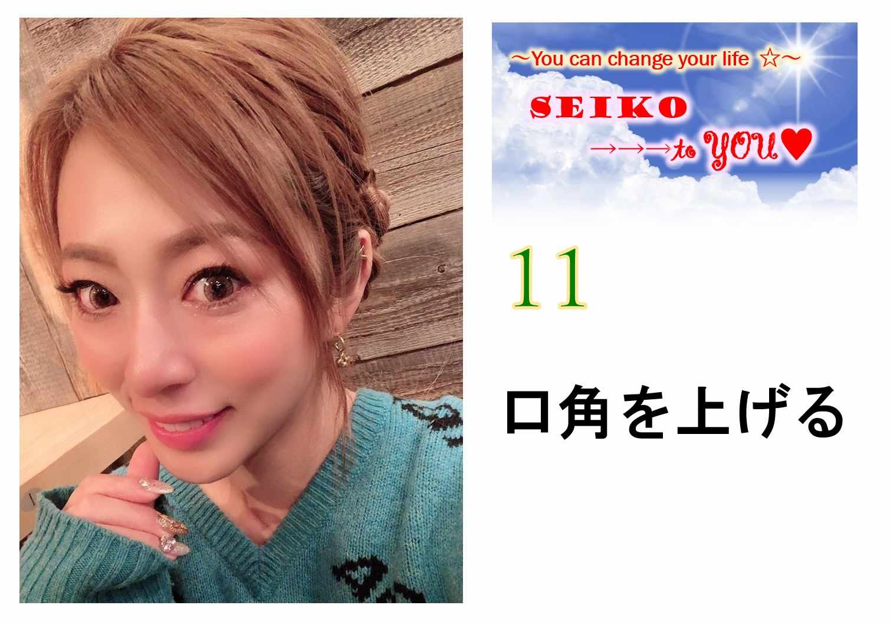
１１ 口角を上げる
これはですね、私はもう、たくさんの人に、何度も何度も言っていますよ！
幸せになりたいのなら、成功したいのなら、口角を上げましょう！ って。
パソコン教室で社長との面談で、話をしているとき。
そのときはまだうつ病で、私はきつかったんです。でも社長はこう言いました。
「あなたは大丈夫。なぜなら口角が上がっているから。笑っていなくても口角が上がっている。成功者に口角が上がってない人はいない。安心しなさい、あなたは成功する」
そして、こう付け加えました。
「口角を下げるようなことをしたらダメだよ。成功者は会った瞬間、この人の口角を見るから」って。
その一言が嬉しすぎて、どんなにツラいときでも笑っていようと思ったんです。情緒不安定で泣くこともあったけれど、泣いているときも口角だけは上げて笑うようにしました。誰かに見られていたとしたら、泣きながら笑ってて、めっちゃ怖いかもしれないけど(笑)
これもですね、どうやら脳がだまされるらしいんです。顔の表情全体は、例え笑えていなくても、口角が上がっていることで「あ、今は幸せなんだ」って錯覚してしまうんだそうですよ。
とは言ってもこんなお話をしたら、「以前、接客業をしていたときに、笑顔を強制されて精神を病んでしまいました」と正直にメッセージで伝えてくださった方もいました。これもやっぱり、「自分で納得して、やっていることなのか？」「それとも、自分の心に反して、誰かに強制されてやっているのか？」というので、かなり違ってきてしまうのでしょうね......
口角を上げることの効果は、絶大ですよ！ これは私が絶対に、自信を持ってお伝えできることです。
ただ、ちゃんと納得して欲しいな、と思います。私があなたのことを監視して、口角が上がっているかどうか強制することなんてしませんから！
それでも口角を上げていると、自然と気持ちが上がる、というのもあるし、脳が錯覚してしまう、というのもあってぐぐぐっと成功に近づくことができますから、ね。
これまでのお話を聞いて、腹落ちして納得した方は、「口角を上げること」、ぜひ常日頃から意識してくださいね。オススメです！
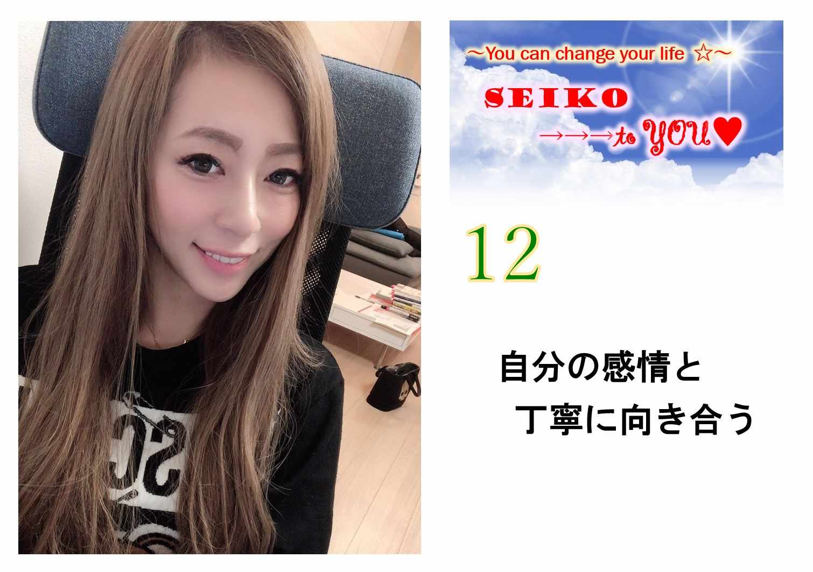
１２ 自分の感情と丁寧に向き合う
感情って、本当に大切。どんなに成功しても、心が空っぽだったら幸せも何も感じることができないから。そして、「もっと大きな成功をすれば、自分は幸せになれるのか？」って思うけど、実はそれは違って、ちゃんと自分の心を取り戻すことが大切だったりするから。
感情って、大切なんだけど、何もせずにほったらかしにしてたら歯止めが利かなくなるものでもあるし、かと言って抑え込んでいたら、先にも書いたように気付いたら他人に受け渡してしまっていて、自分のはずなのに周りに振り回されてしまったりもしてしまうんですね。
じゃあ、完全に、完璧にコントロールできたらいいの？ というとそれもやっぱり何かが違っていて、そんなのなんだか味気ない。
感情のままに思いっきり笑うことも、自分の幸せのためには大切ですよね。泣きたいときは、泣いた方がいいこともたくさんある。
本当に怒っていることなら、綺麗ごと抜きにして思いっきり怒った方がいいときもありますよね。そうしないと伝わらないことだってあるし、大切に思っている人だからこそ、その人のことを思って本気で怒ることだってあると思います。
ある人が「怒りの感情が全くない人というのは、どうしても弱くなってしまうからね......」と言ってるのを聞いて、確かにそうだな、とも思いました。何にも怒ってない人って、なんだか弱々しい。
ただね、いつでも怒ったときにその感情を爆発させればいいのか？っていうと、それもどうも違うんですよね。
笑ったり、喜びを感じたり、楽しいって思ったり、幸せを感じたり。
そんなプラスの感情の感度を高めていくことも大切。かと言ってマイナスの感情を全て忘れていいか？っていうとそうでもない。
感情は大切だけど、あまりに過敏に反応してしまったり、極端な表現になって振り回されてしまうのはとっても危険。自分で自分い歯止めがきかなくなっちゃう、なんてことのないように！
うーん、いろいろと書きましたが、そんなひとつひとつの感情を、ちゃんと自分で丁寧に向き合うことが大事なんですよね。そうするうちに、「あ、こんなときは私、こう感じるんだ」とか、「こんなときは、こう受け止めて、こう表現したらいいんだよね」ということが日に日に分かってくると思います。
あなた自身の幸せと成功のためにも、自分の感情には丁寧に向き合うようにしてくださいね。
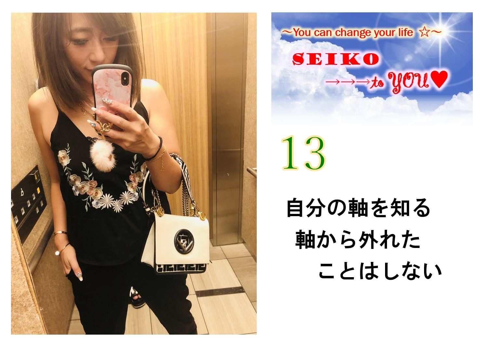
１３ 自分の軸を知る 軸から外れたことはしない
自分の軸、と言っても、「私の軸は、これ一つ。そこからブレない！」だなんて、自分を狭めるためのものではありませんよ！ 軸から外れたことでなければ、何でもやっていいんです。何でもやっていいのですが、ただそこに「自分自身」という芯がないと、あれもこれもと闇雲に手を出して振り回されてしまっているだけになってしまいます。それじゃあ自分でも、前に進んでいるのか、どこに向かっているのかも分からなくなってしまいますね。
もう少し踏み込んだ話をすると、最近、クリエイターやマーケッターと言われる人たちの間で「世界観」ということがすごく意識されています。例えば一人の人でも、いろんな表情や表現をした方が、魅力的に思えるんです。もとの専門のことからは思いも寄らない分野にチャレンジし、この分野のことも身につけていくと、その人に人間的な厚みも出てきますね。その人のつくり出す「世界観」がさらに魅力的なものになって、多くの人を惹きつけていきます。
ここまでお話をして、特定の俳優や著名人を思い浮かべて、「あ、そうそう、確かにそうだな！」と思っている人もきっといるでしょう。
ただそれは、「その人らしさ」「その人の人間的な芯」があるからこそ、より魅力的に思えるんですよね！ その人らしさも、芯も、何もなく、ただあれこれと手を出しているのだとしたら？
それは「成長している、前進している、世界観がより魅力的なものになっている」とは言わずに【迷走している】ということになってしまいます。思い当たりませんか？ そういう人。
一歩離れて客観的に見ている人からしたら......まずは、いったん、自分がどうしたいのか考えてみたら？ その方がきっと大切だよ！ ということが手に取るように分かると思います。
そうそう、あなたは迷走したい訳じゃないですよね？
あなたにはこれから、どんどん新しいことにチャレンジして欲しいと思います！
今までだったら考えもしなかったような分野にも、足を踏み入れて欲しいですね。
これまでの自分の枠を乗り越えて、成功への道を突き進んで行って欲しい。
冷静にあなたの置かれている状況を考えてみるのであれば、今まであなたがいた世界にいるだけでは、あなたは成功はできなかった、ということですよね。
だからこそ、未知の世界にまでどんどん足を伸ばしていって欲しいんです。きっと、そこにしかあなたの成功はないのですから。
それが「迷走」にならないためにも！ どんどん新しいことにチャレンジするためにも！
自分の軸を知るって大切なんです。一点にとどまるためじゃない。むしろそれは、どんどん自分から、未知の体験をしていくためのこと。
「これって、自分がやっていいことなのかな？」と思うことがあるかもしれません。そういうときこそ、「自分の軸と、合ってるかな？」という基準で考えてみましょう。
どう考えても、軸から外れている、と思ったとき。そうですね、うーん......だったらそれを、これ以上続けても、きっとあなたらしく成功することはできませんね。
だって、あなたの軸から外れてしまっていることなのですから。
むしろ周りから迷走している、と思われたり、場合によっては思いも寄らなかったようなロスに繋がることにもなるので、意味のないマイナスになってしまう可能性は大です。
だったらね、それはやらない方がいいと思います。
そうではなく、「自分の軸から、外れていないな」と思ったのなら。それは自分の世界を広げる、大きなチャンスになるでしょう！ もし失敗したとしても、経験したことは絶対に身につきますし、チャレンジしたことで人間的な厚みも出てきます。
自分の軸から外れていない、そう思ったことには、例え未知のことだとしても、どんどん自分からやっていくようにしましょう！
繰り返しますが、軸を知るのは、今いる場所にこだわるため、ではないですよ。
自分の軸や、自分にとって本当に大切なこと、「自分の世界観」を自分で知るのは、今いる場所から、自分からどんどん飛び出していくためなんです。
そしてさらに新しい世界に足を踏み入れ、たくさんの経験をすることで、「自分の世界観」もどんどんアップデートしていってください。これからどんどん未知の領域で新しい経験をしていくためにも、自分の軸は自分でちゃんと理解しておくようにしておきましょう！
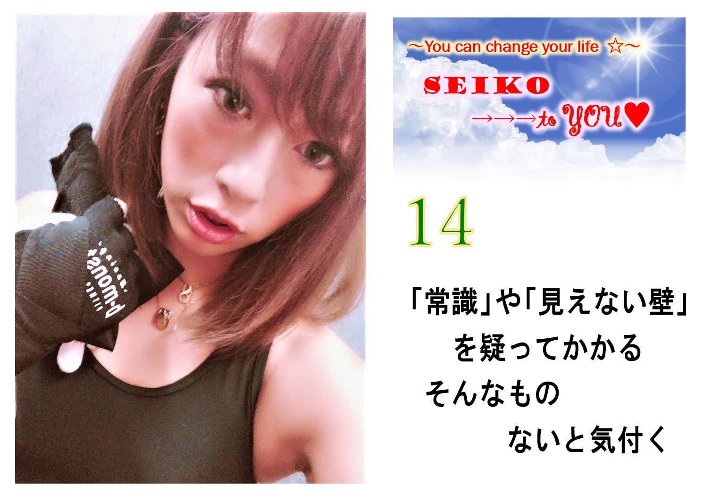
１４ 「常識」や「見えない壁」を疑ってかかる そんなものないと気付く
ネットでいろんなページを見て見ると、例えば年収５００万円以上の女性は、どのページを見ても１０％未満。いえ、それよりももっと低い統計が出ているものも少なくありません。
が、そんなこと私の知ったことじゃありません(笑)
人数が多い方が常識、なんて考えだと、私は完全に非常識の部類です。その１０％未満の女性の中でも、弁護士や公務員などの高学歴の女性が圧倒的に多数を占めているようなので、学歴のない私なんて、ホントに、ホントに、少数派。その学歴がない人の中で、自分で代表取締役となって経営をしている人なんて......もう、ほぼいない、と言ってもいいのではないのでしょうか？
ここでまた繰り返しますが、そんなこと、私の知ったことじゃありません(笑)
今調べて、知ったくらいですから。
知らなかったから、良かったのかもしれないですけどね。
ただ、きっと多くの人が、誰が決めた訳でもない「常識」や「見えない壁」を「ここくらい」と無意識のうちに決めつけてしまって、「たぶん自分は、これぐらいなんだろうな」なんて思って生きてるんじゃないかな、と思うんです。
自分にとって理想は、月収１００万円くらいかな？
あ、でもまずは、一人で生きていくには必要なくらいの２０万円を、副業で超えれたらいいな。
けどそうだな、それもハードルが高そう。いったんの目標は月で１０万円かな。これくらいが妥当かな、たぶん。
いえ、別に月収１００万円や２０万円、１０万円が悪い訳では決してありませんが、「なんとなく、自分の常識で考えると、これくらいなのかな？」という枠の中で考えてしまっているんです。
そしてやることも、どうしても、「あらかじめ与えられたことをする」ということから外れることができません。なので、うまくいかなかったときに解決策を探す、考え出す、なんてことは到底できずに、人のせいにするくらいしかできなくなってしまいます。「なぜ、うまくいく方法を教えてくれないんだ！」って嘆きながら......
自分で考えてみたら、与えられた枠の外に答えがあるのに気づいて、外に自分から出ていった方がいいだなんて場合だとしても、枠の外、という概念そのものがない状態です。
ある人は何も考えずに、いつも通りに出勤、と思って街を歩いていたとしますね。その時間が５分としましょう。「ああ、今日も出勤だ、ユウウツだな」なんて思いながら。
けれども他の人は、その５分間、同じ道を歩いたとしても、目に入るもの、耳に入って来るもの、ありとあらゆるものにアンテナを張り巡らしていて、１０個でも２０個でもビジネスのアイディアを生み出しているのかもしれないのです。そしてこのアイディアの中から、まずは何から形にしていこうか？ ととてもワクワクした気持ちで一日をスタートしているのでしょう。
そう知ると、「出勤時間はユウウツなもの」なんてこと、これまで疑うことすらしてなかったけれども、そんな常識は全く意味がない、ということに気付けるのではないでしょうか？
出勤時間の５分でアイディアが１０～２０生み出せる、だなんて、全く思いも寄らない角度から、自分の知らない次元で生きている人もいるんだと知らされたような気分ですね。
出勤時間５分の常識って何だろう？ って今まで何もなかったところに「気付き」が生まれます。
自分で言うのも何ですが、「女性はよっぽど高学歴であったり、芸能界でもやっていけるような特別な才能がない限り、年収５００万円、６００万円、７００万円......の壁は超えられない」と、知らず知らずのうちに思い込んでいた人がいたとしましょう。そう、疑うことすらしないくらいに。空気があるのは当然なのと同じくらい、それが当たり前であるかのように。
そんな人が清水聖子に会ったとしたら？ 一瞬でそんな壁は崩れてしまうと思いますね。
いえ、別に意地悪してやろうとか、そういう気持ちは私には全くないですよ。
ただ、「あ、高学歴じゃなくても、こういう道を歩んでいる人っているんだ」ってその人にとっての「気付き」が生まれると思います。
おそらく気付かないうちに、「常識」や「枠」という狭い中に閉じこもってしまっている人がほとんどなんです。そして閉じこもっていることすら気付けていないんですね。その外側、という世界を見たことがないから。視界に入っていたとしても気付く余地すらなかったから。
「ほら、これが枠、でしたよね。そしてこの外側は、こうなっているんですよ。でもこの枠って、そもそも意味がなかったですよね」なんて言われて、はじめて気付きます。ただ、全てのことをこうして教えてくれる人は、まずいませんね。
そうそう、これって外国に行くのと似ているのかもしれませんね。日本と、外国って、こんなにも違いがあったんだ！ って。でもこれからの時代、もう日本も、外国も、国境なんてもの、関係ないじゃん......
あなたが成功するためには、今いるあなたの世界では実現できないのでしょう。だったら、あなたの方から気付いて、どんどん今いる世界の外側を経験することが大切ですね。
そのときに必要になるのが、自分の軸を知って、自分らしさを見失わないようにしながら、「軸から外れてないな」と気付いた世界には、自分からどんどん飛び込んでいくこと。これまでにもお伝えしてきましたね。
ただ、「枠の外の世界」に気付くのには、少しトレーニングが必要です。「本を読んで、ネットで繋がって、自分の世界を広げる」ということで世界を広げることもできます。
が、それ以上に、日常の何気ないことでも、「あれ？ これってこう思っていたけれども、もしかしたら違う見方もできるのかも？」とアンテナを張り巡らしてみることにしましょう。与えられたこと以外にも、違う目線を持ってみるんです。当たり前のように受け入れていた、その外側って何かあるんじゃないのかな？ と自分から疑問を持ってみることにするんです。
常識や、見えない壁なんて、きっとそもそもないんです。あなたが「これくらいが自分にとっての常識かな？」と無意識に思っていた、その外側に無数の選択肢があるんです。その世界の中に、あなたにぴったりの成功が、きっとあるはずなのですから。
ここで、突然ですが......
清水聖子の！ 思いつき写真展
かなり突然、そしてかなり思いつき(笑)
もしかしたら、こうしたしっかりめの話、そろそろ飽きてきた人いるかもしれないって。
ダメダメーーー！ ゆっくり時間をかけて読むのはＯＫだけど、飽きたからっていったん閉じて、もうそのまま読むのやめちゃった、なんてしないでくださいねーーー！
と、いうことで気分転換☆ そんな思いつき写真展です！
ぜひお立ち寄りください、そしてお楽しみください♪♪♪
さーて、いきますよ！
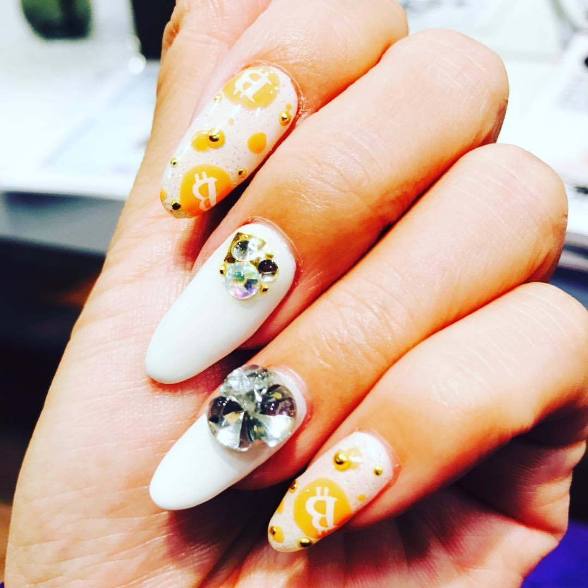
まずは、こんなのから。
ある日、とうとうやってしまった(笑)
ビットコインネイル！！
仮想通貨のビッグウェーブが、これから来る！
でも、ちゃんと調べて、勉強しないと分からん！ って思って調べまくってたら、
「美人過ぎる仮想通貨ヲタク」 って、聞いたこともないような異名がついてました、私。
まあ、こういうのもいいじゃないですか♪♪ 何事も、楽しみながら行きましょ！
地元に帰ったときの写真。
もともと私は東京の人間じゃないので......
妙に田舎が恋しくなります。
自然の中でエネルギーチャージ！
魚釣りにも出掛けてみる。
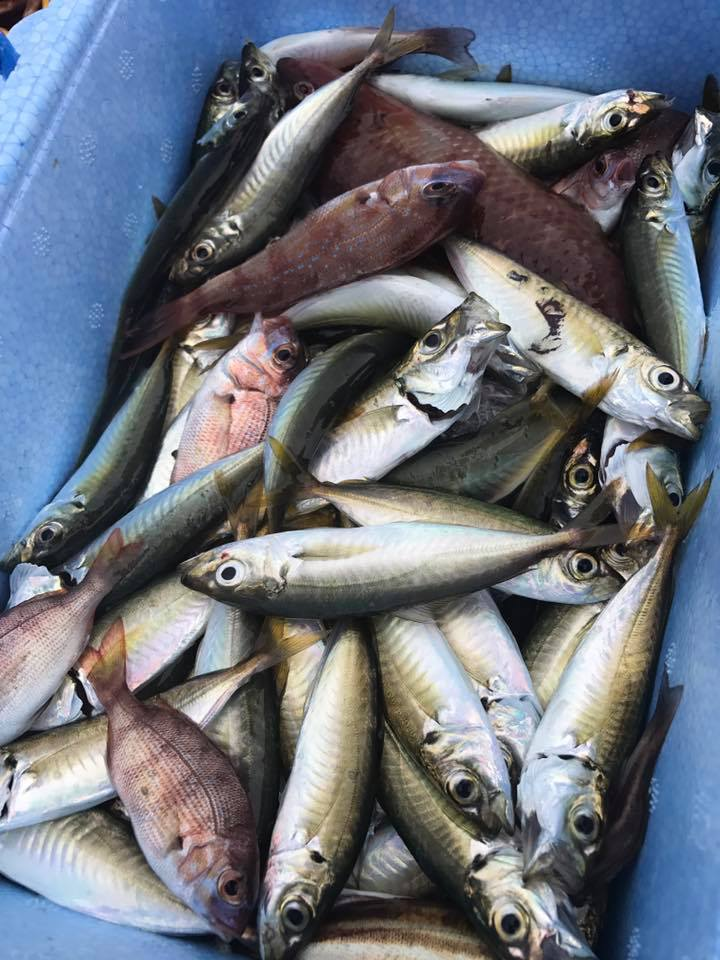
釣り過ぎ(笑)
こちらは東京で。
トイレ掃除ぶらっしー出動！
あなたの地域のトイレを綺麗にするボランティア活動です！
この日は久々の復活でしたがめちゃくちゃ楽しかった。
なんか気持ちもスッキリするんです。不思議と！
でもこの気分は言葉では伝えきれない......
何か良い事をしたいとか、社会貢献とか綺麗事を並べるつもりは無いので。
好きでやってんのか。
と見て頂ければと思います！
もちろん何処かで誰かの役に立ってるとより嬉しいです。
また、久々にやりたいなあ......
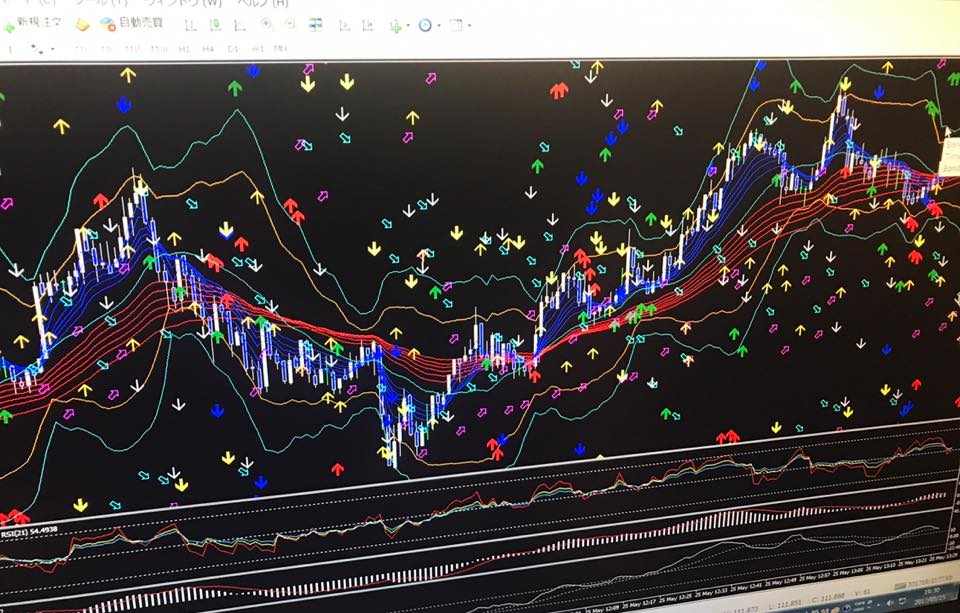
チャートとにらめっこしてたら、大変なことになったときの写真。
矢印ばっかり。
「ハッハッハー！ ダメだこりゃ(笑)」
もぅ画面がＬＥＧＯみたいになった。酷いなこれは(笑)
でもなんか見てたら可愛いかったので写メ保存！
全てがスムーズに、うまくいってる訳じゃないですから。
こんなことだってあります、あります......
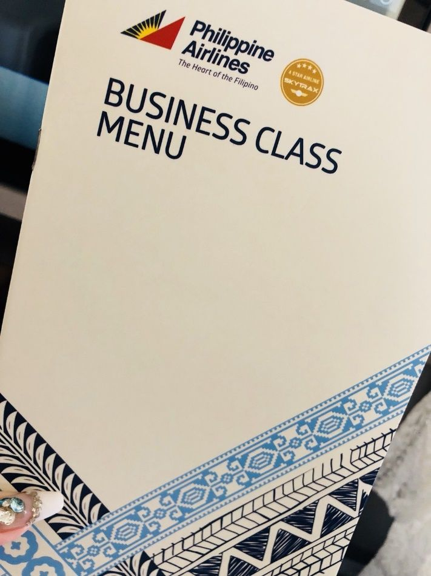
海外のカンファレンス に呼んでいただいたときの写真も。
本当は現地の様子とか、一緒に写真撮った人のことなども、
ここで大公開したいんですけどね。
電子書籍、と言えども「書籍」で無断使用ＮＧのケースも考えられるので、
ここでは飛行機の中で撮ったメニュー表を載せておきましょう！
こういう場に行くと、今の私では手も届かないような、
世界中に大注目されるような人に出会ったりもする。
成功、っていっても、本当にさまざま。
私は今は、お金には困らないような生活はできているけれども、でも、
私よりもっともっとすごい人がいるのもよーく分かっている。
だからこそ、謙虚にもなれるし、ときに悔しくもなる。
でも、まだまだだ！ とも思うし、楽しくもなる。
そして、通訳がいなくても
英語で話せるようになりたい とも思う。
さーて、小卒の私が、果たしてどこまでいけるのか？
仲間に呼ばれてイベントに駆けつけたら、貼ってありました。
いつの間にこんなポスターつくったのっっ！？
もう、逃げも隠れもできないと思った瞬間(笑)
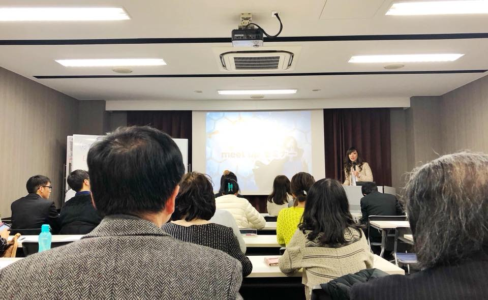
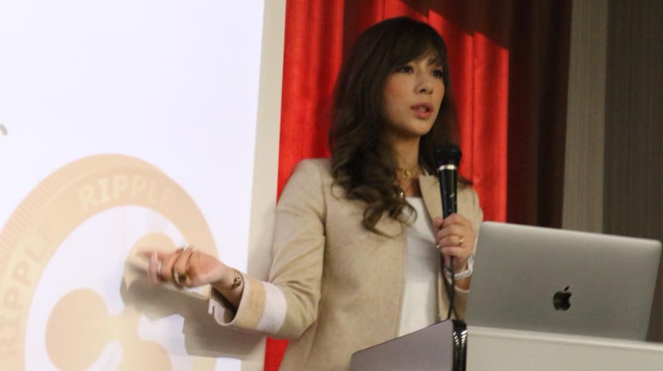
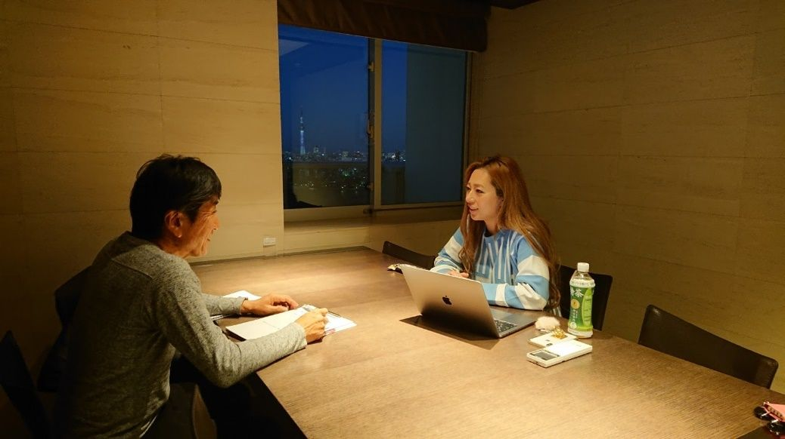
ミートアップやコンサルで全国のたくさんの方とお会いしました。
どうしても東京でしか開催できないときでも、
地方からわざわざ駆け付けてくださった方もいるんです。
そう思うと、私は全力でやらねば！ って思いますね。
実際にお会いしてお話を聞くと、私も勉強になります。
清水聖子は、まだまだ走り続けますよ！！
１６年間、ずっとそばで見守ってくれたトッティ。
今はきっと、空で見守ってくれているはずだから。私は元気になれる♪♪♪
そうそう、ヴィトン君もいるしね！
たまにこんなことやっては癒されてます。
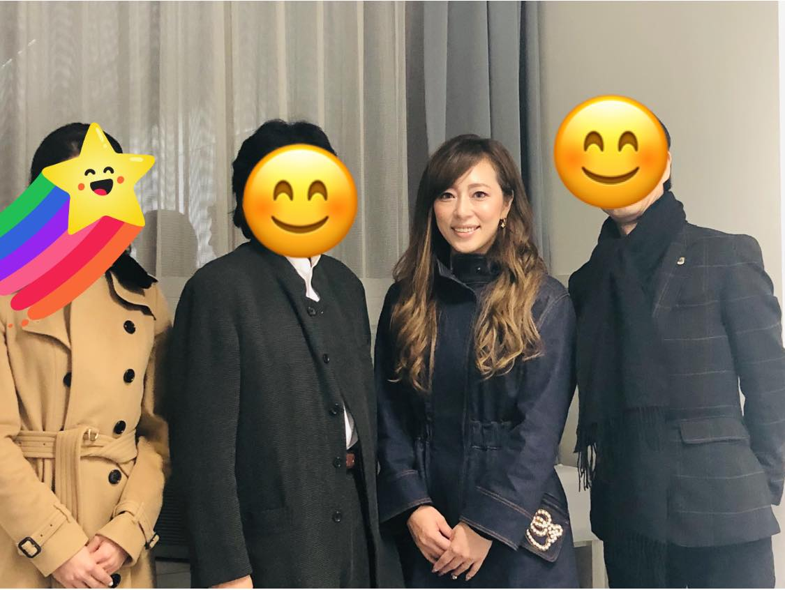
この日私はとても有名な
一流大学で講師として、公演でお話しさせて頂きました。
中学の出席数は片手で収まる様な私には本当に縁がない場所。
全ての方のお力添えが有り、奇跡が起きました。
立てるはずもない大学という地に立たせていただき本当に感動でした。
幼少期から愛に飢えた私に、どこまでも愛をくれた母と姉。
そして私が頑張れる糧になるはずの子ども......だったはずが、子どもに頑張る力を貰い。
この日の出来事は本当に涙が溢れる程、嬉しい事でした。
それは一流大学にただ立てたことではなく、沢山の方に応援していただき、時に頼られ、そして自分も誰かの役に立ててることが本当に幸せでした。
でもそれは自分の努力であり、そして、誰が与えてくれたものであり、人は人で支えあってること。
この場を通して全ての方に感謝を届けたいと思いました。
本当にありがとうございます！
私が今、幸せな感情に溢れ満たされているのは、
今関わってくれてる皆さんのお陰でしかないと思います。
それと同時に私もそう言う存在でありたいと思います。
まだまだ未熟者ですがこれからもよろしくお願いします。
以上、かなり突然はじまった、かなり思いつきの写真展でした♪♪♪
さあ、この電子書籍も、まだまだ続き、いきましょーーう！！
しっかりと、読み進めてくださいね。
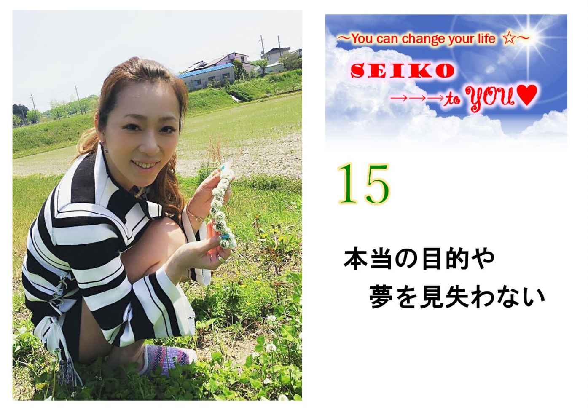
１５ 本当の目的や夢を見失わない
これはですね......今の学校教育が、なんとなく、教えられることをそのまま教わっていたら、２年生、３年生と進んで行って、「卒業、というゴール」を迎えられるからかもしれないですね。
目の前のことをなんとなくやっていたら、ちゃんと目的地に辿り着ける、それが当たり前に体に身に染みついている。
いえいえ、実生活、特にビジネスの世界では、なんとなく目の前のことをやっていて、ちゃんと目的地まで辿り着けるなんてことは、まずないと考えた方がいいですね。
ここは母親らしく例えるなら、冷蔵庫にあるものをなんとなく一生懸命に調理していたら、気付いたらちゃんと肉じゃがができていました！ 今度はなんとなく一生懸命にやっていたら、気付いたらちゃんとカレーができていました！ なんてことはない、ってこと。どんなにひたむきに、一生懸命マジメに料理していたとしても、肉じゃが作ろうって思ってつくらないと肉じゃがにはなりません(笑)
とは言え、きっとあなたはこんな風に成功したらいいな！ こんな夢を実現したい！ というゴールは思い描いているけれども、そこまで辿り着くのに、今の状態では手段や道筋がちゃんと組み立てられていないのだと思います。だから今分かっている手段以外のことを、試してみないといけない。もしかしたら新しい人脈が必要なんじゃないかな？ なんて感じている人もいるかもしれませんね。
だからこそ、自分らしさを見失わないようにして、自分の軸は見失わないようにして、いろんなことを試してみないといけませんね。それがこれまでお伝えしてきたことです。
と、同時に、今していることがちゃんと目的地に向かって進んでいることなのか？ それを確認することも大切なんです。おっと、別方向に進んでいるな、と思えば、その気付いた地点から軌道修正すれば大丈夫。
困ってしまうのが、一番最初に見つかったものをただひたすらやっていたら、目的地に辿り着けるものだと思っていて、でも実は全然違う方向に進んで行っていた、ということ。気付いたらやればやるほど目的地からは遠ざかるばかり。これはマズイですね。
もっと困ってしまうのが、目的地を見失ってしまうこと。一番最初に見つかったものをただひたすらやっていても、どうやら違う、ということに途中で気付いて、って、そこまではいいんです！ そしてそこで、目的地の方向も確認せずに、また新しく見つかった何かをただ一生懸命に取り組む。なんとなく、目の前のことをひたすらやっていたらゴールに辿り着けるはず、という感覚が抜けきれないんですね。あれ？ 目的地はどこへ？ なんだか全然、訳の分からないところに行っちゃってるけど？ 「おーーい！」
そしてもっともっと困ってしまうのが、最初から目的も夢もなかった、ってこと。そんなの、どこに向えばいいのか本当は分からないはずじゃないですか！
ただ、ただですよ！ 学校教育って、目的意識も、夢も何もなくても、なんとなく過ごしていれば、「卒業、というゴール」に辿り着けてしまうんです。
自分にとって、目的も、夢も、やりたいことも、何が幸せなのかも、どんなことが嬉しいことなのかも、全然よく分かんない。ただ、なんとなく目の前のことをやっていれば、どこかに辿り着けるはず。
そうそう、どこかには辿り着けるでしょう。でも、きっとそこに夢や幸せは、あるのでしょうか......？
どこかに辿り着けたけれども、そもそもここがどこなのか自分でよく分からないし、夢も、幸せも、充実感も何もない。だから何かを求めてさまようけれども、どこに行っても満たされることなんてない......そのうちに気持ちが追いつかなくなっちゃいます。
新しいことに、どんどんチャレンジしてみることって、大切です！ けれども、本当の目的や夢は見失わないようにしてくださいね。とにかく最初は手探りでチャレンジしてみるのであれば、目的地まで最短距離で行けるとは限りません。むしろ最初は遠回りしながらでもやっと進んでいく、という状態になってしまう可能性の方が高いです。
ただ、最初は少し違う方向に進んでいたとしても、気付いたときに軌道修正しながら進んでいけば、大丈夫！ だから安心してくださいね。そうすれば確実に、ちゃんと思い描いた場所に近づいていくことができますからね！
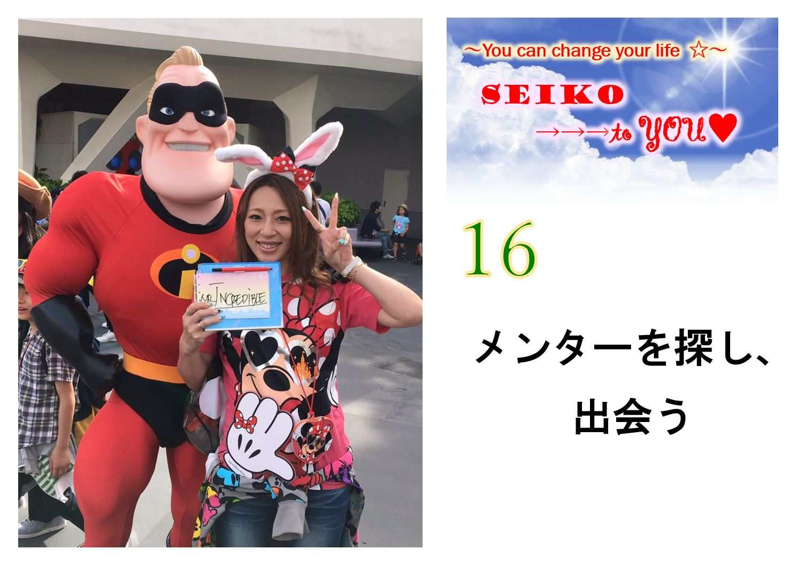
１６ メンターを探し、出会う
写真の人は、本文とは全く関係ないですよ。数年前、ディズニーランドで会っただけですから(笑)
まあ、そんな冗談はさておき！ 今まで自分がいた世界とは別世界に足を踏み出して、目的地や夢に向かって進みたい、でもどう進んだらいいのか分からない、となれば、自分をちゃんと導いてくれる人がいてくれたらいいのにな......と思いますね。
けれどもそんな人、見当たらない、というケースがほとんどなのではないでしょうか？
私も身近にすぐに思い当たらなかったんです。でも今の時代、ネットもＳＮＳもありますから、探せば出会えるものだと私は思います。絶対にネットやＳＮＳで見つけてください、という訳ではないんですけどね。信頼できる人からの紹介やリアルの場での出会いだってあるでしょう。
どんなメンターがいいの？ って思う人もいるでしょう。そうですね......「本」のところでも書きましたが、「この人の言うことなら、素直に受け止めよう。そしてやってみよう」と思える人が、まずはいいんじゃないのかな？と思います！ どんなに素晴らしい教えだとしても、あなたが聞き入れることができなければ意味がありません。そんなのメンターの方も疲れてしまいます。
そう思うと、「合う、合わない」というのもかなり重要かなと。そしてそれはやはり、メンターの方も同じ。「ちょっと、この人、これからいろいろ教えたり導いたりするの、疲れそうだな、なんだか嫌だな......」なんて思われたら、どうもいい関係は築けそうにありませんね。
だからこちらも、教えていただくだけの最低限の礼儀や、マナーはわきまえておきたいものですね！ これまで「常識」なんてものは実はない！ なんてお話もしましたが、だからと言って誰に対しても非常識でＯＫ、礼儀もマナーも関係ない、だなんてことじゃないですからね！
おそらくこの本を読んでいる人は、もうたいがい、いい大人の年齢の方がほとんどだと思うので、その辺はこれ以上詳しく言わなくても分かりますよ、ね......？ たぶん......
ただね、ホントこれは言っておかないと分からない人って、いるものだから......
今、これを読んで「もしかしたら自分、過去にそういう失敗したこと、あったかも？」って心当たりがあった人！ そう。今気付けて良かったんです。今気付けたということは、これからは同じ過ちを繰り返さずに済みますからね。ちなみに成功している人はそういうところ、すごくきっちりして周りがびっくりするくらい謙虚な方、とても多いですよ。私もそんな方々から日々勉強です。そんな方にはもう、頭が上がりませんね......
そうそう、メンターの話でした。あとは、夢や自分の目的に対して、ちゃんと共感できる、というのもとても大切だと思います。自分は本当はＡ、というところに行きたかったのに、メンターについて行ったら、全然違うＢというところに辿り着いてしまった！ メンターに聞いたら、「いや、幸せって、Ｂってことでしょ？」って、そもそも全く目指している方向が違っていた......そんなことになっても、どうしようもないですね。そこから自力か、もしくは新しいメンターを見つけるかしてＡを目指すしかありません。
私の場合は、目指しているものは「マダムＳＥＩＫＯになる！」ということ。もう少し付け加えるのだとすれば、息子二人は相変わらず私にとって、とても大切な存在だった。ただ一方で、「私はシングルマザーだから」、なんて言い訳はしない、私はもう逃げちゃいけない、とも思っていましたね。
そうして出会ったのがメンターと、トレードでした。もとからトレードをしようと思っていた訳では決してなかったけれども、今振り返ると、そのときの私と、夢描いた私と、いろんなことが本当にうまーく巡りあわせて来たなと思います。
もしあなたの近くに、今はメンターと言える人がいなくても、焦らずに。私が言われたように、まずは本を読むことからはじめてもいいと思います。
そしてまずは探してみることなら、できますね。
焦らずに、でもできる行動は着実にやっていく。これってメンター探しだけに限らずに、成功するためにはとても大切なことですよ！
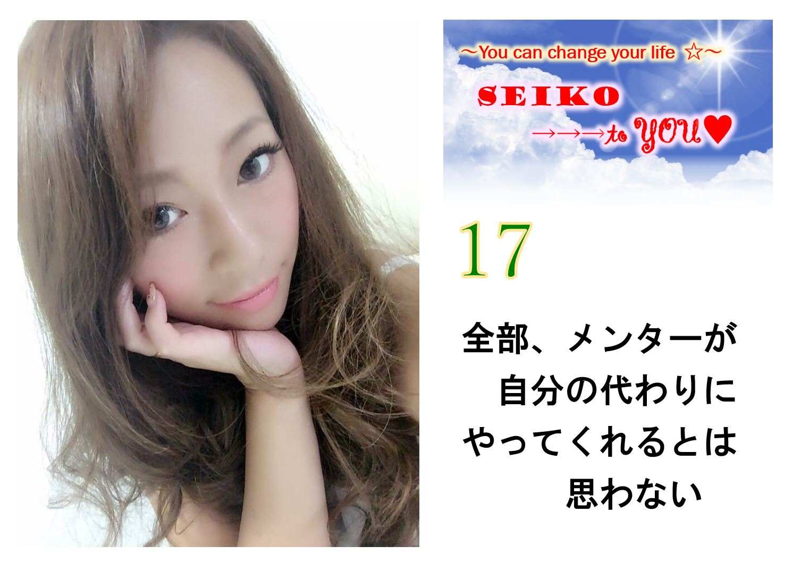
１７ 全部、メンターが自分の代わりにやってくれるとは思わない
当たり前、と言えば当たり前かもしれませんね。でも、戸惑ってしまう人も多いようです。
例えばトレードだったら、どこでエントリーしたらいいか全部教えてくれる訳じゃありません。スポーツに例えると、あなたはコート上でゲームをしているプレイヤーだとしたら、メンターはあなたの監督にはなれるでしょう。ただあなたの代わりにユニフォームを着てプレイをして、シュートを決めて、それを全部あなたの実績にするようなことはしません。そんなの、完全に役割が違いますから......
と言っているのに、「なんで？メンターが全部、自分の代わりにやってくれればいいのに！」なんて思うのであれば、それはあなたが、自分の人生を自分で歩むつもりが全くない、ということになります。誰かが、どうにかしてくれればいいのに。
そういう人は『本当の自分に出会うために！ 成功哲学よりも大切な３８のノート』と、この『今度こそ、自分の人生を変える！ 私が輝く行動・習慣・考え方３４のノート』のここまでの項目を、ぜひじっくりと読み返していただけたらと思います。
学ぼうとしている人のことを思うからこそ、基礎的なことや原理原則しか教えない、ヒントは言っても答えは伝えない、遠回りになったとしても真に自分で考える力、ビジネスの世界で生き抜く力をきっちりつけて欲しいから、というスタイルの人もいますね。
メンターは確かに、あなたを導いてくれる大切な存在です！ ただ、あなたの人生は、あなた自身が歩んでいるんだ、あなた自身が考えて、あなた自身が力をつけて前に進んでいくんだ、という自覚だけはどうかお忘れなく！
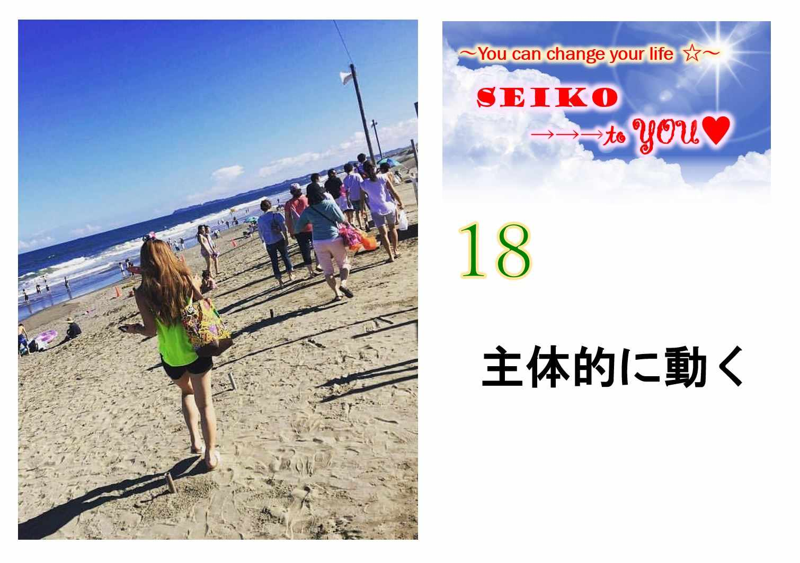
１８ 主体的に動く
経済的自由を手に入れたい。時間的自由を手に入れたい。空間的自由を手に入れたい。
【自由】を手に入れたい人、たくさんいますね！ あなたもきっと、その一人ではないでしょうか？
ですが、いざ、「これから先は、自分で考えて、やってくださいね！」となると......
どうしたらいいか分からなくなる人、多いです。「何でちゃんと教えてくれないんだ！」って言って怒り出す人もいます。そう、【自由】って、誰も束縛しないって、実は慣れるまで結構、大変なことだったりするんですよね。
気付かないうちに、私たちは「言われた通りにするのが当たり前」「何をどうするかは、誰かが決めて教えてくれるもの」だなんて暗黙のルールの上に生きていたりもします。いえ、そんなルール、本当はありませんから。
仮に、会社にお勤めで、定時出勤が当たり前の方に「明日の出勤時間は、何時でもいいですよ、自由ですよ」と言われたら、戸惑う人がほとんどではないでしょうか？
本当は朝、もっとゆっくりして遅く出勤したい。でも、周りの人はどうするだろう？ やっぱり、一人だけ遅いのも気まずいよな、そう思うと、いつもの時間が妥当かな、いや、敢えて早く来て早く帰る、というのもアリなのかも？ いやいや、今は出勤の時間だけの話だった、そうだな、ここは周りの人と相談して同じ時間にするのが当たり障りなくていいかもな、誰かいい時間、決めてくれないかな......
あれ？ 自由ですよ、と言われたのに、結局誰かに決めてもらうのを望んでしまっていますね。会社の出勤時間くらい、本当にもう、自分で決めれたらいいのに......
でもこれが、なかなか難しい。自由で、自分で主体的に動くって、実は慣れるまで大変。
本当は誰も、あなたの人生を変わってはくれないんですけどね。けれども実際のところは、多くの人が気付かないうちに、自分で考えて動く力がなくなってしまっています。
自由になりたいのに、
「誰かが自分を、自由にしてくれるのを望んでいる」
だなんて、よくよく考えてみたらそれ、矛盾してませんか？ っていう状態の人ばかりなようにも感じますね。あなたはどうですか？
いきなり自由を手にいれるのは難しい。全部主体的に動けるようになるって、実は思っていたよりも大変。
だから、気付いたところからでもどんどん、主体的に動けるようにしましょう。 誰かがあなたを主体的に動けるようにしてくれるのを待っていて も、誰もそんなことしてくれませんよ！
第一、「誰かがあなたを主体的に動けるようにしてくれるのを待っている」って、これも矛盾していますからね。お分かりいただけますか......？
自分から気付く必要があります。「あ、ここは主体的に動くところだ！」って。その主体的に動ける場面、というのは、今まででお話しした「枠の外」の世界で見つかることかもしれませんね。それに気付いて、自分から動くんです。自分からどんどん、主体的に動ける場を増やしていきましょう！
■□■ ━━━━━━━━━━━━━━━━
ねぇ、これってどうなの！？
ＳＥＩＫＯの課外教室 ～質問コーナー～
━━━━━━━━━━━━━━━━■□■
Ｑ
聖子さんのお話、きっといいこと言ってるんだろうなと思いながらも、なんかこう、全部ぼやっとしていますよね。全然具体的じゃない。だからやって意味があるかどうかもよく分かんない。
「これを毎日やったら、月に１０万円、確実に稼げます」
「この習慣を続けたら、半年以内に億万長者」
みたいなものってないんですか？
Ａ
ありますよ！ただね、たぶん、あなたの求めている答えじゃないと思います。
月に確実に、１０万円稼ぐ方法。
例えば平日、時給１０００円のアルバイトに５時間入りましょう。
１ヶ月で２０日間、シフトに入ったとしたら、
２０(日) × ５(時間) × １０００(円)
= １０万(円)
ほら！ 確実に１０万円、ですね。
「いやいや、そんな方法じゃなくて......」って言われるのが目に見えてます。
きっと、なんだか現実的過ぎて嫌なんだと思います。
そんなんじゃなくて、ネットビジネスで１０万円稼ぐとか、そういうのが知りたいんだと思います。
ネットビジネスで、具体的にどう稼ぐかは分からないけれども、なんとなく、カッコイイ感じで、１０万円稼ぐ、みたいな。
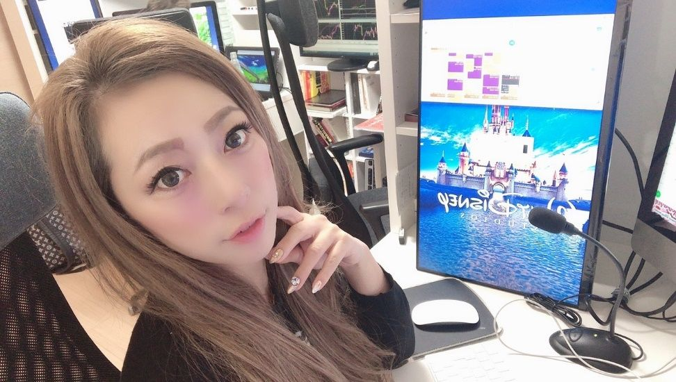
私も日々、コミュニティの方からたくさんのメッセージをいただいています。（なかなかお返事できなくて本当にゴメンナサイ）それらを読んでいるうちに、ふと、思ったんです。
あれ？ 本当は稼ぐ方法を知りたいんじゃない、成功を手に入れる方法も知りたいんじゃない、
「夢を見ている状態」
に、ずっと浸っていたい人、かなり多いのかも？
それって、旅をずっと夢みているみたいなものです。
なんか最近、つまんない......楽しいこと、ないのかなぁ。遠くに行ったら、楽しいことあるのかな？
そういえば、アメリカに行きたいな。
なになに？ 今キャンペーンで安く行けるの？ よーし、だったらこのチャンスにそのチケット、買っちゃえ！
アメリカに着いたら、あんな場所に行けるんだろうな、こんな経験できるんだろうな......
さて、そろそろ準備しなきゃ！ってなったときに、急に現実に引き戻されて夢から覚めます。
いや、会社休まなきゃいけないけど、希望出すの今、かなり気まずい。
それに準備って、結構大変じゃん......英語も分かんないし、なんか自分、場違いなことしてたような気がする。
あ、今だったらキャンセルできるみたい。そうだよね、準備大変だし、なんかそれほどアメリカ行きたいって思えなくなっちゃった。キャンセルしよ、キャンセルしよ。
でも、決して現実世界に満足している訳でもないから、また現実逃避させてくれそうな......例えば「ヨーロッパ旅行」のキャンペーンが目にとまります。
今回は６ヶ国も行けるの！？ しかもこの値段で！
ワクワクしながら準備をしようとすると、ふと気付きます。
あれ？ 一つずつの国の滞在時間、短くない？ 移動時間ばっかりじゃん......
そうよね、そんなにうまくいく訳ないよね。そう思うと、ヨーロッパも行きたいって思えなくなっちゃった。キャンセルしよ、キャンセルしよ......
すると今度は、アジアツアー、だなんてのもあるのを知って、「行きたい！」って思って、気分がハイになります。よーし、超、超、超、楽しみーーー！
なのに、ちょっとでも現実が見えると、急に夢から覚めて面白くなくなります。「あれ？ なんか違うじゃん。そんなの、行きたいって思えなくなっちゃった」
そうしているうちに、また......って、この繰り返し。
夢見ている間って、現実では味わえないハイな気分になりますから。そうそう、ハイテンションってヤツですね。
なのに、現実が見えた瞬間に急に何もかもさめてしまって、それが何であっても「いや、私が欲しかったのはこんなものじゃない」って思えてしまう。
月に１０万円稼ぎたいのなら、時給で働いて月１０万円稼ぐのも可能だし、ネットビジネスで１０万円稼ぐのも、どちらも可能ですよ！
ただ、今、あなたにどんな稼ぎ方を説明したところで、「いや、なんか、そんなんじゃないんですよね」って言われそうな気がします。
あなたが「夢見ている状態」に浸っていたいだけだったら？
私が現実的に可能な、具体的な方法を教えてしまったばかりに、それが「現実が見えた瞬間」になっちゃって、急に夢から覚めたのと同じような気持ちになって、「いや、なんか、そんなんじゃないんですよね」ってことになってしまうから。
もちろん夢を描いたり、まだ見ぬ未来を考えてワクワクしてみるのって、とてもとても大切なことですよ！ 大切なんだけど、そのための現実、にも、同じくらいワクワクしていたいもの。
空想の世界でしか幸せを感じることができないのは、本当にもったいない。現実の世界にも幸せなことって、気付けば山のようにありますから！
「夢みたいなこと起きないかな」って思ってるかもしれないけど、あなたが今生きている今日という日は、
【誰かが心の底から「生きたい」と夢見ていて、でもその夢を果たせなかった今日】
なのかもしれないのですから。
同じ、「今を生きている」ということであっても、現実が面白くないって思って過ごすことも、夢みたいな今日に生きれて本当に幸せと思うことも、どちらもできるのです。あなたはどう思って生きていますか？
「これを毎日やったら、月に１０万円、確実に稼げます」
「この習慣を続けたら、半年以内に億万長者」
みたいなものって、たくさんあります。でも、もしあなたが「夢見ていたい」というマインドであれば、どれを教えても、身につけることはできないと思います。
誰かが夢を見させてくれるんじゃなくて、夢を見るのは、あなたですね。
あなたの心の中でやりたいこと、実現したいことは何でしょう？
そして、現実世界を生きているのも、夢を叶えるのも、他の誰かじゃなくて、あなたがやっていくことですから。
まずは、そこがスタートかな、と思います！
そういうことを理解し、納得するためにも、こうしてお届けしている２冊の電子書籍をしっかりと読んでくださいね。
Ｑ
自分の枠の外の世界、自分の常識じゃない考え方。分かるようで分かりません。
具体的にどういうことですか？
＊＊＊＊＊
Ａ
例えば、夏の花火大会！
この電子書籍、出版しているの真冬なのに、そんな例えですか、って突っ込まれそうですが。
まあ、いいじゃないですか、分かりやすいと思ったから♪
花火大会に行くとき。お祭り気分で、ワクワクしますよね。この機会とばかりに浴衣も着て気分も上がります。大事な人や、家族、友達と一緒に見にいって、ちょっと屋台で軽く飲み食いしようか？ ねえねえ、あそこだったら綺麗に見れるんじゃない？ なんて話になると思います。
さて。ここで。
当日、花火を打ち上げる花火師たちは、どんな気持ちでいると思いますか？
花火師からの目線から見たら、花火大会はどう見えると思いますか？
うーん、私も花火大会で花火を打ち上げたことはないので、花火師の目線は分かりません(笑)
ただ、たぶん、全然違う景色が見えるでしょう。
当日のプレッシャー、かなり大きいのでしょうか？
それとも、「よっしゃーーー！ 祭りだ！」なんて楽しむ気持ちの方が大きいのか？
いや、また全然違うこと、思ってるのかな？
花火師どうしでしか分からない話なんてありそう。想像しかできませんけど、ね。
でも、自分と全然違う世界がそこにある、と思うと、なんだか楽しくなってきませんか？
これが、例えばアパレル関連の人だったら、花火大会に行っただけでも浴衣を着て歩いている人を見て、「あ、今年はこの色の浴衣を着ている人が多いから人気なのかな」「この小物の合わせ方、すごくかわいいな」なんてことを思わず考えてしまっているのかもしれませんね。
そして、ビジネスが大好きな人は、こういう人がたくさん集まるところで、何か楽しいことできないかな？ なんて考えていたりもしますからね！ これくらいの人数が集まるイベントを自分も開催するとなると、どう組織をつくって動くことが大切なのか？ 観察していたり、この日限定で何かキャンペーンができないかな？なんて考えていたり。
あ、もちろん、普通通り、花火大会を見て楽しむっていうのもＯＫなんです。それがダメとは言いませんから。
ここでは例えで分かりやすいかな、と思って花火大会のお話、させていただきました。
自分が思いも寄らなかった、枠の外の世界。自分の常識じゃない考え方。そこにあなたが成功する「種」が、どこかに潜んでいるのかもしれません。
楽しみながら、アンテナを張り巡らしてみると、きっといろんなものが見れるはずですよ！
では、次にどんどん進んでいく前に、また一度、振り返ってみることにしますね。
１０ いかに脳をだますか？ いかに自分をコントロールするか？その方法を知り、実行する
１１ 口角を上げる
１２ 自分の感情と丁寧に向き合う
１３ 自分の軸を知る 軸から外れたことはしない
１４ 「常識」や「見えない壁」を疑ってかかる そんなものないと気付く
１５ 本当の目的や夢を見失わない
１６ メンターを探し、出会う
１７ 全部、メンターが自分の代わりにやってくれるとは思わない
１８ 主体的に動く
誰かが与えてくれた「見えない壁」で守られているうちは、「自分の力で、しっかり生きていく！」という感覚が掴めないかもしれません。守られていることも気付けずに、不平不満ばかりになってしまっていませんか？
あなたの幸せは、壁の外側にあるのかもしれない。
それはあなたが気付かない限りは、誰も気付いてくれないもの。
「自分の力で、自分だからこその成功を目指してしっかり生きていくって、楽しそうだな！」なんて思えたら、またこの本を読み進めて行きましょうね！
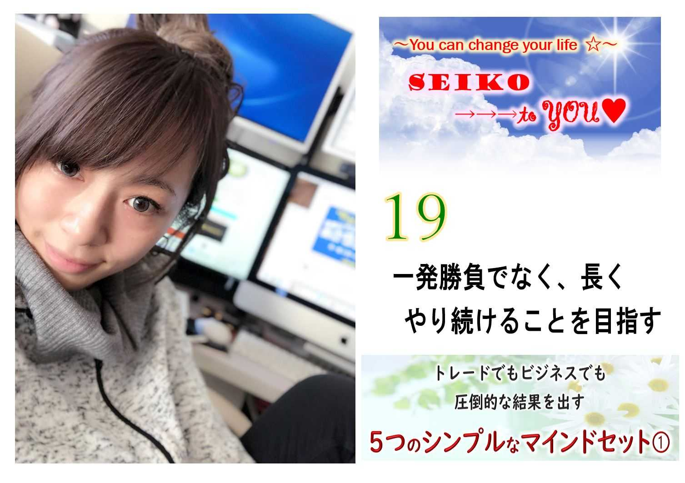
★ トレードでもビジネスでも圧倒的な結果を出す
★ ５つのシンプルなマインドセット①
■━━━━━━━━━━━━━━━━━━━━━━━
１９ 一発勝負でなく、長くやり続けることを目指す
ここからは、以前私のコミュニティで、
全員プレゼント
でお届けした内容です！ この電子書籍を読んでいる方にも、特別にお話しすることにしましょう。
いいですか？ 特別ですからね♬
と、その前に......
あなたは、こんなことを思ったことはありませんか？
毎日毎日、やらねばならないことだらけ！
仕事でも、家庭でも、なぜか次々とやることが発生していく。
そして一生懸命にあれにもこれにも取り組んでいるのに
全然報われていないし、こんなに頑張っているのに、何の成果にも繋がっていないような気がする......
成功している人は、もっと楽々と結果を出しているような気がする。
自分とは根本的に違うんじゃないの？
いえいえ！ 成功している人も同じ人間ですし、一日の時間も、同じ２４時間です。
私もシングルマザーで、限られた時間の中でトレードやビジネスに取り組むしかありませんでした。
多くの人が、特に最初は限られた時間の中で何か少しでも成果を出そうと必死になると思います。
でも、もしかしたら......
「頑張り方」
を間違っている人も多いのかもしれませんね。
成功するには、とにかくひたすらやるしかない！
そう思っている人は多いようですが、残念ながらそれは正しいとは言い切れません。
たくさんのことをやり過ぎてかえってマイナスの結果になってしまっている方も、多いのではないでしょうか？
『圧倒的な結果を出すシンプルな５つのマインドセット』
そう、実はシンプルでいいんです。
これから説明していきましょう！
＝＝＝＝＝＝＝＝＝＝
まず、１番目。
一発勝負でなく、長くやり続けることを目指す
「え、なんだかすごいこと、教えてくれると思っていたのに......こんなこと？」
そんなこと思って、ここで拍子抜けしちゃった人もいるかもしれません。
そうそう、本質が分かれば、本当はシンプルで大丈夫なんです。これから説明してきますね。
一気に成功しよう、大きく稼ごうと焦り過ぎている人、要注意ですよ！
何をするにも、資金を大きくしたり、本当の力をつけるためには、時間をかけることが必要なんです。
例えばトレードでいきなり大きな金額をかけて失敗してしまい資金がなくなる、状況が悪化する、など。それって周りから見たら、当然、そういう結果になると思ってた......なんてことなんです。
そんな大きな金額をかけるのは、勉強と実践を積み重ねて、それだけの余剰金ができ、コントロールでき力がついてからにしましょうね！
あなたはコントロールする力もまだついていないのに、とにかく大きな資金を手にしたい！ 動かしたい！ だなんて空回りになってしまってはいませんか？冷静に振り返ってみてくださいね。
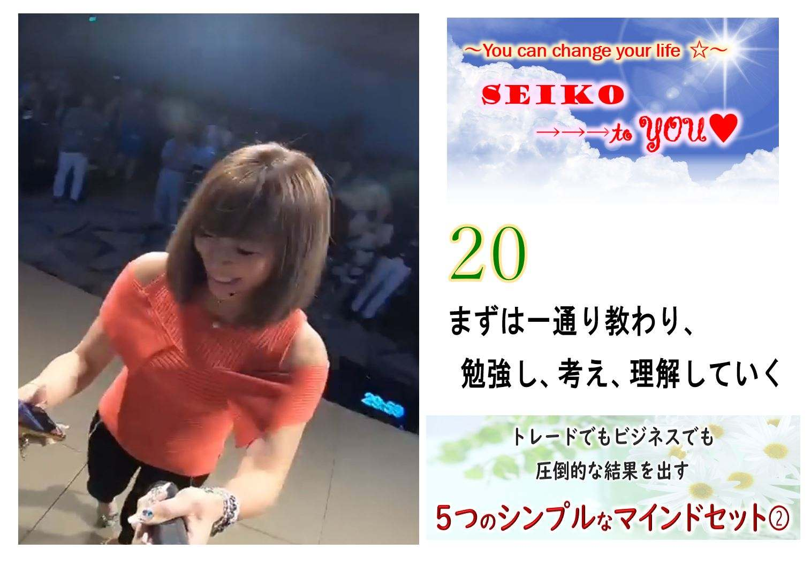
★ トレードでもビジネスでも圧倒的な結果を出す
★ ５つのシンプルなマインドセット②
■━━━━━━━━━━━━━━━━━━━━━━━
２０ まずは一通り教わり、勉強し、考え、理解していく
トレードだと、全体像が見えないまま細かい数字やチャートのことを勉強して、特別なテクニックを身に付けたように思えても、それは実践向きではありません。
ジグソーパズルを思い浮かべると分かりやすいかもしれません。完成した全体の絵がどうなるか？というのが分かっていれば、あ、この色のピースはたぶんこの辺だな、って自分で推測していくことができますよね。
全体の絵が全然分かっていないのに、ひとつひとつのピースを熱心に見て、その形について難しいこと考えてみたところで、きっと全然はかどりませんよね。
けれども、トレードや他のビジネスでも、全体が見えていないのにある特定のテクニックだとか手法とかでどうにかしようとしている人、結構多いですからね......！
広く「ビジネスとは何か？」ということを理解しておくことや、トレードの基礎の部分について全体を知ることがまずは大切なんです。
全部を最初から深堀りし過ぎると、これまたかえって訳が分からなくなってしまいます。
全体が見えてないと、目的を達成するために細かいところを知る、というより、どんどん細かいところが気になって、「詳細を知ること」そのものがいつの間にか目的になってしまったりしますから。
最初は全体を知るために、基礎的なことをおさえるところから。細かいところを深堀りするのは、また必要になったらその都度、で構いません。全体が見えている方が、深掘りの方向を間違えずにすみますからね。必要に応じて勉強するようにしましょう！
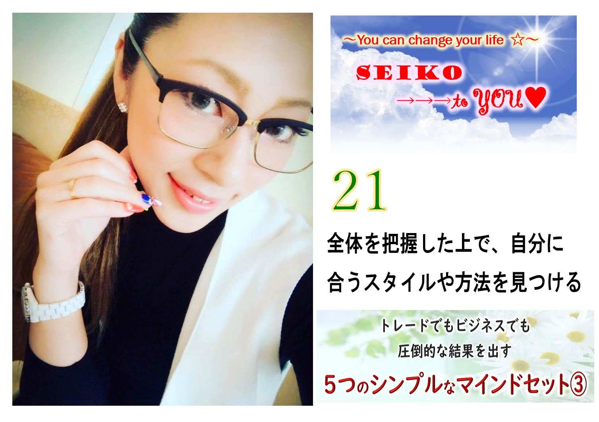
★ トレードでもビジネスでも圧倒的な結果を出す
★ ５つのシンプルなマインドセット③
■━━━━━━━━━━━━━━━━━━━━━━━
２１ 全体を把握した上で、自分に合うスタイルや方法を見つける
トレードは複雑に考え過ぎると訳が分からなくなっていきます。そしてそれは他のビジネスも同じ。だからこそ最終的にはシンプルにやりたいところ。
ですが②でまずは全体を理解していないと、少し行き詰まるとどうすればいいか分からなくなってしまうんですね。どうにかしようと試みても、全く見当違いなことをやってしまったりして、ますますどうしたらいいか分からなくなります。
限られた時間の中であれもこれも！ やるのは難しいですね。なのでいずれは自分に合った、成果を集中して出せるスタイルを見つけるのがいいんです。
トレードは、自分の集中力が一番発揮できるこの時間に毎日やる、テクニカルでもこれしか使わない、迷ったときはこの数値を見る、それでも迷ったらエントリーしない、など。やっていくうちに、自分に合ったスタイルが見えてきます。
トレード以外でも、例えばその会社によって独自のスタイルがありますよね。マクドナルドとスターバックス。マクドナルドがスタバみたいに、中には５００円、６００円くらいする何種類ものコーヒーを出すこともしなければ、スタバがマクドナルドみたいに、コーヒーと合わせて食べるのとはちょっと違うハンバーガーを何種類も置くことはしないでしょう。
いろんなビジネスの形態があるけれども、マクドナルドはマクドナルド、スターバックスはスターバックスのスタイルを貫くのが一番成果を出しやすいんです。それ以外のこともやろう、あの商品も、この商品も、全部取り扱おう！ なんてするのはきっと逆効果ですよね。
かと言って、やってすぐに、自分に合ったスタイルが見えるものでもありませんから。
全体を把握して、その中で自分に合うスタイルや方法を見つけていく。この順番が大切です。
★ トレードでもビジネスでも圧倒的な結果を出す
★ ５つのシンプルなマインドセット④
■━━━━━━━━━━━━━━━━━━━━━━━
２２ 試行錯誤しながら、どんどん シンプルにできるようにする
③で、自分に合うスタイルがなんとなく見えてきても、それで終わり、ということではありません。何度も実践して、そこから学ぶ、ということを続けるからこそ力もつくし、慣れて作業や判断が早くもなるし、どんどんいい方法を取り入れることができます！
ときに失敗することもあるでしょう。いや、失敗の方が多いかもしれません。
失敗を最小限の損出におさえるようにしながら、長く続けられるようにしながら、失敗から多くのことを学んでいかねばなりませんね。学びながら、自分にとってよりよいスタイルを身につけていきましょう。
試行錯誤しながら、よりシンプルに。
ここまで来ると、だいぶ楽に、結果を出せる状態になりましたね！
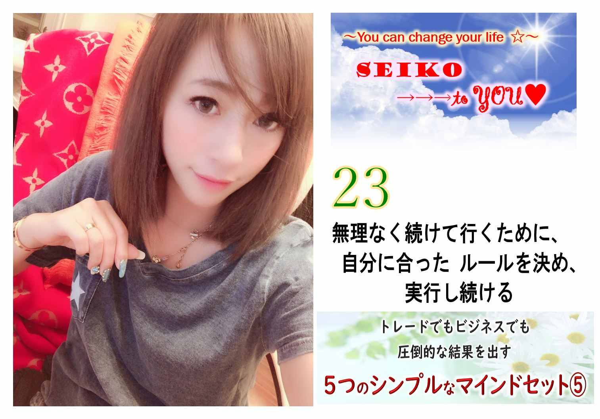
★ トレードでもビジネスでも圧倒的な結果を出す
★ ５つのシンプルなマインドセット⑤
■━━━━━━━━━━━━━━━━━━━━━━━
２３ 無理なく続けて行くために、自分に合ったルールを決め、実行し続ける
一度結果が出せるようになったらそれで終わり、ではありません。自分に合ったルールを決めましょう。そうすると振り回されずに、自分の成功スタイルを継続させることができますからね。
トレードでは成果が出せるようになった人は 「マイルール」 を持っています。
感情に振り回されずに、欲を出し過ぎないように、「マイルール」に則って着々と取り組む。思いも寄らない失敗をしたときのことを振り返ると、「マイルール」と違うことに手を出してしまっていた、と気付いて再度「マイルール」の重要さに自分で認識する、ということも多いですね。
と、言っても最初にマイルールを見つけるのではないですからね。それは思いつき、のようなもの。ちゃんと理解しているからこそ、その中で確実に成果が出せるマイルールが見つかる、ということですから。
そしてまた１、ですね。一発逆転を狙わずに、長くやり続けることが大切です！
＝＝＝＝＝＝＝＝＝＝
いかがでしたか？
そう、すごく難しく考える必要はないんですね。
１～５の順番でご紹介しましたが、実際にはこの１～５を何度も繰り返しながら、その度に新たなことにたくさん気付いて、どんどんパワーアップしていきます。
そして「圧倒的な結果」に繋がっていきますからね！
例えば今やっていることも、一生懸命にやっている割には、成果が全然出ないのはなぜ？ と思っている人も、この１～５に当てはめて考えてみると大きなヒントが見つかるのではないでしょうか？
全体のこともちゃんと考えながら、シンプルに捉え、シンプルに続けられるようにして、あとはどんどん実践していくことがとても重要ですから。
一見難しそうに見える小手先のスキルだけ身につけてどうにかこうにかしようとするよりも、こうしたシンプルなマインドセットをしっかりと身につけ、実践していく方が遥かに大切です！
■□■━━━━━━━━━━━━━━━━
ねぇ、これってどうなの！？
ＳＥＩＫＯの課外教室 ～質問コーナー～
━━━━━━━━━━━━━━━━■□■
Ｑ
トレード、面白そうだな、と思うのですが、やったことがないしできるかどうか分かりません。なんだか難しそう、とも思います。私もトレード、やった方がいいと思いますか？
＊＊＊＊＊
Ａ
もし他に、今、どうしてもやりたいことがある！というのであれば、そちらを優先させてもいいと思います！
ですが、そうですね......もしあなたが、「これからいっぱい、稼ぎたい！」と思うのであれば、あなたにとっての人生の目的や夢に「経済的にも恵まれている状態」というのがあるのであれば、しっかりと【稼ぐ】ということにコミットした方がいいと思います。
世のため、人のために素晴らしい活動をしようとして、でも全然収入になっていない、という人もいますよね。いろんな生き方があるので否定はしません。ただ私の場合、子ども二人育てていくためには、綺麗事抜きにして【稼ぐ】ことが必要だったんです。
「マダムＳＥＩＫＯになる！」とも決めていましたしね！
でも、全てがうまくいった訳ではありません。パソコン教室に通って、私が最初に考えたのが、たくさんの人が集まるコミュニティをつくってそこのトップに自分がなっていれば、稼げるんじゃないのかな？ ということ。大きな会社をつくってその取締役！ とはいかなくても、自分がつくったグループに人が集まっていれば、稼げるだろうって思ったんです。
『本当の自分に出会うためのノート』の電子書籍でもお話ししましたね。私は東京に来る前までは、女性限定のコミュニティをつくって活動していました。
すごく盛り上がったし、周りからも注目されてテレビの取材も何度か来たけれど、実際のところは全然稼げていなかった。
そのときはすごく貴重な経験ができたし無駄ではなかったって思うけれども、でも【稼ぐ】ことにコミットした場合は、ちょっとズレていたんです。一緒に活動していたママたちも、「絶対に稼ぐぞーーー！」っていう気持ちではなかったですしね。
あなたがこれから稼ぎたいのであれば、トレードや、その他【稼ぐ】ことにコミットしたものをおすすめさせていただきますね。なんだかお金だけに特化して味気ない、と思うかもしれませんが、やっていくうちに「世界の情勢も頭に入れておいた方がいいな」なんてことに気付いたり、新たな人との繋がりができたりして、それもまた楽しくなっていくと思いますよ！
Ｑ
それでも、トレードの勉強って難しそう......やっぱり、ただ持ってるだけで、人生の一発逆転！ が狙えるという意味では、暗号通貨の方がいいですよね？
＊＊＊＊＊
Ａ
確かに、２０１７年はそんな感じでしたね。たった１年でビットコインも１ＢＴＣ=１０万円くらいだったのが、２００万円を超えていきましたからね！
かと思えば、それを聞いてビットコインを手に入れた人たちは直後に暴落に遭ってますね......誰かに怒ろうとしても、開発者と言われるサトシナカモトは姿を消しているし、というよりそもそも投資って自己責任なので、もうどうしようもありません。
私は暗号通貨も、おすすめしますよ！ この暴落して価格が落ちている間に、せっせと買い増ししています！ ただ、あなたが暗号通貨を保有する場合、「そもそも暗号通貨って何？」という基礎的なことが分かってからにして欲しいですね。そうじゃないと大きく判断を間違ってしまうことになりかねないので。
まず、国がつくった訳でもないのに、ビットコインってお金なの？ ということについて。
実はこれ、私たちの身近でも行われているんです。
例えばあなたが居酒屋さんに行ったけれども、満席でお店に入れなかったとき。「すみません、また次回ご来店されたときにつかってください」と言って生ビール１杯無料券が渡されたりもしますね。その券は、そのお店に限って、生ビールを買うための「お金の代わり」として使える、ということですね。
お金の代わりになるものを発行する、というのは、一瞬とても意外に思えてしまうかもしれないけれども、誰の許可も得ずにできることなんです。「それ、うちのお店だったらお金の代わりになりますよ」という信頼ひとつでできちゃうんですね。このとき、この居酒屋さんは国に許可を得た、とかそういう訳でもありませんね。
こんな風に、「決められた仲間内で、お金としてつかえるものを作ろうよ！」としたのがビットコインです。ただビットコインの場合は、紙でつくった券、などではなく電子データにした訳です。
電子のお金っていうとなんだか難しそうに思えるかもしれませんが、いえいえ、クレジットカードや交通系ＩＣカードの電子マネーも、もう私たちの生活ですっかり定着してきていますよね！
ただ、ここで......もし、居酒屋さんの店長が「前につくった生ビールの券、あれ、もう使えないようにしよう」だなんて勝手なこと言いだしたら？ その券を持っている人は「そんなの話が違う！」ということになっちゃいますね。
クレジットカードも、万が一、ですよ、その社長が私利私欲のために、顧客のお金を全部引き出すなんてことしてしまったら？ あくまでも「万が一」の想定ですが、そんなの当然困りますよね。人によっては、それじゃあもう生活できない！ ってことになってしまうかもしれません。
ただ、これが「国レベル」となると、実はそんな「困るんですけど！」ってことが起きてしまっているんです。ハイパーインフレ......お金の価値が短期間で何百分の１にもなってしまうような、あり得ないような事態です。本当に信じられないような、何億分の１にもなってしまった！ というようなことも、これまでの歴史の中でも起きているんですね。
そしてそれは実は遠い遠い昔のお話でもない。今でも国の勝手な事情に振り回されざるを得ない状況で生きている人が本当にたくさんいるのです。
それって「中央集権」、誰かがお金を管理しているから、その中央の人の一方的な事情で起きてしまうことです。そうじゃなく「分散型」にすることでビットコインはそんな「困るんですけど！」という事態をなくすことにしたんです。
お金のデータに不正が加えられないように、「ブロックチェーン」という技術を取り入れることにしたんですね。それまでのデータが「ブロック」のようにひとまとまりになっていて、それが全て「チェーン」、つまり鎖のように繋がっているんです。どこかで不正を加えたら、そのチェーンが崩れてしまうので不正をしたことが分かります。
つまり、不正をしたことが周りから見たらすぐ分かるから、誰も不正はできませんよね、という技術なんです。
ビットコインは、国が管理しているものではないし、特定の誰かのものでもない。「分散型」なのでみんなのものです。このビットコインで、世界中の人が、平和に繋がれたらいいんじゃないのかな？
この地球上には、国の一方的な都合で貧困から抜け出せない人がたくさんいます。銀行口座すらつくれない人だっています。それでも、スマホだったら持ってるよ、という人が実は世界中には多くいるんですね。そんな人がビットコインを通して、自由と平和を手に入れることができるはず！
とは言えそんなビットコインは、国の立場からすればときに脅威的な存在になってしまう訳ですよね。自分の国のお金を信用していないから、ビットコインに乗り換える、ということですから。だから規制も行われ、その度にビットコインを手放す人がいて暴落します。
しかしこのビットコインやブロックチェーンの技術は素晴らしくて、どんどん応用もされてきているのです。世界的な大企業も注目して取り入れるほどにもなってきました。国の発展を思えば、暗号通貨は全て除外しようと思っても、もう決して無視できない存在なのです。
世界で大注目されている、という意味ではこれ以降も手にしたい人が増えて、需要と供給のバランスにより価格が上がることも、充分想定できますね！ ただ、また大規模な規制が行われて価格がさらに暴落する可能性も、なきにしも非ず。特定の誰かが価格の調整をしている訳ではなく、分散型......つまりは「価格は全て、市場任せ」というような状態なので、価格の上がり下がりの幅（ボラリティ）は、どうしても日本円やドルなどと比べたら大きなものになってしまいますね。
そして暗号通貨と言えば、ビットコイン以外にもアルトコイン、と呼ばれるものがあります。例えばイーサリアム。これはビットコインの「お金」という面だけでなく、今は融資を受けることができない、国がしっかりしていないばかりに自分の身分を証明できるものがなくて契約書が書けない、それで事業をおこせない、という人が世界中にいます。そんな人でも、「分散型」の技術を用いて、誰でも事業がおこせるようになったら？
もっと世界中が豊かになるのでは！ そんなことを目指して開発されたものなのです。イーサリアムには「スマートコントラクト（賢い契約）」と呼ばれる、ビットコインにはない性能があります。
このようにして、アルトコインにもそれぞれ特質があるんですね。
以上のことを踏まえて！
私は暗号通貨に手を出す場合は、そのコインのことをよーく調べて、理解して、「このコインの目指しているものに共感した！ 将来性に期待したい！ もし今後、価格が上がらなくても、むしろ価格が下がったとしても、私は惜しくない！」くらいに思えるものだけ買うことをおすすめしています。あくまでも余剰金で投資を行うんだ、という自覚を忘れずに。
今（２０１９年２月上旬）は価格が全体的に下がって来ているので、今が買い時！ とも言えます。けれどもこれ以上は下がらない、とも言えませんし、一方でこれまで何百倍という価格の上がり方をしたコインもいっぱいある、というのも事実。
私はブロックチェーンの技術は素晴らしいと思うし、不動産や大口の株式などと違って、暗号通貨は１０００円くらいの少額からスタートできるのも魅力的なところだとも思っています。私は暗号通貨の未来にかけたいな、と思っていますが、投資は自己責任が基本ですからね！
参考になればと思います！
それではここで、また振り返りをしておきますね！
★ トレードでもビジネスでも圧倒的な結果を出す
★ ５つのシンプルなマインドセット
■━━━━━━━━━━━━━━━━━━━━━━━
１９ 一発勝負でなく、長くやり続けることを目指す
２０ まずは一通り教わり、 勉強し、考え、理解していく
２１ 全体を把握した上で、自分に合うスタイルや方法を見つける
２２ 試行錯誤しながら、どんどん シンプルにできるようにする
２３ 無理なく続けて行くために、自分に合ったルールを決め、実行し続ける
ここまでのことをしっかりと読んで、理解し、どんどん行動していけば、あなたは今までにない成功にグッと近づけていけるはず。
ただ、この書籍はまだ続きがあります。次からは、「そんなこと、本当に公表しちゃっていいの！？」と言われそうなお話をしていきますよ！ 一緒に読み進めていきましょう！
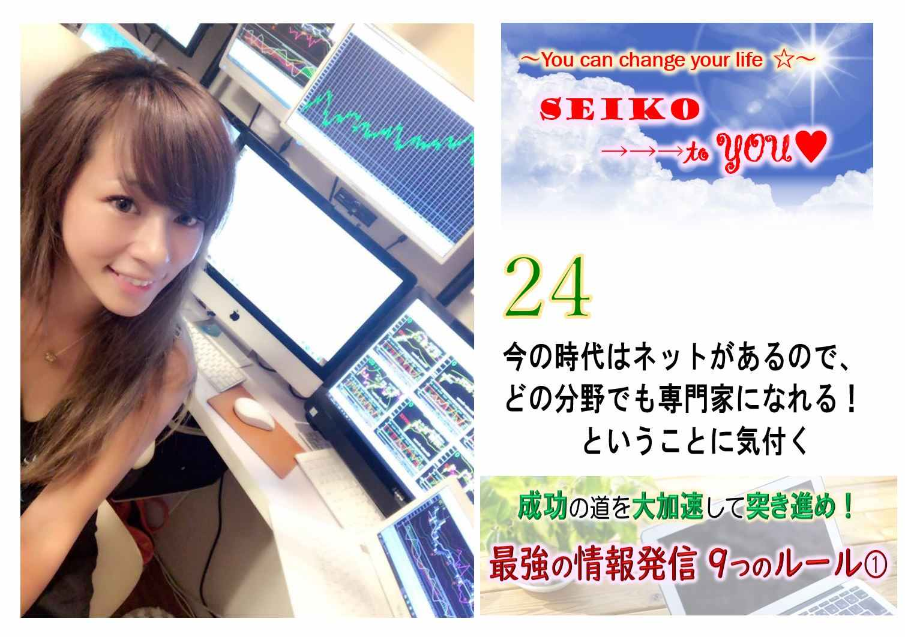
★ 成功の道を大加速して突き進め！
★ 最強の情報発信 ９つのルール①
■━━━━━━━━━━━━━━━ ━ ━
２４ 今の時代はネットがあるので、どの分野でも専門家になれる！ ということに気付く
ここからは、 「最強の情報発信 ９つのルール」 をお伝えしていきますよ！
私は現在、８万人に向けて情報発信をし、それをビジネスにしています。
と、言うと、「そういうのって、ほんの一部の限られた人しかできないことなんだろうな」って思う人がほとんどのようなんですが、いえいえ実は、そんなことないんです。
情報発信は、誰にでもできます。そして、うまく活用すれば爆発的な成功を手にすることも可能なんです。ただ、私も何も考えずに、なんとなくやっていた訳ではありません。
誰にでもできるからこそ、「成功したい」と思ってはじめたにも関わらず、全然成功できていない人、かなり多いのかもしれません。残念ながら９割以上の人が成功できていない、というのが現状でしょう......
そしたら、私がその成功の裏話を教えたりしたら、ライバルが増えて大変だから、結局は一番肝心なところ、教えてくれないんじゃないの？ なんて思うかもしれません。そんなことはないんです！ だって、私らしい成功は私にしかできないし、あなたらしい成功はあなたにしかできませんからね！
そういう意味では、あなたが完全に敵対してしまうようなライバルになることはないと思っています。むしろ、この電子書籍を読んで成功しました！ と言ってくれれば、「お互い一緒に切磋琢磨し合える仲間」のような存在になれると思っていますから。「いいライバル」みたいな関係かもしれません！
そして先ほどのトレードの話と同じように、これは情報発信だけに限ったお話ではありません。ビジネスを行う上で大切な考え方も身に付きます。ここからのお話は、情報発信を題材にして、あなたの考え方を「ビジネス脳」にするためのもの、とも言えますね。
それでは９つのルールを、ひとつずつ見ていきましょう！
＝＝＝＝＝＝＝＝＝＝
まずはひとつめから。
今の時代はネットがあるので、どの分野でも専門家になれる！ ということに気付く
私も暗号通貨に関する情報発信はしていますが、実は暗号通貨に関しては後発組。私よりも先に暗号通貨をやっている人なんてたくさんいます。
それでも暗号通貨に関する情報は、ネットの中を探せばいくらでも出て来ますからね！
例えば、開発者のツイッターなんかは、私のような後発組にとっては宝箱みたいな存在なんです。英語のままじゃ読めませんが、それも今の時代、グーグル先生がちゃんと翻訳してくれます(笑)
もしかしたら、ひと昔前だったらこんなこと、考えられなかったかもしれません。最先端の情報を開発者自らがどんどん公開してくれるなんて！
ただですね、これらをちゃんとチェックしている人。意外なことにほとんどいない、というのもまた事実だったりします。だからそれらをきちんと読んでいるだけでも、あなたは専門家として名乗っていいくらいの存在になれるという訳なんですね。
「この人がこんなこと、ツイッターでつぶやいていました！」って言うだけじゃなくて、ひとつの出来事であってもあらゆる角度から、あらゆる人の意見をチェックしてみて、その上で自分なりの考えを伝えられるようになったら、あなたの情報は充分読むに値するものになりますよね。だって世の中の大半の人は、「これって、どういうことなんだろう？」って疑問に思っていながら、そこまで踏み込んだことまでは考えられずに、いろんなことで忙しくて他のことを優先せざるを得ないのですから。そういう人のためになる情報を書けばいいんです。
「他の人のツイッターや記事を参考にして、情報発信して、専門家を名乗っていいの！？」なんて思うかもしれませんが、むしろ何の知識もないのに思いつきで当てずっぽうなこと書いていても、見ている人は分かりますから。かえって信頼なくしちゃいます。
だから、「ここまで書いているのは、誰々がどこどこで発表した内容」「そしてここからは、私の意見」という風にはっきり書いた方が「ちゃんとした根拠をもとに、しっかりと自分の意見も持っている人なんだな」と思われて信頼されますよ。
そしてこれって、暗号通貨だけに限ったことじゃありません。
例えば「最新の映画の話」だったり、「オシャレやファッションの話」でも、「毎日の料理」についてでも、「旅行」でも、何か他の趣味であっても！
ネットを探せば本当にたくさんの情報が出てきます。それをチェックして、読者の方のことを思って工夫を加えながら記事にするだけで、あなたは専門家になれるんですよ！
もとからあなたが、めちゃくちゃ頭が良くてビジネスセンスがあって人脈もあって大成功していて、だから一般の人に語れることが山ほどある！ というのならこんなことしなくてもいいのかもしれません。でも今私はこの本を、まずは「成功したいのになかなか思い通りにいかなくて悩んでいる人」に向けて書いているのですから、ここで書いているのもそんな方に向けての内容だ、ということを理解してくださいね。
「私には何もない。私には何もできない」と思わないでくださいね。今の時代、ネットをちょっと工夫して使うだけでも、あなたは新しい人生をスタートできるのですから！
■━━━━━━━━━━━━━━━━━
★ 成功の道を大加速して突き進め！
★ 最強の情報発信 ９つのルール②
■━━━━━━━━━━━━━━━━━
２５ 自分は何の専門家になりたいのか考える
「どの分野の専門家にも、今からなれるんだ！」と気付くと、自分の選択肢が一気に広がるはず。
「自分はこのことについて、たくさんの人に伝えたい！」というものがあるのであれば、その道を進んでいくのももちろんＯＫですよ！
ただ、「自分にはこれくらいしかできない......」と思ってその狭い範囲の中でどうにかしようと思ったり、「何もできない」と思ってしまうのはとてももったいない！ あなたが今まで思いも寄らなかったようなところに、あなたらしい成功があるのかもしれないのですから。
ここでも「自分の軸は何か？」と見つめてみたことがとても役立つと思います。「絶対にこの情報発信しか、自分はしない、できない」とかたくなに決めつけるよりは、「自分の軸に合っていることで、なおかつ周りの人に求められることをやろう。軌道修正も加えながらやっていこう」なんて自分が動ける世界を広げておいた方がいいですね。
自分の軸から全く外れたことをしたり、そもそも軸も何もないような配信をしても、読んでいる人からしたらなんだか違和感ばかり、なんてことにもなってしまいます。
別に、内容が間違っている訳では決してないんです。ただ、何かが違うような気がしてしまう。そうするうちに、心の中に違和感ばかりが残って、「この人の配信、読みたいな」という気持ちがなんだかなくなってきてしまいます......
情報発信をするとき、内容がしっかりしているのももちろん大切なのですが、「この人だから、読みたいな」と思ってもらえるっていうのも実はものすごく大事。だからこそ、自分の軸が自分で分かっているというのがここでも重要になってくるんです。
そして「自分でやりたい」って思えたことだからこそ、そしてそのことについての情報発信をするからこそ、配信している人がとても魅力的に見えるんですね。
今のあなたは、何の専門家になりたいですか？
ここで出た答えを、後で変更してはダメ、ということではありません。この後の内容を読んでみて、軌道修正してももちろんＯＫですから。
ただ、何も考えていなくて、何の結果も出ていないのであれば、軌道修正をしようにもどうにもできません。なのでいったんは、ここで考えてみましょう！
あなたは、どの専門家にでもなれる！ としたら、何の専門家になりたいですか？
■━━━━━━━━━━━━━━━━━
★ 成功の道を大加速して突き進め！
★ 最強の情報発信 ９つのルール③
■━━━━━━━━━━━━━━━━━
２６ きちんと戦略を立てる
【戦略】というと、すごく大袈裟なことのように、周りの人を打ち負かすことで自分が勝つ！ みたいに感じるかもしれませんが、ここではそういうのとは少し違う。「ちゃんと成果が出るように、考えてやる」ということです。
でも、なんとなくやってみたい！ という人もいると思います。新たに知り合った人も増えたし、うまくいくかいかないかは分からないけど、うまくいくんじゃないのかな？ とも思うから、情報発信、やってみたい！
それで情報発信をスタートしてみる、というのもＯＫだと思います。ただ、そういう場合は、敢えて言うなら「テストマーケティング」。試しに、どれだけの反応があるのか、どれだけの成果が出せるのかやってみる、ということなのですから。
そして、そこで検証したことをもとに、新たに戦略を立ててより確実に成果が出せるようにする、という道もあるでしょう。情報発信だけに限らず、こういう考え方がちゃんとできている人は、他のビジネスでも強いですよ！
困ってしまうのが、戦略も何もなく、なんとなくスタートしてみて、なんとなく、望む結果は得られていないように思うけれども、そのままずっと同じやり方でやってしまっている人です。このままいけば、きっといつかうまくいくはず、と思っている。けれども何も得られていない。
現状うまくいってないのなら、何かを変える必要があるということです。何を変える必要があるのかも、「なんとなく」じゃ見つかりませんね。
じゃあ、具体的にどんなことを、戦略的に考える必要があるの？ きちんと成果が出せるように考える必要があるの？
いくつか挙げるのであれば、
◆どんな人を、どうやって集めるの？ （私が暗号通貨についての配信をする、と決めたのに、暗号通貨に全く興味がない人に「私の記事を読んでください！」と一生懸命に言っても、あまり意味がないですよね）
◆どんな内容のことを書くの？（例えば専門性とプライベートの割合をどれくらいにするのか？ 専門性だけの記事だと、しっかりした内容にはなるけれども、そこで人間味が見えないと「継続して読みたい！」という気持ちになりにくい。かと言ってプライベートだけだと、「専門家」として認知してもらえないので、商品を売り始めた途端にサーっと引かれてしまう、だなんてことにもなってしまいます）
◆どのタイミングで、有料のものについての案内をするの？（はじめまして、で詳しいことは全く分からない人から突然「１００万円出してくれたら、あなたにスゴい情報を教えてあげますよ」と言われたら？ その後も何度も何度も、同じ内容のメッセージが来たら？ きっと、嫌になっちゃいますよね。どんなにいいものだとしても、ちょっと考えてみることが大切になります）
など。「きちんと戦略を立てる」という思考をもっていれば、こういうことはいくらでも出てきます。
戦略って、決して理屈だけのものではありません。読んでくれる方のことを思いながら、「こうしたら、うまくいくのかな？」「こんなことしたら、いい成果が出せそう！」など試行錯誤してみるんです。
そうそう、楽しんでやる気持ちも忘れずにしてくださいね！
★ 成功の道を大加速して突き進め！
★ 最強の情報発信 ９つのルール④
■━━━━━━━━━━━━━━━━━
２７ 圧倒的に稼ぎたいなら時流に合ったことをする
「そうそう。私は今すぐにでも、圧倒的に稼ぎたいんです。これ、早く教えてくれれば良かったのに！」そんな声も聞こえてきそうですけどね（汗）
時流に乗ってるって、情報発信だけに限らず、ビジネスをする上でとても大切です。
だったら、時流に乗っていることって？
ひとつ挙げるとすれば、そう、「暗号通貨」ですね！ ２０１７年の、爆上げ真っ最中！ というときに比べたら人々の関心は低くなってはいるものの、以前として注目されている分野だということに変わりはありません。
......だったら、その暗号通貨の、どんなことについて配信したらいいんでしょうか？
......だったら、どれくらいの頻度で、どれくらいの分量の文章を書いたらいいのでしょうか？
そういうことに、ひとつひとつお答えしようとしたい気持ちもあるのですが、キリがなくなっちゃいます。
それに、「私の場合は」という立場でしかお答えできません。私の場合は、一回の配信で５００文字を切ると、かなり短いと感じられると思います。それだけ普段は、文字数が多め。
「もっと短い方がいい」という人もたくさんいるのですが、私の場合は「戦略的に考えて」長めにしていました。それについては後で詳しくお話ししましょう。
どんなこと？ と言われても、一番反応がいい内容は、そのときそのときで変わってきます。最先端の情報は取り入れておくに越したことはないのですが、実際に記事を配信するときは最先端過ぎてもあまり反応が上がりません。どうやら、良かれと思って最先端のことをお伝えしても、読者さんはピンと来ないみたいなんですね。
かと言って多くの人がもう知っているのに「今さら？」という話をしても、読者の方から共感を得ることができません。そういう配信をずっと続けていても、専門家、として認識されるのは難しい。
じゃあ、どんな内容がベストなの？ というのは、例えば「いいね！」の数やコメント数など「数字」のことも見ながら、最終的には自分で習得していくしかないと思います。このことについてもまた、後の内容とも関連してきますからね！
そして、あなたにとっての本当の目的や夢が何なのか？ というのは私には分かりません。一番最初に、「圧倒的に稼ぐためには、時流に乗ったことをするのが一番ですよ、それには暗号通貨がいいですよ！」とお話しすると、絶対に暗号通貨についての配信をしなきゃって思えてしまうかもしれませんから。
自分で納得して、「よし、暗号通貨についての配信をしよう！」と決めたのならもちろんＯＫ！ でも、もしかしたらあなたにとっては違うことかもしれない。あなたが輝く場所や、本当の夢や目標を達成するためのものは、もしかしたら違うかもしれませんね。
繰り返しますが、圧倒的に稼ぎたいのなら、時流に合ったことをしましょう。他のことをやる場合と比べて、同じ労力でも出せる成果が全然変わったものになります。何十倍、何百倍もの差になる、と言っても過言ではありません。それだけ、多くの人が注目しているからです。ビジネスができる人こそ、そうした分野に集まって来ていますからね！
ただ、「時流に合ったことに取り組んでいれば、それでいい！」というものでもありませんから。何をするにしても、自分でしっかりと考える力が必要になりますよ。そして、あまりにも「時流に合ったことをする」ということに気を取られ過ぎて、本来のあなた自身の夢や目標を見失わないようにしてくださいね。
★ 成功の道を大加速して突き進め！
★ 最強の情報発信 ９つのルール⑤
■━━━━━━━━━━━━━━━━━
２８ 自分の強みを考える
「自分の強み......そんなもの、ない......」そう思って落ち込むのは、まだ早いですからねーーー！
先にも言いましたよね、この書籍は「成功したいのになかなか思い通りにいかなくて悩んでいる人」のことを思って書いていますよ、って！
「強み」と言っても、そんなものすごいことじゃなくても大丈夫。
でも、例えばあなたがこれまでの内容を読んで、「よし、自分も暗号通貨についての配信、はじめよう！」と思ったとしますね。そしたら実際には、あなた以外にも暗号通貨の情報発信をしている人ってたくさんいるんです。その中でも、「この人の書いていることだったら、読みたい！」と思ってもらえることが必要になります。周りと全く同じことをしていても、残念ながら成果は出せない、ということに気付かねばなりません。
私の場合は？
まずは、「女性だから」というのが強みになりました。暗号通貨について情報発信している人、女性が全くいない訳じゃなかったけど少数派でした。だから単純に、後発組でスタートした割には、印象に残りやすかったと思います。
あとは「自分がよく分かってないところがあるから、読者さんも何が知りたいのか、何が分からないかよく分かる」ということ。自分が分からないことは、ちゃんと自分でも分かるまで調べて、納得してから記事にするんです。私が最初から何もかもよく分かっていたら、こんなことできませんね。
「自分もよく分かってない」ということが、強みになった訳です。
【女性だから】とか、【自分もよく分かってない】とか、そんなことでも「強み」なの？ と思うかもしれませんが、はい、そうなんです。
何でもないようなことでも「強み」だと思えば、いくらでも強みにできます。
情報発信も、これからのビジネスも、どうにか【工夫】してみる、考えてみるって力がすごく大切です。それは学校で教えられたものをそのまま暗記するような頭の良さとは、ちょっと違うんだと思います。目の前の誰かのために......情報発信だと、「パソコンやスマホの向こう側にいる人のために」、ということになるけれども......そう、誰かのために、自分ならどういうことができるのかな？ って工夫して考えてみること。そうすると、何でもないようなことでさえも「強み」に変わります。
【女性だから】とか、【自分もよく分かってない】とか、そんなことで大丈夫なんです。
自分で気付いて、強みに変えてしまう発想と工夫が大切なんですね。
あなたがこれから情報発信をするときに、あなただからこその「強み」になりそうなことって、どんなことがありますか？
★ 成功の道を大加速して突き進め！
★ 最強の情報発信 ９つのルール⑥
■━━━━━━━━━━━━━━━━━
２９ 「読まない、信じない、行動しない」を叩き込む
情報発信をすると、「私の記事、きっとたくさんの人が読んでくれるはず！ そして私が書いていることに納得して、信じてくれるに違いない！ この商品買ってくださいね、って言ったらきっとみんな買ってくれるんだろうなぁ......！」ついつい、ですね、そんな気持ちでやってしまいがちです。
無理もないかもしれません。例えば ｆａｃｅｂｏｏｋ についてのセミナーに参加すると、そこで講師の方が「ｆａｃｅｂｏｏｋは今世界でこれだけの人口の人がやっていて、ビジネスでもこれだけ注目していて......」なんて話をするのを、あなたも聞いたのかもしれません。
これがＬＩＮＥ＠のセミナーになると、「ｆａｃｅｂｏｏｋよりも、今圧倒的に読まれているのはＬＩＮＥなんです！」なんて説明もあって、それを聞くと「そうか！ ｆａｃｅｂｏｏｋは本当にたくさんの人が投稿を読んでいるし、ＬＩＮＥ＠になればさらに多くの人が読んでくれるんだな！」なんて思ってしまうかもしれませんね。
いえいえ、残念ながら......
これはライター業をやっている人の中ではよく言われていることなんだそうです。「３つのＮＯＴを常に意識しなさい」と。
「 読まない、信じない、行動しない 」。
そう言われて振り返ってみると、違和感があった経験、ないですか？
「あれ？ 今日のｆａｃｅｂｏｏｋ、コメントくださいね、って書いて投稿したのに、誰もコメントしてくれてない」とか。
そうそう、ただ何も考えずに文章を書いていても、その文章は誰にも読まれないし、読まれたとしても内容を信じてはくれないし、信じてくれたとしても思ったように行動してくれないもの。
その壁を、どうやって乗り越えていくか。工夫をしていかなきゃいけないんですね。
「いいね！」が例え多くても、きちんと文章を読んでくれての「いいね！」なのか、それともただただ何も考えずに「いいね！」を押している人が多いだけなのか。そういうことも冷静に見極める目も必要になって来ますから。
じゃあ、何も考えずにやっていると、読んでくれることさえ難しいのであれば、どうしたらいいの？
まずはこれまでお伝えした内容で言えば、「あなただからこそ、書いた記事を読みたい！」と思われる存在になる、ということ。
そしてここで特別に、ある手法をご紹介させていただくことにしましょう！
この手法、プロで実績を出しているライターさんが意識している考え方に、私が皆さんのためにアレンジを加えた手法です。難しいことは全くありません。でも、意識している人はほとんどいないことです。これが使いこなせたら、あなたの記事はグンと読まれるようになりますからね！ 中途半端なプロよりも、ずっと成果が出せるようになること間違いなしですよ！
（これも、特別に特別、ですからね！）
さて、分かりやすいようにゆっくり説明していきますね。
ＳＮＳの場合は、まず一番最初に目に入って来るのは「画像」です。
そう。「画像」の大切さを認識している人はきっと多いと思います。で、その画像の「役割」は？
ただ画像を投稿にくっつけて満足するだけじゃなくて、もう少し考えてみましょう。
あなたは画像を見て欲しいのかもしれない。でも、きっとあなたが情報発信をはじめた本当の理由は、その画像１枚を見てもらって満足するようなことではないはずですよね。
そう考えると、きっと本文まで読んで欲しい、本文もたった２行、３行だけじゃなくて、その先のことまで、全部しっかり読んで欲しいと思うでしょう。
そこまで考えると、画像の役割は、「次の１行目を読んでもらうため」とも言えますね！
読者さんの目線で考えるのなら、たくさんある投稿の中で、画像に目がとまって「おっ！」と思います。そしてつい、そこにある１行目も目にとまります。
ただ......そうそう、あなたの本当の目的は、１行目を読んでもらってそれでＯＫ、ではないはずですよね。その先の本文も、しっかりと読んで欲しい訳なんです。
と、なると、ぱっと１行目を見て、思わず２行目も読みたくなるような文章だといいですよね。
２行目も読むと、３行目も読みたくなって......
ｆａｃｅｂｏｏｋだとこのあたりで、「もっと読む」という表示が出て来ると思います。
そうそう、この「もっと読む」をクリックして、続きもしっかり読んで欲しい訳ですよね。
私はＬＩＮＥ＠で文章が長くなる場合は、「続きはこちら」と書いて、ＵＲＬを貼り付けて、クリックして続きを読んでもらうことがあります。もちろん、その続きを読んでいただきたくて書いています！
当たり前のようなことなんですが、こうしたことを意識せずに、ただ文章を書いてしまっている人、多いですからね。
画像の役割は、１行目を読んでもらうため。
１行目の役割は、２行目、３行目を読んでもらうため。
２行目、３行目の役割は、続きの本文を読み進めてもらうため。
続きの本文も、最初のひとまとまりの役割は、その続きを......
そして、その続きは......
そういうことを考えながら、一番最後まで読者さんに進んでもらうんです。
本当に伝えたかったことを全部【読んで】、内容を【信じて】、最終的には【行動して】もらえるように、それぞれの「役割」を考えながら文章を書きます。そして次に、次に、と繋げていくんです。
どうしたら、「次も読みたい」って思ってもらえるのかな？ この文章の役割や本当の目的はちゃんと果たせているのかな？ そんなことを考えながら。
ライター業をしている方でも、この通りに当てはめて書けば大丈夫！ という「テンプレート」と言われるものがあるそうなんですが、それがなぜ、そういうテンプレートなのか？ というのを分かっていないと使いこなせません。そして、そのテンプレートに沿って読者さんも自然に読み進めていくような文章でないと、「あるパート」から「あるパート」に切り替わるようなタイミングで「なんかもう、これ以上読み進めるのいいや......」なんて思われて【読まない】という行動を読者さんに取らせてしまうんですね。
本当は、最後まで読み進めて、場合によっては「購入する」というボタンをクリック、という【行動する】というところまで辿り着いて欲しい訳ですよね。
最初の「画像」がぱっと目につくところからはじまって
↓
１行目を読もう、と思って
↓
２行目、３行目を読もう、と思って
↓
「もっと見る」とか、「続きはこちら」をクリックしてもらって
↓
その続きも、読み進めていく
↓
それぞれの文章の役割を考えながら、自然と読み進めていけるようにする
↓
そして、どんどん進んで行く......
こうしたことを意識することで、あなたの文章はどんどん「読まれる」ものになりますよ！
ただ、役割を考えて、型にはめよう！ と考え過ぎると、かえってぎこちない文章になったりもしますから（汗）
最初から完璧を目指さずに、とにかくやってみることも大切です！
やってみて気付くことも、きっとたくさんあるはず。そして自分で気付いたことは、どんどん取り入れてみることにしましょう。考え過ぎて何もやらないよりも、行動から得たものの方が、成果に直接つながるような学びになるようなことが、はるかに多いはずですからね！
脱線が長くなりましたが、「読まない、信じない、行動しない」を意識して、「読まれるため、信じてもらうため、行動してもらうため」、どうしたらいいのか？ を常に考えることにしましょうね。そのための工夫も、読んでいる方のことを思いながら、楽しむ気持ちも忘れずにいきましょう！
★ 成功の道を大加速して突き進め！
★ 最強の情報発信 ９つのルール⑦
■━━━━━━━━━━━━━━━━━
３０ 「先生」が「生徒」に教えているように書く
そろそろ、「時流に合ったことを！」「専門家として認識されるように！」「３つのＮＯＴ！」なんて言われて、頭がこんがらがって来た人もいるかもしれないので、もう少しシンプルなことをお伝えすることにしますね。
「先生」が「生徒」に教えているように書く。
先生って言っても、あなたもこれまでの人生でいろんな先生に会って来たと思います。この先生の話なら聞きたい！ あの先生が担任で何組はうらやましいな、なんて先生もいたでしょう。でもですね、この先生は、何だかイヤだな、だって露骨に生徒のこと見下してくるんだもん！ っていう先生もいたと思います。
うっかりしていると、情報発信って、自分を偉く見せるための発信なんだ！ って思って、こんな「何だかイヤだな」って思う先生みたいなこと、してしまうんですよね。
そんな先生の話は、聞かれなくなります。あなたも小さいときにそんな先生の話、もう聞きたくないやって思ってたのと同じです(笑)
それは、あなたがせっかく書いた文章がそもそも読まれなくなってしまうことを意味します。もしかしたらそれで一時期、通用した時期もあったのかもしれないけれども......今はもう、あからさまに読者の方を見下している配信なんて「読みたくない」って思われて開封すらされなくなる、と思った方がいいですね。
ここで思い出して欲しいんです。「この先生の話なら、聞きたい！」「この先生が担任がいい！」って思った先生って、どんな人だっただろう？ 私は中学はほぼ行ってないのですが、「この教科の授業がいつも楽しみ。だって、××先生だもん！」って思えるような先生って、どんな人だったかな？ 子ども時代に限らずに、大人になってから何かを習った人だったら、その中に「この先生が大好きなんです！」という人が思い当たるかもしれませんね。
決して全ての生徒に好かれようと思ってなくて、悪いことは悪い、とはっきり叱ってくれた先生の方がかえってみんなに好かれていたなあ、とか、
あの先生が教えてくれたおかげで数学が好きになった！ 世界史が大好きになった！ だって先生が本当に楽しそうに、そして誰でも分かりやすく、詳しく教えてくれたから。
そうそう、あの先生が担当したクラスの方が平均点、完全に高かったんだよね、授業のための準備、ものすごくしているのが分かったし、集中して授業聞こうって思えたし、結果を出させるのが本当に上手な先生だったからな、
あの先生は、授業の３分の２くらいムダ話だった。なのにちゃんと授業が進むから不思議だったな。あの先生のムダ話聞くのが当時の私の学校に行く楽しみだったな......
あの先生、特別すごい人とも思わなかったけど、なんか、子ども心ながらに放っておけなかったな(笑) あの先生の愛されポイントって、一体なんだったんだろう？
いろんな先生の顔が思い浮かぶでしょう。そこで頭に浮かんだ先生は、「魅力的な何か」を持った、人間性のある先生のはずですね。人間的にとても尊敬できる人ではないでしょうか？
そしてその先生の中でも、自分に近い先生を思い出して、真似してみることにするんです。一人の先生だったらしっくり来ないのであれば、この先生のここ、私、取り入れたい！ と思えるところでも大丈夫ですよ。
そんな先生が、誰か一人の生徒のことを思って、一生懸命に文章を書くような気持ちで書くのです。その「生徒」とは子どもじゃなくても、実際の読者さんでももちろんＯＫです。むしろそちらの方が、他の読者さんも読んでスッと内容が入って来るような文章になるでしょう。
文章を書くときは「ペルソナ」と言って、ある特定の誰かのために書くような気持ちの方が、より読みやすくていい文章が書ける、と言われていますからね。
性格も何もかも自分と遠いような人を真似しようとするのは大変です。それはあなたらしさを見失うことにもなり兼ねませんから。自分に近い先生を見習って、学ぶべきところを学んで、情報発信の際に自分の中に取り入れてみてください。そうすると、読者さんから見てあなたが魅力的な人に思えます。そして、文章も読みやすい、頭にも心にも入って来やすいものになるでしょう。
そんな大好きな、尊敬できる先生の話すことだったら聞きたいな、素直に聞き入れたいな、と思うんです。
それが「３つのＮＯＴ」の壁を乗り越えて、「この人（大好きな先生）が書いたものでれば、文章を読もう、信じよう、行動しよう」ということに繋がっていくのですから。
私だったら、皆さんの上に立ってものすごく偉い感じで話すような先生には、とてもなれそうにありません(笑)
読者さんからいただくメッセージを読んでいると、「私より絶対、このメッセージくださった人の方が詳しいじゃないですか！」なんて思うことも、あります、あります。
ものすごく偉そうな先生になるよりは、皆さんと一緒に、毎日一生懸命に頑張るしかないと思っています。日々元気いっぱいに過ごして、その中で成長して、そんな姿を見て何か感じてもらえたらな、なんてことも思っていますからね！
「先生」が「生徒」に教えているように書く。
だなんて言うと、なんだか特別なテクニックのようにも思えるかもしれませんが、そこには「目の前の生徒（=読者さん）のことを思う気持ち」が、絶対に絶対に必要ですよ！ それは忘れないようにしてくださいね。
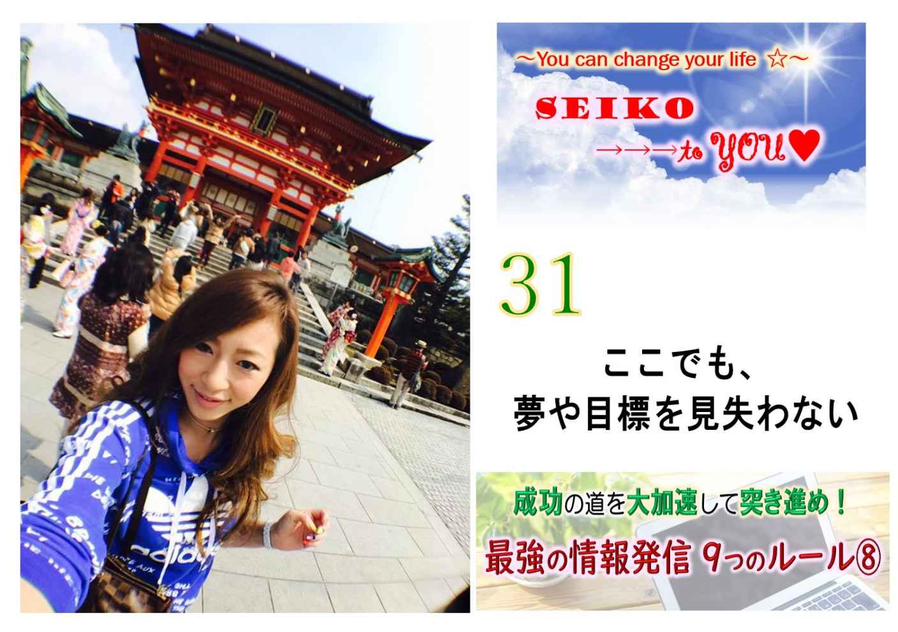
★ 成功の道を大加速して突き進め！
★ 最強の情報発信 ９つのルール⑧
■━━━━━━━━━━━━━━━━━
３１ ここでも、夢や目標を見失わない
この書籍で、何度も同じ内容のことはお伝えしましたが、また言わせていただきますよ！
それくらい大事なことで、うっかりするとすぐに見失っちゃうことなんです。
例えばあなたが、まずは、月に５万円くらい、稼げたらいいな、と思ってｆａｃｅｂｏｏｋをはじめたとしましょう。するとうまくいって、毎回投稿に１０００いいね！ がつくようになりました。調子がいいときは２０００いいね！ を超えることもあります。すごい、さすがです！
ただ、それなのにｆａｃｅｂｏｏｋをつかって１円も稼げていないとしましょう。あれ？ それって本当にうまくいっている、と言っていいものか......
本来の夢や目標に全然近づいていないのであれば、何かを変えなければ、ということに気付けるはずですから。極端な話、友達を５０００人まで増やしたけれども、その５０００人のうちほぼ全員が日本語が分からない人で、文章は全く読まない（というより読めない）、けれども「いいね！」だけは押しています、という人だったら？
この「９つのルール」で前に書いたことを思い出すと、それは完全に「戦略ミス」だった、と言わざるを得ませんね。
ところが１０００いいね！ や２０００いいね！ まで行ったり、またそんな結果が出せていない場合でも、「本当に、今のままで、夢や目標の方に進んでいるのかな？」ということを見失ってしまいがち。そして、何の軌道修正もしないまま進んで行って、なんとなく夢も目標も全然叶っていない、ということになってしまうんですね。
今、思い通りに行っていないことが悪いことではないんですよ！ 一度はじめてみたスタイルで、すぐに、完全にうまくいくなんてケースの方が少ないのですから。それは情報発信でも、他のビジネスでも同じことが言えます。
ただ、うまくいっていないことに気付いたら、軌道修正をしましょうね！ もしかしたら、ｆａｃｅｂｏｏｋだけではどうやらうまくいかないようだ、ということに気付いて他のＳＮＳと連携させるようなことも思い浮かぶかもしれませんね。そのときは「戦略を立てる」ところから考え直しです。
がっかりすることはありませんよ！ 一度うまくいかなかった経験をすることで、この「戦略を立てる」際に役立つ大きな学びになっているはずですからね。
また、「今の自分のやり方ではうまくいっていない」ということを素直に受け止めるからこそ、周りを見渡してみたときに、「そうか、だからこの人はこういう投稿をしていたんだ！」と新たに気付くこともあるでしょう。他の人投稿も見て、納得したことに関しては自分の投稿にもぜひ取り入れてみてください。ここでも「自分の軸」を見失わないようにしながら......
「情報発信のために情報発信をする」ような状態になって、気付いたら全然、前進していなかった、なんてことにならないように！
情報発信を通して、夢や目標を実現するんだ！ という目線をどうか見失わないようにしてくださいね。
★ 成功の道を大加速して突き進め！
★ 最強の情報発信 ９つのルール⑨
■━━━━━━━━━━━━━━━━━
３２ より良いものを求め続ける（数字や反応、結果などを常にチェックしながら......）
最初にやってみたことが、すぐにうまくいくとは限りません。それでもより良いものを目指すこと、より目標に近づいていくことなら可能ですね。
そして、ついに目標を達成することができたら！？ それはあなたの「成功体験」になります。いったん成功体験をして、「そうか、自分の目標を達成するって、こういうことなんだ！」というのが分かれば、情報発信以外のビジネスシーンでも、その体験をもとにさらに成功を重ねることができるようになりますからね。
そのためにも、ただなんとなくやって、なんとなくうまくいかない......という状況のままではいけませんね。常にうまくいっているのかどうか？ 軌道修正が必要かどうか？ チェックするようにしましょう。
どういう文章の書き方がいいのかな？内容はどういうものがいいんだろう？
そういえば、こんなメッセージが読者の方から届いてたな。確かにそうだよな、勉強になったな。
こういう配信にすると、いいね！の数は普段とはそんなに変わらないけど、コメントの数がグッと増えるんだ！
うまくいかないときは、情報発信も大変なことに思えてしまうかもしれませんね。ですがうまくいき出すと、その後はより良いものを求め続けることが、単純にどんどん楽しくなっていきますよ！
より良い投稿をするためにも、他人の投稿も参考にしたいな、と思えたのなら。
そのとき、特にｆａｃｅｂｏｏｋだったら見て欲しいのが「コメント欄」です。
例えば「いいね！」は多いけれどもコメントが極端に少ない人がいたら、それは「いいね！」を押す「だけ」のお友達をたくさん集めてしまったということかもしれませんね。
コメントも多いけれども、本文の内容と全然関係ない一言ばかり、という投稿もあります。よく見たらその人が書いた内容に全く触れずに、ただ挨拶だけとか、ひどいときは全然関係ない自分の商品の売り込みを猛烈にしているじゃん！みたいな人......そういう人ばかりがｆａｃｅｂｏｏｋ上お友達、というのもちょっと考えてみたいもの。
かと思えば、投稿に対して、すごく熱心なコメントがたくさんかえってくる人、ｆａｃｅｂｏｏｋ上で見だだけでも、すごく心の通ったコミュニケーションをたくさんの人としているな、と思うような人もいます。そしてその人の投稿をさかのぼってみると過去にクラウドファンディングをしたことがあって、ビックリするくらいの成果を出していることも！
そう、参考にするなら、こういう実績を出したことのある人の投稿にしたいですね。ただ文章だけでなく、どんな人がお友達で、ｆａｃｅｂｏｏｋでどんな人脈を築いていて、普段どんなやり取りをしているのか？ 投稿そのもの以外にも学べるところは何かありそうだな、なんて思いながら投稿を読んでいくのです。
あ、参考にする、と言っても他人の投稿を完全コピペなんてことは、くれぐれもやめてくださいね。
自分自身を見失わないようにしながら、より良い情報発信ができるようになること、そしてあなたの夢がどんどん叶っていくこと。
これからずっとずっと楽しみ続けて欲しいと思います。
おまけ。 （でも、超重要！！）
最強の情報発信の中でも、「無敵のポイント」
ここまで読み進めていただいたあなたへ、情報発信をするのであれば、「これが見つかれば最強中の最強！！」と言えるポイントをお伝えすることにしましょう。
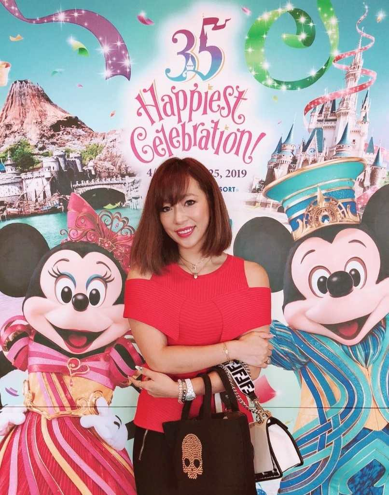
こんなことまで公開したら、身内からめちゃめちゃに怒られてしまいそうな気がしますが、でもいいんです。
あなたがあなたらしく成功できる方が、私にとって本当に嬉しいこと、ですからね！
さて、いいですか？
情報発信をするときに、無敵になれるポイントとは？
それは、
時流に合っていて、多くの人が求めていて、自分の強みが活きて、
かつ、他の誰もやっていない超ベストポジションが見つかれば、無敵です！
と言っても、文章だけではよく分からないと思うので私の例で、お話しさせていただきますね。
暗号通貨の価格がグングン上がっていった２０１７年。私は、少ーし冷静に、周りを見てみたんです。２０１７年のはじめから中旬にかけての情報発信は、「このコインがこれから上がりますよ！」という情報を誰よりも早く手に入れて、どんどん配信するようなスタイルを取っている人が多かったし、また読者さんもそれを求める人もすごく多かった。でもだからこそ思ったんです。「これと全く同じ戦い方をしたら、私は完全に埋もれるな、そして負けるな」と。
そしてその読みは当たっていたように思います。私は早くから、それとは違う戦い方をする路線をとっていました。
「このコインがこれから上がる！」という情報は、もう一刻も早く手に入れて配信した者勝ち！ということになりますよね。私も情報は最先端のものを取り入れるのがベスト、という点を否定するつもりはありません。ただ、「一刻も早くコインが爆上がりする情報を聞きつけて、知らせる！」というのは、どこか限界が来ます。多くの人がそれを求めて同じ戦いをしているのであれば、なおさらです。
そのうち、いかに早く「仕手」の情報を手に入れるか？ というところまで多くの人が求めるようになりました。仕手って、短期的に大きな利益を得ることを目的にした誰かが、莫大な金額の投機的売買をすることです。うまく勝ち抜けたときは一瞬で大金を手に入れられるのですが、失敗したときの損出はもうハンパない額になってしまいます。
そのときは多くの人が「仕手情報さえ手に入れば、きっと一瞬で大儲けできるはず！」と思い、「仕手情報が欲しい！ 仕手情報をどんどん教えて欲しい！」と求めるようになりました。
ただ、仕手情報って、そんなにいっぱい出回っている訳でもありません。私もその頃にはありがたい人の繋がりで多くの人脈ができていましたが、それでも私よりも先に仕手の情報をキャッチできる人もいました。同じ戦い方をずっとしていたら、私はどうしても遅れて配信することにならざるを得ないので、完全に負けていたでしょう。
そしてそのうち、仕手だと聞いていたのに、乗ってみたら全然うまくいかなかった、という話が出て来ます。そうなると「仕手」と言っても、あまりみんな、前ほどはありがたいと思えなくなってしまっていきました。当たり前と言えば当たり前なのかもしれません。
仕手を仕掛ける人というのは、自分の利益だけを考えて莫大な金額の投機をする訳ですし、失敗すれば文字通り命取りにもなり兼ねないので、そんなに頻繁に行われるとは考えにくいです。ましてやその情報が、裏の意図も何もなく外部にどんどん流出するとは......
本当にごく一部の人はそういう情報を手に入れることができていたのかもしれませんが、これだけどんどん多くの人に知れ渡ってしまう事態になったとすれば、そんな状況は長続きはしなかったのは、冷静になってみると「確かにそうなってしまうよな」という流れだったのかもしれません......
さて、そんな「爆上げ情報を仕入れて、配信する！」というスタイルを多くの人が目指す中で、「実は暗号通貨に関する情報、これもたくさんの人が求めているんだけれども、やっている人がなかなか見当たらない」というものがありました。
それが？
「暗号通貨についてのいろんな知識やニュースを、詳しく、分かりやすく説明する」というものだったんですね。
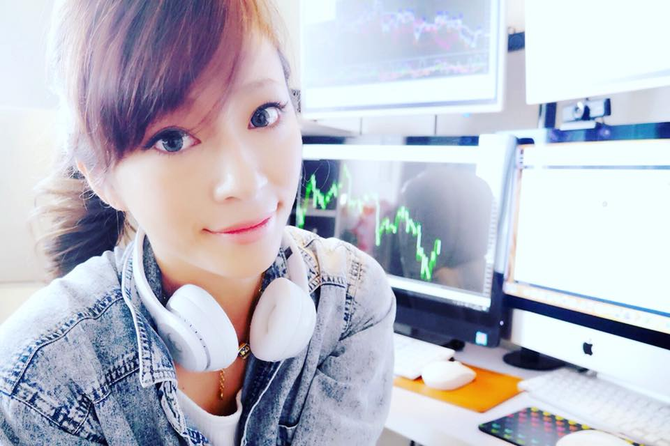
「□□のコインが、一気に１５０％上昇しました！」なんて配信はあっても、「じゃあ、その□□って、どんなコイン？」「どういう理由があって、□□コインは、一気に１５０％上昇したの？」って詳しく説明したものがあまり見当たらなかったんです。
「女性で、暗号通貨についての情報を、初心者が読んでも分かりやすいように、かつ既に詳しい人でも『そういう目線があったのか！』なんて気付くような読む価値があって、元気いっぱいに楽しく、毎回毎回、本当に勉強になるようなことを、ＬＩＮＥ＠で配信している人」とまでなると、ゼロ、と言っていいような状態。
でも、「暗号通貨のこと、もっと詳しく知りたい！」っていう需要はあったから、この路線で配信したらきっといいんじゃないのかな、と思ったんです。
他にやっている人もいないしこのスタイルでずっと配信を続けよう、そしたら「ここでの配信は勉強になるから、なおかつ楽しいし同じようなものが見当たらないから、清水聖子の配信をずっと読み続けたい！」という人は増えるんじゃないのかなって思いました。
そうすると、ありがたいことに......「ここで、暗号通貨について詳しく、分かりやすく語れる人に一言コメントが欲しい！」なんて場面で、呼んでいただけるようなことが増えて来たのです。「他に相応しい人が思いつかなかった」「清水聖子なら適任だと思って」などという理由がそこにはありました。
ここでもう一度、繰り返すことにしましょう。
情報発信をするときに、無敵になれるポイントとは？
それは、
時流に合っていて、多くの人が求めていて、自分の強みが活きて、
かつ、他の誰もやっていない超ベストポジションが見つかれば、無敵です！
と、言うとすごく偉そうなことを言っているようにも聞こえるかもしれませんが、私の強みと言えば、【女性だから】とか、【自分もよく分かってない】とかそういうことです(笑)
ただ、 時流に合っていて、多くの人が求めているのに他の誰もやっていない 、となれば 自然と多くの人の注目を集められる、一目置かれる、声をかけられるポジション にいれるってことなんですね。
私のＬＩＮＥ＠ですが、最初に読者さんを集めるときは、それこそ「戦略的に考えて」労力やその他必要なものをつかって集めました。でもその後は、日々の配信だけ一生懸命やっていたら、それ以外には何もしていないのにそれでもどんどん読者さんは増えて行ったんです。
日々いただくメッセージを読んでいたら分かったのですが、「私の投資仲間のコミュニティの〇〇さんが紹介してくれました」「友だちに紹介してもらって登録しました」など、私の全然知らないところで 「口コミ」 が起きていて、ＬＩＮＥ＠に登録してくれる人がかなり多かったんですね。
そうしているうちにお話もいただいて、雑誌にも掲載していただきました。見開きで２ページ分も！
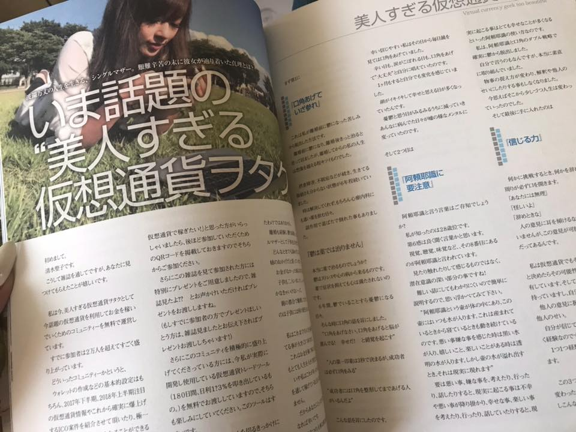
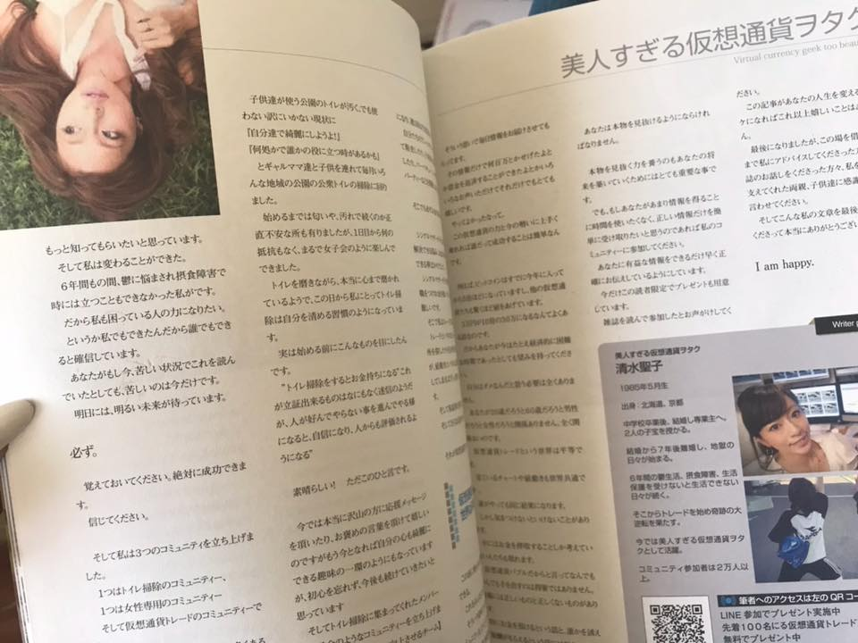
今読み返してもありがたくて涙が出そうだ......
本当に本当に、ありがとうございます！
でも実はこれって、「他の人と同じ戦い方をしたら、自分は負けるな」と思ったからできたこと。
そしてやってみて、数字的なことやいただくメッセージをチェックしても、「これはいけるな」と思ったから基本のスタイルはこのままで貫くことにしました。他の配信をしている人に比べたらどうしても長文にならざるを得ないですが、それでも毎回最後まで読んでくださって、コメントやメッセージをくださる熱心な読者さんもたくさんいますしね！
「自分は周りの人と比べて、誇れるものがない......」と思っている方もいるかもしれませんが、いえいえ、だからこそ見つかる「無敵のポイント」がきっとあるはずなんです。
でもそれって、ひとつのことだけしか見えていない状態では、なかなか気付けません。広く「ビジネス」というものを見渡せる力が必要ですね。ものすごく難しい知識をこの段階で身につける必要はないと思うけれども、全体として「あ、こうなっているんだな」と理解できるようになる力って大切です。
『時流に合っていて、多くの人が求めていて、自分の強みが活きて、
かつ、他の誰もやっていない超ベストポジション』
最初は見つからなくてとても難しく感じてしまうかもしれませんね。
でも、一度見つかると、「あ、これももしかしたらベストポジションじゃないの？」「あ、こういうこともきっと需要があるけど、しっかりやってる人、見当たらないな」というのにどんどん気付くようになりますから。
ただ、私が全部やる訳にもいかないから、
あなたもそんな「無敵のポイント」を見つけてどんどん成功して欲しいんですね。
「無敵のポイント」、つまりは敵なし！ ライバル不在っていうことです。
だから、あなたと私がライバルになって敵対しあうことはありません。
なので、「無敵のポイント」を見つけることができて、試しにやってみて、「これでいける！」という手応えを感じたのであれば、
その後は思う存分、あなたらしく成功してください。
ではここでも、振り返っておきましょう！
★ 成功の道を大加速して突き進め！
★ 最強の情報発信 ９つのルール
■━━━━━━━━━━━━━━━━━
２４ 今の時代はネットがあるので、どの分野でも専門家になれる！ということに気付く
２５ 自分は何の専門家になりたいのか考える
２６ きちんと戦略を立てる
２７ 圧倒的に稼ぎたいなら時流に合ったことをする
２８ 自分の強みを考える
２９ 「読まない、信じない、行動しない」を叩き込む
３０ 「先生」が「生徒」に教えているように書く
３１ ここでも、夢や目標を見失わない
３２ より良いものを求め続ける（数字や反応、結果などを常にチェックしながら......）
おまけ
時流に合っていて、多くの人が求めていて、自分の強みが活きて、
かつ、他の誰もやっていない超ベストポジションが見つかれば、
無敵です！
情報発信を通して、「自分らしく成功するとはどういうことか？」というのが伝わればいいなと思います。
自分らしく成功って、完全に自分一人の思い込みでやることじゃない。
かと言って、他人に合わせることでもない。
「これだったら、私は成功できる！」という絶妙なポイントに自分が置けるか？ というのが、超重要ですからね。
そんなことも頭に置きながらも、この電子書籍、あともう一息だけお付き合いください！
３３ 人を大切にして生きる
ここに来て、この一言を。
たった一言だし、ここで分量もそんなにたくさんは書きません。
でも、これまで書き綴ってきた３２項目の合計と、このたったひとつ、「人を大切にして生きる」ということの重要さは、３２対１ なんてものじゃなくどちらも同じくらいの重みがあるんじゃないかなと思っています。
私も努力はいっぱいしてきたし、歯を喰いしばって乗り越えてきたこともたくさんありました。
けれども、こうして今幸せであるのは、こんな私でも支えてくださった本当に多くの人のおかげしかないと思っています。
自分一人で一生懸命にやっているように見えて、チャンスを自分から掴んだように思えていて、でもそれはチャンスの手を差し伸べてくれた尊敬すべき人がいてこそのこと。そういうことは決して見失わないようにようにしたいものですね。
そして、この本をここまで読んでくださったあなたにも！
ここまでの長文を最後まで読んでくださり、本当にありがとうございました。
あなたがいるからこそ、清水聖子はがんばれます。
たくさんの人の支えがあるからこその、今の成功、今の幸せだということを忘れないようにしながら、どんな栄光を手に入れようとも、これからも私は【人を大切に】しながら生きていたいと思います。
人を大切に。そして皆さんも幸せでありますように。
では最後に、これまでの内容を一気に振り返ってみましょう！
１ あなたの人生の年表を書き出して下さい
２ １、の年表に人生の上がり下がりのグラフを書き入れて下さい
３ 自分の人生を受け止めること 自分の人生に納得すること
４ ここから「人生の大逆転劇」がはじまるイメージをもつ
５ 「これまで」よりも「これから」の方がはるかに重要だと気付く
６ 本を読む
７ 「良い言葉」をたくさん自分の中に入れる
８ 「良い言葉」で思考する
９ 自分が生きるテーマとなる、大切な言葉を見つける
１０ いかに脳をだますか？ いかに自分をコントロールするか？その方法を知り、実行する
１１ 口角を上げる
１２ 自分の感情と丁寧に向き合う
１３ 自分の軸を知る 軸から外れたことはしない
１４ 「常識」や「見えない壁」を疑ってかかる そんなものないと気付く
１５ 本当の目的や夢を見失わない
１６ メンターを探し、出会う
１７ 全部、メンターが自分の代わりにやってくれるとは思わない
１８ 主体的に動く
■━━━━━━━━━━━━━━━━━━━━━━━
★ トレードでもビジネスでも圧倒的な結果を出す
★ ５つのシンプルなマインドセット
■━━━━━━━━━━━━━━━━━━━━━━━
１９ 一発勝負でなく、長くやり続けることを目指す
２０ まずは一通り教わり、 勉強し、考え、理解していく
２１ 全体を把握した上で、自分に合うスタイルや方法を見つける
２２ 試行錯誤しながら、どんどん シンプルにできるようにする
２３ 無理なく続けて行くために、自分に合ったルールを決め、実行し続ける
■━━━━━━━━━━━━━━━━━
★ 成功の道を大加速して突き進め！
★ 最強の情報発信 ９つのルール
■━━━━━━━━━━━━━━━━━
２４ 今の時代はネットがあるので、どの分野でも専門家になれる！ということに気付く
２５ 自分は何の専門家になりたいのか考える
２６ きちんと戦略を立てる
２７ 圧倒的に稼ぎたいなら時流に合ったことをする
２８ 自分の強みを考える
２９ 「読まない、信じない、行動しない」を叩き込む
３０ 「先生」が「生徒」に教えているように書く
３１ ここでも、夢や目標を見失わない
３２ より良いものを求め続ける（数字や反応、結果などを常にチェックしながら...）
３３ 人を大切にして生きる
そして、あれ？ 前作の、
『本当の自分に出会うために！
成功哲学よりも大切な３８のノート』
と同じで......
これで最後！ と思いきや、あと１項目、足りていませんよね？
この本、
『今度こそ、自分の人生を変える！
私が輝く行動・習慣・考え方３４のノート』
というタイトルで【３４】、あと１項目ないじゃないですか！
そう、よく気が付きましたね(笑)
最後の１項目。
それは、あなたがこの書籍を読んで、本当に自分の人生を変えることができて、
あなただからこその成功と幸せを手にすることができたのなら......
そのときは、ぜひ情報発信して、多くの人に知らせて欲しいと思うのです。
今の時代、救いの手を待っている人は数えきれないくらい、本当にたくさんの人がいるのだと思います。
私の場合、たった一人ではとてもとても、どうすることもできませんでした。
多くの人に救われて、ここまでやって来ることができました。
私は今、こうして電子書籍を発行していますが、それでもこの電子書籍を届けることができない人もきっとたくさんいるでしょう。私は合計８万人のコミュニティを持ち現在発信をしていますが、それでも私では救えない人の人数の方が、残念ながらきっとはるかに多いのだと思います。
でも、私が救えない人でも、あなたなら救えるかもしれないのです。
あなたが成功して、「こんなことがあったよ」と語ることで、私が救えないたくさんの人を救って欲しいと思っています。
そのためにも、まずはあなたが、あなたらしく幸せに成功を手にしてくださいね。
この本に書いてあったことも、一度では理解できなかったかもしれません。そうであれば、この本は何度読み返していただいても大丈夫です。
何度か読むことで、「そうか！ そういうことだったのか！」と納得したり、「本当だ！ 本当に、この本に書いてある通りになった！」なんてことも、きっとたくさん起きてくるはずですからね。
あなたのペースで理解して、あなただからこその成功を手に入れることができれば大丈夫なのですから。
あなたの成功を、私は心から待ち望んでいます。
あなたのことを待ってくれている人が、きっとこの世には、たくさんたくさんいるのですから。
この本でも、「あとがき」はあなたに書き綴ってもらうことにしますね。
さあ、最後の項目にお進みください。
■╋■━━━━━━
╋■┛ あとがき
■┛━━━━━━━
３４
あなたが自分の人生を変えて、
幸せに成功することができたら、
今度はあなたが
他の誰かを救うためにも、
ぜひ情報発信して
あなたの経験をたくさん語ってくださいね